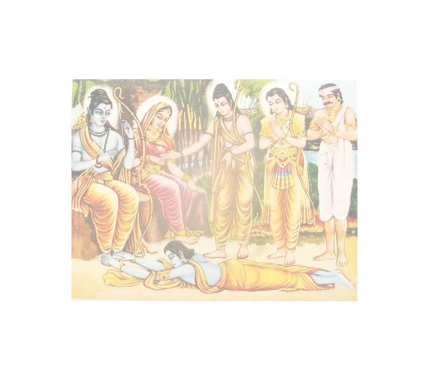
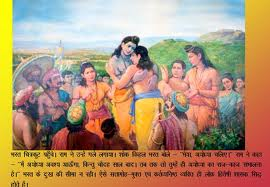

चौपाई :
तब केवट ऊँचे चढ़ि धाई। कहेउ भरत सन भुजा उठाई॥ नाथ देखिअहिं बिटप बिसाला। पाकरि जंबु रसाल तमाला॥ 1 ॥
तब केवट दौड़कर ऊँचे चढ़ गया और भुजा उठाकर भर त जी से कहने लगा- हे नाथ! ये जो पाकर , जामुन , आम और तमाल के विशाल वृक्ष दिखाई देते हैं …. ॥ 1 ॥
जिन्ह तरुबरन्ह मध्य बटु सोहा। मंजु बिसाल देखि मनु मोहा॥ नील सघन पल्लव फल लाला। अबिरल छाहँ सुखद सब काला॥ 2 ॥
जिन श्रेष्ठ वृक्षों के बीच में जो एक सुंदर विशाल बड़ का वृक्ष सुशोभित है , जिसको देखकर मन मोहित हो जाता है , उसके पत्ते नीले और सघन हैं और उसमें लाल फल लगे हैं। उसकी घनी छाया सब ऋतुओं में निरंतर सुख देने वाली है॥ 2 ॥
मानहुँ तिमिर अरुनमय रासी। बिरची बिधि सँकेलि सुषमा सी॥ ए तरु सरित समीप गोसाँई। रघुबर परनकुटी जहँ छाई॥ 3 ॥
मानो ब्रह्माजी ने परम शोभा को एकत ्र करके अंधकार और लालिमामयी छटा सी रच दी है। हे गुसाईं! ये वृक्ष नदी के समीप हैं , जहाँ श्री राम की पर्णकुटी छाई है॥ 3 ॥
तुलसी तरुबर बिबिध सुहाए। कहुँ कहुँ सियँ कहुँ लखन लगाए॥ बट छायाँ बेदिका बनाई। सियँ निज पानि सरोज सुहाई॥ 4 ॥
वहाँ तुलसीजी के बहुत से सुंदर वृक्ष सुशोभित हैं , जो कहीं-कहीं सीताजी ने और कहीं लक्ष्मणजी ने लगाए हैं। इसी बड़ की छाया में सीताजी ने अपने करकमलों से सुंदर वेदी बनाई है॥ 4 ॥
दोहा :
जहाँ बैठि मुनिगन सहित नित सिय रामु सुजान। सुनहिं कथा इतिहास सब आगम निगम पुरान॥ 237 ॥
जहाँ सुजान श्री सीता-रामजी मुनियों के वृन्द समेत बैठकर नित्य शास्त्र , वेद और पुराणों के सब कथा-इतिहास सुनते हैं॥ 237 ॥
चौपाई :
सखा बचन सुनि बिटप निहारी। उमगे भरत बिलोचन बारी॥ करत प्रनाम चले दोउ भाई। कहत प्रीति सारद सकुचाई॥ 1 ॥
सखा के वचन सुनकर और वृक्षों को देखकर भरतजी के नेत्रों में जल उमड़ आया। दोनों भाई प्रणाम करते हुए चले। उनके प्रेम का वर्णन करने में सरस्वतीजी भी सकुचाती हैं॥ 1 ॥
हरषहिं निरखि राम पद अंका। मानहुँ पारसु पायउ रंका॥ रज सिर धरि हियँ नयनन्हि लावहिं। रघुबर मिलन सरिस सुख पावहिं॥ 2 ॥
श्री रामचन्द्रजी के चरणचिह्न देखकर दोनों भाई ऐसे हर्षित होते हैं , मानो दरिद्र पार स पा गया हो। वहाँ की रज को माथे पर , हृदय में और नेत्रों में लगा ते हैं और श्री रघुनाथजी के मिलन के समान सुख पाते हैं॥ 2 ॥
देखि भरत गति अकथ अतीवा। प्रेम मगन मृग खग जड़ जीवा॥ सखहि सनेह बिबस मग भूला। कहि सुपंथ सुर बरषहिं फूला॥ 3 ॥
भरतजी की अत्यन्त अनिर्वचनीय दशा देखकर वन के पशु , पक्षी और जड़ (वृक्षादि) जीव प्रेम में मग्न हो गए। प्रेम के विशेष वश होने से सखा निषादराज को भी रास्ता भूल गया। तब देवता सुंदर रास्ता बतलाकर फूल बरसाने लगे॥ 3 ॥
निरखि सिद्ध साधक अनुरागे। सहज सनेहु सराहन लागे॥ होत न भूतल भाउ भरत को। अचर सचर चर अचर करत को ॥ 4 ॥
भरत के प्रेम की इस स्थिति को देखकर सिद्ध और साधक लोग भी अनुराग से भर गए और उनके स्वाभाविक प्रेम की प्रशंसा करने लगे कि यदि इस पृथ्वी तल पर भरत (प्रेम भक्ति ) का जन्म न होता , तो जड़ को चेतन और चेतन को जड़ कौन करता ? ॥ 4 ॥
दोहा :
पेम अमिअ मंदरु बिरहु भरतु पयोधि गँभीर। मथि प्रगटेउ सुर साधु हित कृपासिंधु रघुबीर॥ 238 ॥
प्रेम अमृत है , विरह मंदराचल पर्वत है , भरतजी गहरे समुद्र हैं। कृपा के समुद्र श्री रामचन्द्रजी ने देवता और साधुओं के हित के लिए स्वयं (इस भरत रूपी गहरे समुद्र को अपने विरह रूपी मंदराचल से) मथकर यह प्रेम रूपी अमृत प्रकट किया है॥ 238 ॥
चौपाई :
सखा समेत मनोहर जोटा। लखेउ न लखन सघन बन ओटा॥ भरत दीख प्रभु आश्रमु पावन। सकल सुमंगल सदनु सुहावन॥ 1 ॥
सखा निषादराज सह ित इस मनोहर जोड़ी को सघन वन की ओट होने के कारण लक्ष्मणजी नहीं देख पाए। भरतजी ने प्रभु श्री रामचन्द्रजी के समस्त सुमंगलों के धाम और सुंदर पवित्र आश्रम -परमधाम को देखा॥ 1 ॥
करत प्रबेस मिटे दुख दावा। जनु जोगीं परमारथु पावा॥ देखे भरत लखन प्रभु आगे। पूँछे बचन कहत अनुरागे॥ 2 ॥
आश्रम में प्रवेश करते ही भरतजी का दुःख और दाह (जलन) मिट गया , मानो योगी को परमार्थ (परमतत्व) की प्राप्ति हो गई हो। भरतजी ने देखा कि लक्ष्मणजी प्रभु के आगे खड़े हैं और पूछ े हुए वचन - पूछी हुई बात का प्रेमपूर्वक उत्तर दे रहे हैं। ॥ 2 ॥
सीस जटा कटि मुनि पट बाँधें। तून कसें कर सरु धनु काँधें॥ बेदी पर मुनि साधु समाजू। सीय सहित राजत रघुराजू॥ 3 ॥
सिर पर जटा है , कमर में मुनियों का (वल्कल) वस्त्र बाँधे हैं और उसी में तरकस कसे हैं। हाथ में बाण तथा कंधे पर धनुष है , वेदी पर मुनि तथा साधुओं का समुदाय बैठा है और सीताजी सहित श्री रघुनाथजी विराजमान हैं॥ 3 ॥
बलकल बसन जटिल तनु स्यामा। जनु मुनिबेष कीन्ह रति कामा॥ कर कमलनि धनु सायकु फेरत। जिय की जरनि हरत हँसि हेरत॥ 4 ॥
श्री रामजी के वल्कल वस्त्र हैं , जटा धारण किए हैं , श्याम शरीर है। (सीता-रामजी ऐसे लगते हैं) मानो रति और कामदेव ने मुनि का वेष धारण किया हो। श्री रामजी अपने करकमलों से धनुष-बाण सहला रहे हैं और ज्यों ही हँसकर देखते ही त्यों ही (हर किसी की ) जी की जलन हर लेते हैं । ॥ 4 ॥
दोहा :
लसत मंजु मुनि मंडली मध्य सीय रघुचंदु। ग्यान सभाँ जनु तनु धरें भगति सच्चिदानंदु॥ 239 ॥
सुंदर मुनि मंडली के बीच में सीताजी और र घुकुलचं दा श्री रामचन्द्रजी ऐसे सुशोभित हो रहे हैं मानो ज्ञान की सभा में साक्षात् भक्ति और सच्चिदानंद शरीर धारण करके विराजमान हैं॥ 239 ॥
चौपाई :
सानुज सखा समेत मगन मन। बिसरे हरष सोक सुख दुख गन॥ पाहि नाथ कहि पाहि गोसाईं। भूतल परे लकुट की नाईं ॥ 1 ॥
छोटे भाई शत्रुघ्न और सखा निषादराज समेत भरतजी का मन (प्रेम में) मग्न हो रहा है। हर्ष-शोक , सुख-दुःख आदि सब भूल गए। हे नाथ! रक्षा कीजिए , हे गुसाईं! रक्षा कीजिए ' ऐसा क हकर वे पृथ्वी पर दण्ड की तरह पड़ गये ॥ 1 ॥
बचन सप्रेम लखन पहिचाने। करत प्रनामु भरत जियँ जाने॥ बंधु सनेह सरस एहि ओरा। उत साहिब सेवा बस जोरा ॥ 2 ॥

प्रेम भरे वचनों से लक्ष्मणजी ने पहचान लिया और मन में जान लिया कि भरतजी प्रणाम कर रहे हैं। अब इस ओर तो भाई भरतजी का सरस प्रेम और उधर स्वामी श्री रामचन्द्रजी की सेवा की प्रबल प्रधानता और अनुशासन.... ॥ 2 ॥
मिलि न जाइ नहिं गुदरत बनई। सुकबि लखन मन की गति भनई॥ रहे राखि सेवा पर भारू। चढ़ी चंग जनु खैंच खेलारू॥ 3 ॥
न तो (क्षणभर के लिए भी सेवा में चूकने से ) मिलते ही बनता है और न (प्रेमवश) छोड़ते (उपेक्षा करते) ही। कोई श्रेष्ठ कवि ही लक्ष्मणजी के चित्त की इस गति (दुविधा) का वर्णन कर सकता है। वे सेवा को ही स्नेह पर भारी मानकर उसी में लगे रहे । मानो चढ़ी हुई पतंग को खिलाड़ी खींच रहा हो॥ 3 ॥
कहत सप्रेम नाइ महि माथा। भरत प्रनाम करत रघुनाथा ॥ उठे रामु सुनि पेम अधीरा। कहुँ पट कहुँ निषंग धनु तीरा॥ 4 ॥
लक्ष्मणजी ने प्रेम सहित पृथ्वी पर मस्तक नवाकर कहा- हे रघुनाथजी! भरतजी प्रणाम कर रहे हैं। यह सुनते ही श्री रघुनाथजी प्रेम में अधीर होकर उठे। कहीं वस्त्र गिरा , कहीं तरकस , कहीं धनुष और कहीं बाण ..... (बस एक भरत !) ॥ 4 ॥
दोहा
बरबस लिए उठाइ उर लाए कृपानिधान। भरत राम की मिलनि लखि बिसरे सबहि अपान ॥ 240 ॥
कृपा निधान श ्री रामचन्द्रजी ने उनको बरबस ही-बलपूर्वक उठाकर हृदय से लगा लिया! भरतजी और श्री रामजी का मिलन –मिलाप निहारते सबको अपनी सुध -बुध बिसर गई ..... (राम भरत मिलनी में ही मिल गए!) ॥ 240 ॥
चौपाई :
मिलनि प्रीति किमि जाइ बखानी। कबिकुल अगम करम मन बानी॥ परम प्रेम पूरन दोउ भाई। मन बुधि चित अहमिति बिसराई॥ 1 ॥
मिलन की प्रीति कैसे बखानी जाए ? वह तो कविकुल के लिए कर्म , मन , वाणी तीनों से अगम -परे है। दोनों भाई (भरतजी और श्री रामजी) मन , बुद्धि , चित्त और गर्व को भुलाकर परम प्रेम से पूर्ण हो (मिल) रहे हैं॥ 1 ॥
कहहु सुपेम प्रगट को करई। केहि छाया कबि मति अनुसरई॥ कबिहि अरथ आखर बलु साँचा। अनुहरि ताल गतिहि नटु नाचा॥ 2 ॥
कहिए , उस श्रेष्ठ प्रेम को कौन प्रकट करे ? कवि की बुद्धि किसकी छाया का अनुसरण करे ? कवि को तो अक्षर और अर्थ का ही सच्चा बल है। नट तो ताल की चाल -थाप के अनुसार ही नाचता है!॥ 2 ॥
अगम सनेह भरत रघुबर को। जहँ न जाइ मनु बिधि हरि हर को॥ सो मैं कुमति कहौं केहि भाँति। बाज सुराग कि गाँडर ताँती॥ 3 ॥
भरतजी और श्री रघुनाथजी का प्रेम अगम्य है , जहाँ ब्रह्मा , विष्णु और महादेव का भी मन नहीं जा सकता। उस प्रेम को मैं कुबुद्धि किस प्रकार कहूँ! भला , पानी के घास की (नाजुक) ताँत से भी कहीं सुंदर राग बज सकता है ? ॥ 3 ॥
मिलनि बिलोकि भरत रघुबर की। सुरगन सभय धकधकी धरकी॥ समुझाए सुरगुरु जड़ जागे। बरषि प्रसून प्रसंसन लागे॥ 4 ॥
भरतजी और श्री रामचन्द्रजी के मिलने का ढंग देखकर देवता भयभीत हो गए , उन के ह्रदय की धुकधुकी बन्ध गई , धड़कने तेज होने लगी । देव गुरु बृहस्पतिजी ने समझाया , तब कहीं वे मूर्ख चेते और फूल बरसाकर प्रशंसा करने लगे॥ 4 ॥
दोहा :
मिलि सपेम रिपुसूदनहि केवटु भेंटेउ राम। भूरि भायँ भेंटे भरत लछिमन करत प्रनाम॥ 241 ॥
फिर श्री रामजी प्रेम के साथ शत्रुघ्न से मिलकर तब केवट (निषादराज) से मिले। प्रणाम करते हुए लक्ष्मणजी से भरतजी बड़े ही प्रेम से मिले॥ 241 ॥
चौपाई :
भेंटेउ लखन ललकि लघु भाई। बहुरि निषादु लीन्ह उर लाई॥ पुनि मुनिगन दुहुँ भाइन्ह बंदे। अभिमत आसिष पाइ अनंदे॥ 1 ॥
तब लक्ष्मणजी ललककर (बड़ी उमंग के साथ) छोटे भाई शत्रुघ्न से मिले। फिर उन्होंने निषादराज को हृदय से लगा लिया। फिर भरत-शत्रुघ्न दोनों भाइयों ने (उपस्थित) मुनियों को प्रणाम किया और इच्छित आशीर्वाद पाकर वे आनंदित हुए॥ 1 ॥
सानुज भरत उमगि अनुरागा। धरि सिर सिय पद पदुम परागा॥ पुनि पुनि करत प्रनाम उठाए। सिर कर कमल परसि बैठाए॥ 2 ॥
छोटे भाई शत्रुघ्न सहित भरतजी प्रेम में उमँगकर सीताजी के चरण कमलों की रज सिर पर धारण कर बार-बार प्रणाम करने लगे। सीताजी ने उन्हें उठाकर उनके सिर को अपने करकमल से स्पर्श कर (सिर पर हाथ फेरकर) उन दोनों को बैठाया॥ 2 ॥
सीयँ असीस दीन्हि मन माहीं। मनग सनेहँ देह सुधि नाहीं॥ सब बिधि सानुकूल लखि सीता। भे निसोच उर अपडर बीता॥ 3 ॥
सीताजी ने मन ही मन आशीर्वाद दिया , क्योंकि वे स्नेह में मग्न हैं , उन्हें देह की सुध-बुध नहीं है। सीताजी को सब प्रकार से अपने अनुकूल देखकर भरतजी सोचरहित हो गए और उनके हृदय का कल्पित भय जाता रहा॥ 3 ॥
कोउ किछु कहई न कोउ किछु पूँछा। प्रेम भरा मन निज गति छूँछा॥ तेहि अवसर केवटु धीरजु धरि। जोरि पानि बिनवत प्रनामु करि॥ 4 ॥
उस समय न तो कोई कुछ कहता है , न कोई कुछ पूछता है! मन प्रेम से परिपूर्ण है , वह अपनी गति से खाली है , बस प्रेम स्नेह में स्थिर –अचल है । उस अवसर पर केवट (निषादराज) धीरज धर और हाथ जोड़कर प्रणाम करके विनती करने लगा-॥ 4 ॥
दोहा :
नाथ साथ मुनिनाथ के मातु सकल पुर लोग। सेवक सेनप सचिव सब आए बिकल बियोग॥ 242 ॥
हे नाथ! मुनिनाथ वशिष्ठजी के साथ सब माताएँ , नगरवासी , सेवक , सेनापति , मंत्री- सब आपके वियोग से व्याकुल होकर आए हैं॥ 242 ॥
चौपाई :
सीलसिंधु सुनि गुर आगवनू। सिय समीप राखे रिपुदवनू॥ चले सबेग रामु तेहि काला। धीर धरम धुर दीनदयाला॥ 1 ॥
गुरु का आगमन सुनकर शील के समुद्र श्री रामचन्द्रजी ने सीताजी के पास शत्रुघ्नजी को छोड़ा और वे परम धीर , धर्मधुरंधर , दीनदयालु श्री रामचन्द्रजी उसी समय वेग के साथ चल पड़े॥ 1 ॥
गुरहि देखि सानुज अनुरागे। दंड प्रनाम करन प्रभु लागे॥ मुनिबर धाइ लिए उर लाई। प्रेम उमगि भेंटे दोउ भाई॥ 2 ॥
गुरुजी के दर्शन करके लक्ष्मणजी सहित प्रभु श्री रामचन्द्रजी प्रेम में भर गए और दण्डवत प्रणाम करने लगे। मुनिश्रेष्ठ वशिष्ठजी ने दौड़कर उन्हें हृदय से लगा लिया और प्रेम में उमँगकर वे दोनों भाइयों से मिले॥ 2 ॥
प्रेम पुलकि केवट कहि नामू। कीन्ह दूरि तें दंड प्रनामू॥ राम सखा रिषि बरबस भेंटा। जनु महि लुठत सनेह समेटा॥ 3 ॥
फिर प्रेम से पुलकित होकर केवट (निषादराज) ने अपना नाम लेकर दूर से ही वशिष्ठजी को दण्डवत प्रणाम किया। ऋषि वशिष्ठजी ने रामसखा जानकर उसको ज बर्दस्ती हृदय से लगा लिया। जैसे जमीन पर लोटते हुए प्रेम को समेट लिया हो॥ 3 ॥
रघुपति भगति सुमंगल मूला। नभ सराहि सुर बरिसहिं फूला॥ एहि सम निपट नीच कोउ नाहीं। बड़ बसिष्ठ सम को जग माहीं॥ 4 ॥
श्री रघुनाथजी की भक्ति सुंदर मंगलों का मूल है , इस प्रकार कहकर सराहना करते हुए देवता आकाश से फूल बरसाने लगे। वे कहने ल गे- जगत में इसके समान सर्वथा तुच्छ कोई नहीं और वशिष्ठजी के समान बड़ा कौन है ? ( दो धुरवों का मिलन! राम भक्ति का प्रभाव ।) ॥ 4 ॥
दोहा :
जेहि लखि लखनहु तें अधिक मिले मुदित मुनिराउ। सो सीतापति भजन को प्रगट प्रताप प्रभाउ॥ 243 ॥
जिस (निषाद) को देखकर मुनिराज वशिष्ठजी लक्ष्मणजी स े भी अधिक उससे आनंदित होकर मिले , यह सब सीतापति श्री रामचन्द्रजी के भजन का प्रत्यक्ष प्रताप और प्रभाव है॥ 243 ॥
चौपाई :
आरत लोग राम सबु जाना। करुनाकर सुजान भगवाना॥ जो जेहि भायँ रहा अभिलाषी। तेहि तेहि कै तसि तसि रुख राखी ॥ 1 ॥
दया की खान , सुजान भगवान श्री रामजी ने सब लोगों को दुःखी (मिलने के लिए व्याकुल) जाना। तब जो जिस भाव से मिलने का अभिलाषी है , उस-उस का उस-उस प्रकार से रुख रखते हुए (उसकी रुचि के अनुसार ) ..... ॥ 1 ॥
सानुज मिलि पल महुँ सब काहू। कीन्ह दूरि दुखु दारुन दाहू॥ यह बड़ि बात राम कै नाहीं। जिमि घट कोटि एक रबि छाहीं ॥ 2 ॥
उन्होंने लक्ष्मणजी सहित पल भर में सब किसी से मिलकर उनके दुःख और कठिन संताप को दूर कर दिया। श्री रामचन्द्रजी के लिए यह कोई बड़ी बात नहीं है। जैसे करोड़ों घड़ों में एक ही सूर्य की (पृथक-पृथक) छाया (प्रतिबिम्ब) एक साथ ही दिखती है .... (खण्ड खण्ड अखण्ड श्री राम !) ॥ 2 ॥
मिलि केवटहि उमगि अनुरागा। पुरजन सकल सराहहिं भागा॥ देखीं राम दुखित महतारीं। जनु सुबेलि अवलीं हिम मारीं॥ 3 ॥
समस्त पुरवासी प्रेम में उमँगकर केवट से मिलकर (उसके) भाग्य की सराहना करते हैं। श्री रामचन्द्रजी ने सब माताओं को दुःखी देखा। मानो सुंदर लताओं की पंक्तियों को पाला मार गया हो॥ 3 ॥
प्रथम राम भेंटी कैकेई। सरल सुभायँ भगति मति भेई॥ पग परि कीन्ह प्रबोधु बहोरी। काल करम बिधि सिर धरि खोरी ॥ 4 ॥
सबसे पहले रामजी कैकेयी से मिले और अपने सरल स्वभाव तथा भक्ति से उसकी बुद्धि को तर कर दिया। फिर चरणों में गिरकर काल , कर्म और विधाता के सिर दोष मढ़कर , श्री रामजी ने उनको सान्त्वना दी॥ 4 ॥
दोहा :
भेटीं रघुबर मातु सब करि प्रबोधु परितोषु। अंब ईस आधीन जगु काहु न देइअ दोषु ॥ 244 ॥
फिर श्री रघुनाथजी सब माताओं से मिले। उन्होंने सबको समझा-बुझाकर संतोष कराया कि हे माता! जगत ईश्वर के अधीन है। किसी को भी दोष नहीं देना चाहिए॥ 244 ॥
गुरतिय पद बंदे दुहु भाईं। सहित बिप्रतिय जे सँग आईं॥ गंग गौरिसम सब सनमानीं। देहिं असीस मुदित मृदु बानीं॥ 1 ॥
फिर दोनों भाइयों ने ब्राह्मणों की स्त्रियों सहित- जो भरतजी के साथ आई हैं , गुरुजी की पत्नी अरुंधतीजी के चरणों की वंदना की और उन सबका गंगाजी तथा गौरीजी के समान सम्मान किया। वे सब आनंदित होकर कोमल वाणी से आशीर्वाद देने लगीं॥ 1 ॥
गहि पद लगे सुमित्रा अंका। जनु भेंटी संपति अति रंका॥ पुनि जननी चरननि दोउ भ्राता। परे पेम ब्याकुल सब गाता॥ 2 ॥
तब दोनों भाई पैर पकड़कर सुमित्राजी की गोद में जा चिपटे। मानो किसी अत्यन्त दरिद्र की सम्पत्ति से भेंट हो गई हो। फिर दोनों भाई माता कौसल्याजी के चरणों में गिर पड़े। प्रेम के मारे उनके सारे अंग शिथिल हैं॥ 2 ॥
अति अनुराग अंब उर लाए। नयन सनेह सलिल अन्हवाए॥ तेहि अवसर कर हरष बिषादू। किमि कबि कहै मूक जिमि स्वादू ॥ 3 ॥
बड़े ही स्नेह से माता ने उन्हें हृदय से लगा लिया और नेत्रों से बहे हुए प्रेमाश्रुओं के जल से उन्हें नहला दिया। उस समय के हर्ष और विषाद को कवि कैसे कहे ? जैसे गूँगा ( गुड़ के) स्वाद को कैसे बतावे ? ॥ 3 ॥
मिलि जननिहि सानुज रघुराऊ। गुर सन कहेउ कि धारिअ पाऊ॥ पुरजन पाइ मुनीस नियोगू। जल थल तकि तकि उतरेउ लोगू॥ 4 ॥
श्री रघुनाथजी ने छोटे भाई लक्ष्मणजी सहित माता कौसल्या से मिलकर गुरु से कहा कि आश्रम पर पधारिए। तदनन्तर मुनीश्वर वशिष्ठजी की आज्ञा पाकर अयोध्यावासी सब लोग जल और थल का सुभीता -सुविधा देख-देखकर उतर गए॥ 4 ॥
दोहा :
महिसुर मंत्री मातु गुरु गने लोग लिए साथ। पावन आश्रम गवनु किए भरत लखन रघुनाथ॥ 245 ॥
ब्राह्मण , मंत्री , माताएँ और गुरु आदि गिने-चुने लोगों को साथ लिए हुए , भरतजी , लक्ष्मणजी और श्री रघुनाथजी पवित्र आश्रम को चले॥ 245 ॥
चौपाई :
सीय आइ मुनिबर पग लागी। उचित असीस लही मन मागी॥ गुरपतिनिहि मुनितियन्ह समेता। मिली पेमु कहि जाइ न जेता॥ 1 ॥
सीताजी आकर मुनि श्रेष्ठ वशिष्ठजी के चरणों लगीं और उन्होंने मन माँगी उचित आशीष पाई। फिर मुनियों की स्त्रियों सहित गुरु पत्नी अरुन्धतीजी से मिलीं। उनका जितना प्रेम था , वह कहा नहीं जाता॥ 1 ॥
बंदि बंदि पग सिय सबही के। आसिरबचन लहे प्रिय जी के। सासु सकल सब सीयँ निहारीं। मूदे नयन सहमि सुकुमारीं॥ 2 ॥
सीताजी ने सभी के चरणों की अलग-अलग वंदना करके अपने हृदय को प्रिय (अनुकूल) लगने वाले (मनोवांछित) आशीर्वाद पाए। जब सुकुमारी सीताजी ने सब सासुओं को देखा , तब उन्होंने सहमकर अपनी आँखें बंद कर लीं॥ 2 ॥
परीं बधिक बस मनहुँ मरालीं। काह कीन्ह करतार कुचालीं॥ तिन्ह सिय निरखि निपट दुखु पावा। सो सबु सहिअ जो दैउ सहावा ॥ 3 ॥
( सासुओं की बुरी दशा देखकर) उन्हें ऐसा प्रतीत हुआ मानो राजहंसिनियाँ बधिक के वश में पड़ गई हों। (मन में सोचने लगीं कि) कुचाली विधाता ने क्या कर डाला ? उन्होंने भी सीताजी को देखकर बड़ा दुःख पाया। (सोचा) जो कुछ दैव सहावे , वह सब सहना ही पड़ता है॥ 3 ॥
जनकसुता तब उर धरि धीरा। नील नलिन लोयन भरि नीरा॥ मिली सकल सासुन्ह सिय जाई। तेहि अवसर करुना महि छाई॥ 4 ॥
तब जानकीजी हृदय में धीरज धरकर , नील कमल के समान नेत्रों में जल भरकर , सब सासुओं से जाकर मिलीं। उस समय पृथ्वी पर करुणा ही करुणा छा गई॥ 4 ॥
दोहा :
लागि लागि पग सबनि सिय भेंटति अति अनुराग। हृदयँ असीसहिं पेम बस रहिअहु भरी सोहाग॥ 246 ॥
सीताजी सबके पैरों लग-लगकर अत्यन्त प्रेम से मिल रही हैं और सब सासुएँ स्नेहवश हृदय से आशीर्वाद दे रही हैं कि तुम सुहाग से भरी रहो (अर्थात सदा सौभाग्यवती रहो)॥ 246 ॥
चौपाई :
बिकल सनेहँ सीय सब रानीं। बैठन सबहि कहेउ गुर ग्यानीं॥ कहि जग गति मायिक मुनिनाथा॥ कहे कछुक परमारथ गाथा॥ 1 ॥
सीताजी और सब रानियाँ स्नेह के मारे व्याकुल हैं। तब ज्ञानी गुरु ने सबको बैठ जाने के लिए कहा। फिर मुनिनाथ वशिष्ठजी ने जगत की चाल को माया के अधीन कहकर कुछ परमार्थ –ज्ञान की कथाएँ (बातें) कहीं॥ 1 ॥
नृप कर सुरपुर गवनु सुनावा। सुनि रघुनाथ दुसह दुखु पावा॥ मरन हेतु निज नेहु बिचारी। भे अति बिकल धीर धुर धारी॥ 2 ॥
तदनन्तर वशिष्ठजी ने राजा दशरथजी के स्वर्ग गमन की बात सुनाई। जिसे सुनकर रघु नाथजी ने दुःसह दुःख पाया और स्वयं से अथाह स्नेह ( और फिर वियोग से उतप्न्न दु:ख ) को उनके मरने का कारण विचारकर धीर धुरन्धर श्री रामचन्द्रजी अत्यन्त व्याकुल हो गए॥ 2 ॥
कुलिस कठोर सुनत कटु बानी। बिलपत लखन सीय सब रानी॥ सोक बिकल अति सकल समाजू। मानहूँ राजु अकाजेउ आजू॥ 3 ॥
वज्र के समान कठोर , कड़वी वाणी सुनकर लक्ष्मणजी , सीताजी और सब रानियाँ विलाप करने लगीं। सारा समाज शोक से अत्यन्त व्याकुल हो गया! मानो राजा आज ही मरे हों॥ 3 ॥
मुनिबर बहुरि राम समुझाए। सहित समाज सुसरित नहाए॥ ब्रत निरंबु तेहि दिन प्रभु कीन्हा। मुनिहु कहें जलु काहुँ न लीन्हा॥ 4 ॥
फिर मुनिश्रेष्ठ वशिष्ठजी ने श्री रामजी को समझाया। तब उन्होंने समाज सहित श्रेष्ठ नदी मंदाकिनीजी में स्नान किया। उस दिन प्रभु श्री रामचन्द्रजी ने निर्जल व्रत किया। मुनि वशिष्ठजी के कहने पर भी किसी ने जल ग्रहण नहीं किया॥ 4 ॥
दोहा :
भोरु भएँ रघुनंदनहि जो मुनि आयसु दीन्ह। श्रद्धा भगति समेत प्रभु सो सबु सादरु कीन्ह॥ 247 ॥
दूसरे दिन सबेरा होने पर मुनि वशिष्ठजी ने श्री रघुनाथजी को जो-जो आज्ञा दी , वह सब कार्य प्रभु श्री रामचन्द्रजी ने श्रद्धा-भक्ति सहित आदर के साथ किया॥ 247 ॥
चौपाई :
करि पितु क्रिया बेद जसि बरनी। भे पुनीत पातक तम तरनी॥ जासु नाम पावक अघ तूला। सुमिरत सकल सुमंगल मूला॥ 1 ॥
वेदों में जैसा कहा गया है , उसी के अनुसार पिता की क्रिया करके , पाप रूपी अंधकार के नष्ट करने वाले सूर्यरूप श्री रामचन्द्रजी शुद्ध हुए! जिनका नाम पाप रूपी रूई के (तुरंत जला डालने के) लिए अग्नि है और जिनका सुम रण मात्र समस्त शुभ मंगलों का मूल है , ॥ 1 ॥
सुद्ध सो भयउ साधु संमत अस। तीरथ आवाहन सुसरिजस॥ सुद्ध भएँ दुइ बासर बीते। बोले गुर सनराम पिरीते॥ 2 ॥
वे (नित्य शुद्ध-बुद्ध) भगवान श्री रामजी शुद्ध हुए! साधुओं की ऐसी सम्मति है कि उनका शुद्ध होना वैसे ही है जैसा तीर्थों के आवाहन से गंगाजी शुद्ध होती हैं! जब शुद्ध हुए दो दिन बीत गए तब श्री रामचन्द्रजी प्रीति के साथ गुरुजी से बोले-॥ 2 ॥
नाथ लोग सब निपट दुखारी। कंद मूल फल अंबु आहारी॥ सानुज भरतु सचिव सब माता। देखि मोहि पल जिमि जुग जाता॥ 3 ॥
हे नाथ! सब लोग यहाँ अत्यन्त दुःखी हो रहे हैं। कंद , मूल , फल और जल का ही आहार करते हैं। भाई शत्रुघ्न सहित भरत को , मंत्रियों को और सब माताओं को देखकर मुझे एक-एक पल युग के समान बीत रहा है॥ 3 ॥
सब समेत पुर धारिअ पाऊ। आपु इहाँ अमरावति राऊ॥ बहुत कहेउँ सब कियउँ ढिठाई। उचित होइ तस करिअ गोसाँई॥ 4 ॥
अतः सबके साथ आप अयोध्यापुरी को पधारिए (लौट जाइए)। आप यहाँ हैं और राजा अमरावती (स्वर्ग) में हैं (अयोध्या सूनी है)! मैंने बहुत कह डाला , यह सब बड़ी ढिठाई की है। हे गोसाईं! जैसा उचित हो , वैसा ही कीजिए॥ 4 ॥
दोहा :
धर्म सेतु करुनायतन कस न कहु अस राम। लोग दुखित दिन दुइ दरस देखि लहहुँ बिश्राम॥ 248 ॥
( वशिष्ठजी ने कहा-) हे राम! तुम धर्म के सेतु और दया के धाम हो , तुम भला ऐसा क्यों न कहो ? लोग दुःखी हैं। दो दिन तुम्हारा दर्शन कर शांति लाभ कर लें॥ 248 ॥
चौपाई :
राम बचन सुनि सभय समाजू। जनु जलनिधि महुँ बिकल जहाजू॥ सुनि गुर गिरा सुमंगल मूला। भयउ मनहुँ मारुत अनुकूला॥ 1 ॥
श्री रामजी के वचन सुनकर सारा समाज भयभीत हो गया। मानो बीच समुद्र में जहाज डगमगा गया हो , परन्तु जब उन्होंने गुरु वशिष्ठजी की श्रेष्ठ कल्याणमूलक वाणी सुनी , तो उस जहाज के लिए मानो हवा अनुकूल हो गई॥ 1 ॥
पावन पयँ तिहुँ काल नहाहीं। जो बिलोकि अघ ओघ नसाहीं॥ मंगलमूरति लोचन भरि भरि। निरखहिं हरषि दंडवत करि करि॥ 2 ॥
सब लोग पवित्र पयस्विनी नदी में तीनों समय (सबेरे , दोपहर और सायंकाल) स्नान करते हैं , जिसके दर्शन से ही पापों के समूह नष्ट हो जाते हैं और मंगल मूर्ति श्री रामचन्द्रजी को बारम्बार दण्डवत प्रणाम कर ते हैं उन्हें (सब समय) नेत्र भर-भरकर देखते हैं॥ 2 ॥
राम सैल बन देखन जाहीं। जहँ सुख सकल सकल दुख नाहीं॥ झरना झरहिं सुधासम बारी। त्रिबिध तापहर त्रिबिध बयारी॥ 3 ॥
सब श्री रामचन्द्रजी के पर्वत (कामदगिरि) और वन को देखने जाते हैं , जहाँ सभी सुख हैं और समस्त दु ःखों का अभाव है -कोई दु:ख ही नहीं है । झरनों से अमृत के समान जल झरता हैं और तीन प्रकार की (शीतल , मंद , सुगंध) हवा बह रही है जो तीनों ही प्रकार के (आध्यात्मिक , आधिभौतिक , आधिदैविक) तापों को हर लेती है॥ 3 ॥
बिटप बेलि तृन अगनित जाती। फल प्रसून पल्लव बहु भाँती॥ सुंदर सिला सुखद तरु छाहीं। जाइ बरनि बन छबि केहि पाहीं॥ 4 ॥
असंख्य जात के वृक्ष , लताएँ और तृण हैं तथा बहुत तरह के फल , फूल और पत्ते हैं। । वृक्षों की सुख देने वाली छाया में सुंदर शिलाएँ हैं । वन की शोभा किससे वर्णन की जा सकती है ? ॥ 4 ॥
दोहा :
सरनि सरोरुह जल बिहग कूजत गुंजत भृंग। बैर बिगत बिहरत बिपिन मृग बिहंग बहुरंग॥ 249 ॥
तालाबों में कमल खिल रहे हैं । जल के पक्षी कूज रहे हैं । भौंरे गुंजार कर रहे हैं । बहुत रंगों के पक्षी और पशु बिना किसी वाइरभाव के वन में विहार कर रहे हैं॥ 249 ॥
चौपाई :
कोल किरात भिल्ल बनबासी। मधु सुचि सुंदर स्वादु सुधा सी॥ भरि भरि परन पुटीं रचि रूरी। कंद मूल फल अंकुर जूरी॥ 1 ॥
वन के रहने वाले कोल , किरात और भील सुंदर दोने बनाकर और उनमें पवित्र , सुंदर एवं अमृत के समान स्वादिष्ट मधु (शहद) भर-भरकर लाते हैं। कंद , मूल , फल और अंकुर आदि की जूड़ियों -गुच्छियाँ बना- बना के लाये हैं ..... ॥ 1 ॥
सबहि देहिं करि बिनय प्रनामा। कहि कहि स्वाद भेद गुन नामा॥ देहिं लोग बहु मोल न लेहीं। फेरत राम दोहाई देहीं॥ 2 ॥
और सबको विनय और प्रणाम करके आदरसहित उन चीजों के अलग-अलग स्वाद , भेद (प्रकार) , गुण और नाम बता-बताकर देते हैं। लोग उनका बहुत दाम देते हैं पर वे नहीं लेते । श्री रामजी की दुहाई देते हुये (दृढ़ता से) लौटा देते हैं॥ 2 ॥
कहहिं सनेह मगन मृदु बानी। मानत साधु पेम पहिचानी॥ तुम्ह सुकृती हम नीच निषादा। पावा दरसनु राम प्रसादा ॥ 3 ॥
प्रेम म ें मग्न हुए वे कोमल वाणी से विनती करते हैं कि आप साधु लोग हैं , प्रेम को पहचान सकते हैं। प्रेम स्नेह का सम्मान करते हैं । आप तो पुण्यात्मा हैं , हम तुच्छ निषाद है ं। श्री रामजी की कृपा से प्रशाद स्वरूप ही हमें आप लोगों के दर्शन सुलभ हुये हैं॥ 3 ॥
हमहि अगम अति दरसु तुम्हारा। जस मरु धरनि देवधुनि धारा॥ राम कृपाल निषाद नेवाजा। परिजन प्रजउ चहिअ जस राजा ॥ 4 ॥
जैसे मरुभूमि के लिए गंगाजी की धारा दुर्लभ है वैसे ही हम लोगों को आपके दर्शन बड़े ही दुर्लभ हैं ! (देखिए) कृपालु श ्री रामचन्द्रजी ने निषाद पर कृपा करके उसे कैसे निहाल कर दिया है। इसलिये जैसे राजा राम हैं वैसा ही उनके परिवार और प्रजा को भी होना चाहिए ......( प्रीत के बदले प्रीत! ) ॥ 4 ॥
दोहा :
यह जियँ जानि सँकोचु तजि करिअ छोहु लखि नेहु। हमहि कृतारथ करनलगि फल तृन अंकुर लेहु॥ 250 ॥
हृदय में ऐसा जानकर संकोच छोड़कर और हमारा प्रेम देखकर हम पर कृपा कीजिए । और फल , तृण और अंकुर सब ग्रहण करके हमें कृतार्थ की जिए॥ 250 ॥
चौपाई :
तुम्ह प्रिय पाहुने बन पगु धारे। सेवा जोगु न भाग हमारे॥ देब काह हम तुम्हहि गोसाँई। ईंधनु पात किरात मिताई॥ 1 ॥
आप (हमारे और रामजी के) प्रिय पाहुने वन में पधारे हैं। आपकी सेवा करने के योग्य तो हमारे भाग्य नहीं हैं। हे स्वामी! हम आपको क्या दे सकते हैं ? भीलों की मित्रता , भोलों की पहुँच तो बस , ईंधन (लकड़ी) और पत्तों ही तक है॥ 1 ॥
यह हमारि अति बड़ि सेवकाई। लेहिं न बासन बसन चोराई॥ हम जड़ जीव जीव गन घाती। कुटिल कुचाली कुमति कुजाती ॥ 2 ॥
हम लोग तो जड़ जीव हैं , जीवों की हिंसा करने वाले हैं । कुटिल , कुचाली , कुबुद्धि और कुजाति हैं । हमारी तो यही बड़ी भारी सेवा है कि हम ने आपके कपड़े और बर्तन नहीं चुराये । ॥ 2 ॥
पाप करत निसि बासर जाहीं। नहिं पट कटि नहिं पेट अघाहीं॥ सपनेहुँ धरमबुद्धि कस काऊ। यह रघुनंदन दरस प्रभाऊ ॥ 3 ॥
हमारे दिन-रात पाप करते ही बीतते हैं। तो भी न तो हमारी कमर में कपड़ा है और न पेट ही भरा हैं। हममें स्वप्न में भी कहाँ और कैसी धर्मबुद्धि ? (धर्म , बुध्दी और हमारा मेल कहाँ ?) ( यह जो अब हमारा बर्ताव है ) यह सब तो श्री रघुनाथजी के दर्शन का प्रभाव है ॥ 3 ॥
जब तें प्रभु पद पदुम निहारे। मिटे दुसह दुख दोष हमारे॥ बचन सुनत पुरजन अनुरागे। तिन्ह के भाग सराहन लागे॥ 4 ॥
जब से हमें प्रभु के चरणकम लों के दर्शन हुये हैं त भी से ह मारे दुःसह दुःख और दोष मिटे हैं । वनवास ियों के वचन सुनकर अयोध्या वासी प्रेम मग्न हो गए और उनके भाग्य की सराहना करने लगे॥ 4 ॥
छन्द :
लागे सराहन भाग सब अनुराग बचन सुनावहीं बोलनि मिलनि सिय राम चरन सनेहु लखि सुखु पावहीं॥ नर नारि निदरहिं नेहु निज सुनि कोल भिल्लनि की गिरा। तुलसी कृपा रघुबंसमनि की लोह लै लौका तिरा॥
सब उनके भाग्य की सराहना करने लगे और प्रेम के वचन सुनाने लगे। उन लोगों के बोलने और मिलने का ढंग तथा श्री सीता-रामजी के चरणों में उनका प्रेम देखकर सब सुख पा रहे हैं। उन कोल-भीलों की वाणी सुनकर , प्रेमभाव देख कर सभी नर-नारी अपने आपको , अपने स्नेह प्रेम को उनके सामने तुच्छ मानते हैं । तुलसीदासजी कहते हैं कि यह रघुवंशमणि श्री रामचन्द्रजी की ही कृपा है कि लोहा नौका को अपने ऊपर लेकर तैर गया ॥
सोरठा :
बिहरहिं बन चहु ओर प्रतिदिन प्रमुदित लोग सब। जल ज्यों दादुर मोर भए पीन पावस प्रथम॥ 251 ॥
सब लोग दिनों दिन परम आनंदित होते हुए वन में चारों ओर विचरते हैं। जैसे पहली वर्षा के जल से मेंढक और मोर मोटे -पुष्ट हो जाते हैं ...... ॥ 251 ॥
चौपाई :
पुर जन नारि मगन अति प्रीती। बासर जाहिं पलक सम बीती॥ सीय सासु प्रति बेष बनाई। सादर करइ सरिस सेवकाई॥ 1 ॥
वैसे ही अयोध्यापुरी के पुरुष और स्त्री सभी प्रेम में अत्यन्त मग्न हो रहे हैं। उनके दिन पल के समान बीत जाते हैं। जितनी सासुएँ हैं , उतने ही वेष (रूप) बनाकर सीताजी सब सासुओं की आदरपूर्वक एक सी सेवा करती हैं॥ 1 ॥
लखा न मरमु राम बिनु काहूँ। माया सब सिय माया माहूँ ॥ सीयँ सासु सेवा बस कीन्हीं। तिन्ह लहि सुख सिख आसिष दीन्हीं॥ 2 ॥
श्री रामचन्द्रजी के अतिरिक्त इस भेद को और किसी ने नहीं जाना। सब माताएँ श्री सीताजी की माया में ही (मग्न) हैं। सीताजी ने सासुओं को अपनी सेवा से वश में कर लिया। उन्होंने सुख पाकर सीख और आशीर्वाद दिए॥ 2 ॥
लखि सिय सहित सरल दोउ भाई। कुटिल रानि पछितानि अघाई॥ अवनि जमहि जाचति कैकेई। महि न बीचु बिधि मीचु न देई ॥ 3 ॥
सीताजी समेत दोनों भाइयों (श्री राम-लक्ष्मण) को सरल सहज स्वभ ाव -व्यवहार देखकर कुटिल रानी कैकेयी बड़े घोर पछता ताप में है । वह पृथ्वी तथा यमराज से याचना करती है , किन्तु न तो धरती ही बीच में से फटकर उसे अपने में समा लेती है और न विधाता ही उसे मौत देता है ॥ 3 ॥
लोकहुँ बेद बिदित कबि कहहीं। राम बिमुख थलु नरक न लहहीं ॥ यहु संसउ सब के मन माहीं। राम गवनु बिधि अवध कि नाहीं॥ 4 ॥
लोक और वेद में प्रसिद्ध है और कवि (ज्ञानी) भी कहते हैं कि जो श्री रामजी से विमुख हैं , उन्हें तो नरक में भी ठौर -ठीकाना नहीं मिल ता । सबके मन में एक ही संदेह है। हे विधाता! श्री रामचन्द्रजी का अयोध्या जाना होगा कि नहीं॥ 4 ॥
दोहा :
निसि न नीद नहिं भूख दिन भरतु बिकल सुचि सोच। नीच कीच बिच मगन जस मीनहि सलिल सँकोच॥ 252 ॥
भरतजी को न तो रात को नींद आती है , न दिन में भूख ही लगती है। उन्हें (अपनी करनी का) पछितावा सुई (की सी चुभन की तरह) बड़ा दु:खी – पीड़ित कर रहा हैं , जैसे तल के कीचड़ में डूबी -फंसी हुई मछली जल की कमी से तड़फ रही होती है॥ 252 ॥
चौपाई :
कीन्हि मातु मिस काल कुचाली। ईति भीति जस पाकत साली॥ केहि बिधि होइ राम अभिषेकू। मोहि अवकलत उपाउ न एकू॥ 1 ॥
(भरतजी पश्चाताप के कारण वैसे ही डरे हैं... ) जैसे धान के पकते समय ईति (पानी की अधिकता या सूखे) का भय सताने लगे। माता के मिस, माँ को साधन बनाकर, काल ने बड़ी भारी दुष्ट चाल चली है। अब श्री रामचन्द्रजी का राज्याभिषेक किस प्रकार हो, मुझे तो एक भी उपाय (दूर दूर तक ) नहीं सूझ पड़ता॥1॥
अवसि फिरहिं गुर आयसु मानी। मुनि पुनि कहब राम रुचि जानी॥ मातु कहेहुँ बहुरहिं रघुराऊ। राम जननि हठ करबि कि काऊ॥ 2 ॥
गुरुजी की आज्ञा मानकर तो श्री रामजी अवश्य ही अयोध्या को लौट सकते हैं , पर फिर मुनि वशिष्ठजी तो श्री रामचन्द्रजी की रुचि , रुख जानकर ही कुछ कहें गे। माता कौसल्याजी के कहने से तो श्री रघुनाथजी लौट ही सकते हैं , पर भला , श्री रामजी को जन्म देने वाली माता क्या कभी हठ करेगी ? ॥ 2 ॥
मोहि अनुचर कर केतिक बाता। तेहि महँ कुसमउ बाम बिधाता॥ जौं हठ करउँ त निपट कुकरमू। हरगिरि तें गुरु सेवक धरमू॥ 3 ॥
मुझ सेवक की तो बात ही कितनी है ? उस पर भी एक तो मेरा समय खराब है और दूसरे विधाता भी मेरे विरुद्ध है। यदि मै ं हठ करता हूँ तो यह सरासर घोर कुकर्म , अधर्म , पाप होगा , क्योंकि सेवक का धर्म तो शिवजी के कैला श पर्वत से भी भारी है ( सेवकाई की मर्यादा-सेवक की औकात को भी तो आंकना है । ) ॥ 3 ॥
एकउ जुगुति न मन ठहरानी। सोचत भरतहि रैनि बिहानी॥ प्रात नहाइ प्रभुहि सिर नाई। बैठत पठए रिषयँ बोलाई॥ 4 ॥
एक भी युक्ति भरतजी के मन में जच्च नहीं रही है । सोचते ही सोचते पूरी रात बीत गई। भरतजी प्रातःकाल स्नान ध्यान करके प्रभु श्री रामचन्द्रजी को सिर नवाकर बैठे ही हैं कि ऋषि वशिष्ठजी का बु ला वा आ गया ॥ 4 ॥
दोहा :
गुर पद कमल प्रनामु करि बैठे आयसु पाइ। बिप्र महाजन सचिव सब जुरे सभासद आइ॥ 253 ॥
भरतजी गुरु के चरणकमलों में प्रणाम करके आज्ञा पाकर बैठ गए। उसी समय ब्राह्मण , महाजन , मंत्री आदि सभी सभासद आकर जुट गए॥ 253 ॥
चौपाई :
बोले मुनिबरु समय समाना। सुनहु सभासद भरत सुजाना॥ धरम धुरीन भानुकुल भानू। राजा रामु स्वबस भगवानू ॥ 1 ॥
श्रेष्ठ मुनि वशिष्ठजी समयोचित वचन बोले- हे सभासदों! हे सुजान भरत! सुनो। सूर्यकुल के सूर्य महाराज श्री रामचन्द्र धर्मधुरंधर हैं और स्वतंत्र भगवान हैं॥ 1 ॥
सत्यसंध पालक श्रुति सेतू। राम जनमु जग मंगल हेतु॥ गुर पितु मातु बचन अनुसारी। खल दलु दलन देव हितकारी ॥ 2 ॥
वे सत्य रूप में प्रतिज्ञा पालक हैं औ र वेद ( मर्यादा -नियम) की सीमा हैं। श्री रामजी का अवतार ही जगत के कल्याण के लिए हुआ है। वे गुरु , पिता और माता की आज्ञा के अ नुसार चलने वाले हैं। दुष्टों के दल -समूह का नाश करने वाले और देवताओं के हितकारी हैं॥ 2 ॥
नीति प्रीति परमारथ स्वारथु। कोउ न राम सम जान जथारथु॥ बिधि हरि हरु ससि रबि दिसिपाला। माया जीव करम कुलि काला ॥ 3 ॥
नीति , प्रेम , परमार्थ और स्वार्थ को श्री रामजी के समान यथार्थ में (तत्त्व रूप से) कोई नहीं जानता।
ब्रह्मा , विष्णु , महादेव , चन्द्र , सूर्य , दिक्पाल , माया , जीव , सभी कर्म और काल के हाथ …. ॥ 3 ॥
अहिप महिप जहँ लगि प्रभुताई। जोग सिद्धि निगमागम गाई॥ करि बिचार जियँ देखहु नीकें। राम रजाइ सीस सबही कें ॥ 4 ॥
.... शेषजी और (पृथ्वी एवं पाताल के समस्त ) राजाओं की जहाँ तक प्रभुता है और जो भी योग की सिद्धियाँ हैं जिनका वेद शास्त्रों में वर्णन है , इन सबका अगर हृदय में अच्छी तरह विचार कर , विवेकपूर्वक दे खा जाये तो श्री रामजी की आज्ञा इन सभी के लिये शिरोधार्य है – सर्वोत्तम है (अर्थात श्री रामजी ही सबके एक मात्र महान महेश्वर हैं । )॥ 4 ॥
दोहा :
राखें राम रजाइ रुख हम सब कर हित होइ। समुझि सयाने करहु अब सब मिलि संमत सोइ॥ 254 ॥
अतएव श्री रामजी की आज्ञा और रुख -नियम रखने में ही हम सबका भला हो गा। यह सब ध्यान में रखकर अब तुम सयाने लोग वही मिलकर करो जिसमें सबकी सहमति और जो उचित हो , ॥ 254 ॥
चौपाई :
सब कहुँ सुखद राम अभिषेकू। मंगल मोद मूल मग एकू॥ केहि बिधि अवध चलहिं रघुराऊ। कहहु समुझि सोइ करिअ उपाऊ॥ 1 ॥
श्री रामजी का राज्याभिषेक सबके लिए सुखदायक है। मंगल और आन ंद का मूल यही एक मार्ग है। पर श्री रघुनाथजी अयोध्या किस प्रकार चलें ? विचारकर कहो , वही उपाय किया जाए॥ 1 ॥
सब सादर सुनि मुनिबर बानी। नय परमारथ स्वारथ सानी॥ उतरु न आव लोग भए भोरे। तब सिरु नाइ भरत कर जोरे॥ 2 ॥
मुनिश्रेष्ठ वशिष्ठजी की नीति , परमार्थ और स्वार्थ (लौकिक हित) में सनी हुई वाणी सबने आदरपूर्वक सुनी। पर किसी को कोई उत्तर नहीं आता , सब लोग भोले -अज्ञानी जड़ से हो गए। तब भरत ने सिर नवाकर हाथ जोड़े ..... ॥ 2 ॥
भानुबंस भए भूप घनेरे। अधिक एक तें एक बड़ेरे॥ जनम हेतु सब कहँ कितु माता। करम सुभासुभ देइ बिधाता॥ 3 ॥
( और कहा-) सूर ्यवंश में एक से एक से बढ़कर एक राजा हुये हैं। सभी के जन्म के कारण पिता-माता होते हैं और शुभ-अशुभ कर्मों के फल का निरधार्ण तो विधाता ही करते हैं॥ 3 ॥
दलि दुख सजइ सकल कल्याना। अस असीस राउरि जगु जाना॥ सो गोसाइँ बिधि गति जेहिं छेंकी। सकइ को टारि टेक जो टेकी॥ 4 ॥
हे गुरुदेव ! आपकी एक आशीष ही है जो समस्त दुःखों का दमन करके , समस्त कल्याणों से हमें सजा –संवार सक ती है , और (आपका यह सब) प्रताप जगत जानता है। हे स्वामी! आप ही हैं , जिन्होंने विधाता की गति (वि धान) को भी टाल - रोक दिया। आपने जो कोई प्रण -निश्चय कर लि या उसे कौन टाल सकता है ? ॥ 4 ॥
बूझिअ मोहि उपाउ अब सो सब मोर अभागु। सुनि सनेहमय बचनगुर उर उमगा अनुरागु॥ 255 ॥
अब आप (सब कुछ जानते हुये भी ) जो मुझसे उपाय पूछते हैं , सो तो यह सब मेरा अभाग्य है। भरतजी के प्रेममय वचनों को सुनकर गुरुजी के हृदय में प्रेम उमड़ आया॥ 255 ॥
चौपाई :
तात बात फुरि राम कृपाहीं। राम बिमुख सिधि सपनेहुँ नाहीं॥ सकुचउँ तात कहत एक बाता। अरध तजहिं बुध सरबस जाता ॥ 1 ।
( वे बोले-) हे तात! बात सत्य है , पर है तो सब रामजी की कृपा से ही। राम विमुख को तो स्वप्न में भी सिद्धि , सफलता नहीं मिलती। हे तात! मैं एक बात कहने में सक ुचाता हूँ। बुद्धिमान लोग सारे का सारा (सबकुच्छ हाथ से) जाता देख (आधे की रक्षा के लिए) आधा छोड़ दिया करते हैं॥ 1 ॥
तुम्ह कानन गवनहु दोउ भाई। फेरिअहिं लखन सीय रघुराई॥ सुनि सुबचन हरषे दोउ भ्राता। भे प्रमोद परिपूरन गाता॥ 2 ॥
अतः तुम दोनों भाई (भरत-शत्रुघ्न) वन को जाओ और लक्ष्मण , सीता और श्री रामचन्द्र को लौटा दिया जाए। ये सुंदर वचन सुनकर दोनों भाई हर्षित हो गए। उनके सारे अंग परमानंद से परिपूर्ण हो गए॥ 2 ॥
मन प्रसन्न तन तेजु बिराजा। जनु जिय राउ रामु भए राजा॥ बहुत लाभ लोगन्ह लघु हानी। सम दुख सुख सब रोवहिं रानी॥ 3 ॥
उनके मन प्रसन्न हो गए। शरीर में तेज सुशोभित हो गया -तेज लौट आया । मानो राजा दशरथ जी उठे हों और श्री रामचन्द्रजी राजा हो गए हों!
कुछेक लोगों को तो इसमें लाभ अधिक और हानि कम प्रतीत हुई , परन्तु रानियों (माताओं) को तो दुःख-सुख एक समान ही , वैसे के वैसे ही लगे। (दो पुत्र तो वन ही में रहेंगे) सो सोच कर वे सब फिर रोने लगीं॥ 3 ॥
कहहिं भरतु मुनि कहा सो कीन्हे। फलु जग जीवन्ह अभिमत दीन्हे॥ कानन करउँ जनम भरि बासू। एहि तें अधिक न मोर सुपासू ॥ 4 ॥
भरतजी कहने लगे- मुनि श्वर ने जो कहा वैसा करने से जगतभर के जीवों को मनवांछित फल देने जैसा ह ोगा। (चौदह वर्ष तो क्या ) मैं जन्मभर व न में वास कर लूँगा । मेरे लिए इससे बढ़कर और कोई सुख सुविधा नहीं है॥ 4 ॥
दोहा :
अंतरजामी रामु सिय तुम्ह सरबग्य सुजान। जौं फुर कहहु त नाथ निज कीजिअ बचनु प्रवान॥ 256 ॥
श्री रामचन्द्रजी और सीताजी हृदय की जानने वाले हैं और आप सर्वज्ञ तथा सुजान व तत्त्वज्ञानी हैं। यदि आप जो सत्य कह रहे हैं वैसा ही करना चाहते हैं तो हे नाथ! अपने वचनों को परवान चढ़ा दीजिये , अपने संकल्प को सिद्ध कर दीजिये , ( मैं उसका पूर्ण रूप से पालन करूंगा )॥ 256 ॥
चौपाई :
भरत बचन सुनि देखि सनेहू। सभा सहित मुनि भए बिदेहू॥ भरत महा महिमा जलरासी। मुनि मति ठाढ़ि तीर अबला सी॥ 1 ॥
भरतजी के वचन सुनकर और उनका प्रेम देखकर सारी सभा सहित मुनि वशिष्ठजी (राम भरत स्नेह के सुख में ) अपनी देह की सुध बुध भूल गये । भरतजी की महिमा महान समुद्र है , मुनि की बुद्धि उसके तट पर अबला स्त्री के समान (लाचार) खड़ी है .... ॥ 1 ॥
गा चह पार जतनु हियँ हेरा। पावति नाव न बोहितु बेरा॥ औरु करिहि को भरत बड़ाई। सरसी सीपि कि सिंधु समाई॥ 2 ॥
जो (उस समुद्र के) पार जाना चाहती है , इसके लिए उसने हृदय में उप ाय भी ढूँढे! पर (उसे पार करने के साधन) नाव , जहाज या बेड़ा कुछ भी नहीं पाती। भरतजी की बड़ाई और कौन करेगा ? तलैया की सीपी में भी कहीं समुद्र समा सकता है ? ॥ 2 ॥
भरतु मुनिहि मन भीतर भाए। सहित समाज राम पहिं आए॥ प्रभु प्रनामु करि दीन्ह सुआसनु। बैठे सब सुनि मुनि अनुसासनु॥ 3 ॥
मुनि वशिष्ठजी के मन – आत्मा को भरतजी बहुत अच्छे लगे और (निश्चय के साथ) वे समाज सहित श्री रामजी के पास आए। प्रभु श्री रामचन्द्रजी ने प्रणाम कर उत्तम आसन दिया। सब लोग मुनि की आज्ञा सुनकर बैठ गए॥ 3 ॥
बोले मुनिबरु बचन बिचारी। देस काल अवसर अनुहारी॥ सुनहु राम सरबग्य सुजाना। धरम नीति गुन ग्यान निधाना ॥ 4 ॥
मुनि श्र्वर ने देश , काल और अवसर के अनुसार विचार करके वचन बोले- हे सर्वज्ञ! हे सुजान! हे धर्म , नीति , गुण और ज्ञान के भण्डार राम! सुनिए-॥ 4 ॥
दोहा :
सब के उर अंतर बसहु जानहु भाउ कुभाउ। पुरजन जननी भरत हित होइ सो कहिअ उपाउ॥ 257 ॥
आप सबके हृदय के भीतर बसते हैं और सबके भले-बुरे भाव को भी जानते हैं । इसलिए हे नाथ ! जिसमें पुरवासियों का , माताओं का और भरत का हित हो , वही उपाय बतलाइए .... ॥ 257 ॥
चौपाई :
आरत कहहिं बिचारि न काऊ। सूझ जुआरिहि आपन दाऊ ॥ सुनि मुनि बचन कहत रघुराऊ॥ नाथ तुम्हारेहि हाथ उपाऊ ॥ 1 ॥
आर्त - दुःखी प्राणी कभी विचारकर नहीं कह ता । जुआरी को अपना ही दाँव सूझता है। मुनि के वचन सुनकर श्री रघुनाथजी कहने लगे- हे नाथ! उपाय तो आप ही के हाथ है॥ 1 ॥
सब कर हित रुख राउरि राखें। आयसु किए मुदित फुर भाषें॥ प्रथम जो आयसु मो कहुँ होई। माथें मानि करौं सिख सोई ॥ 2 ॥
आपका रुख -मत रखने में और आपकी आज्ञा को सत्य कहकर प्रसन्नता पूर्वक पालन करने में ही सबका हित है। पहले तो मेरे लिये जो आज्ञा हो , ( सो कहें) मैं उसी शिक्षा को माथे धर कर पालन करूँ गा ॥ 2 ॥
पुनि जेहि कहँ जस कहब गोसाईं। सो सब भाँति घटिहि सेवकाईं॥ कह मुनि राम सत्य तुम्ह भाषा। भरत सनेहँ बिचारु न राखा ॥ 3 ॥
फिर हे गोसाईं! आप जिसको जैसा कहेंगे वह सब तरह से सेवा में , आज्ञा पालन में लग जाएगा ।
मुनि वशिष्ठजी कहने लगे- हे राम! तुमने सच कहा , पर भरत का प्रेम विचार शक्ति पर भारी पड़ जाता है । प्रेम के आगे विचार-विवेक हार जाता है!। ॥ 3 ॥
तेहि तें कहउँ बहोरि बहोरी। भरत भगति बस भइ मति मोरी॥ मोरें जान भरत रुचि राखी। जो कीजिअ सो सुभ सिव साखी॥ 4 ॥
इसीलिए मैं बार-बार कहता हूँ , मेरी बुद्धि भरत की भक्ति (शक्ति) के वश हो गई है। मेरी समझ में तो भरत की रुचि रखकर जो कुछ किया जाएगा , शिवजी साक्षी हैं , वह सब शुभ ही होगा॥ 4 ॥
दोहा :
भरत बिनय सादर सुनिअ करिअ बिचारु बहोरि। करब साधुमत लोकमत नृपनय निगम निचोरि॥ 258 ॥
पहले भरत की विनती आदरपूर्वक सुन लीजिए , फिर उस पर विचार कीजिए। तब साधुमत , लोकमत , राजनीति और वेदों का निचोड़ (सार) निकालकर वैसा ही (उसी के अनुसार) कीजिए॥ 258 ॥
चौपाई :
गुर अनुरागु भरत पर देखी। राम हृदयँ आनंदु बिसेषी॥ भरतहि धरम धुरंधर जानी। निज सेवक तन मानस बानी॥ 1 ॥
भरतजी पर गुरुजी का स्नेह देखकर श्री रामचन्द्रजी के हृदय में विशेष आनंद हुआ। भरतजी को धर्मधुरंधर और तन , मन , वचन से अपना सेवक जानकर-॥ 1 ॥
बोले गुरु आयस अनुकूला। बचन मंजु मृदु मंगलमूला॥ नाथ सपथ पितु चरन दोहाई। भयउ न भुअन भरत सम भाई॥ 2 ॥
गुरु की आज्ञा अनुकूल श्री रामचन्द्रजी ने मनोहर , कोमल और कल्याण कारी वचन बोले- हे नाथ! आपकी सौगंध और पिताजी के चरणों की दुहाई है (मैं सत्य कहता हूँ कि) विश्वभर में भरत के समान कोई भाई हुआ ही नहीं॥ 2 ॥
जे गुर पद अंबुज अनुरागी। ते लोकहुँ बेदहुँ बड़भागी॥ राउर जा पर अस अनुरागू। को कहि सकइ भरत कर भागू॥ 3 ॥
जो लोग गुरु के चरणकमलों के अनुरागी हैं , वे लोक में (लौकिक दृष ्टि से) भी और वेद में (परमार्थ की दृष्टि से) भी बड़भागी ह ोतें हैं! (फिर) जिस पर आप का ऐसा स्नेह है , उस भरत के भाग्य को कौन कह सकता है ? ॥ 3 ॥
लखि लघु बंधु बुद्धि सकुचाई। करत बदन पर भरत बड़ाई॥ भरतु कहहिं सोइ किएँ भलाई। अस कहि राम रहे अरगाई ॥ 4 ॥
छोटा भाई जानकर भरत के मुँह पर उसकी बड़ाई करने में मेरी बुद्धि सकुचाती है। (फिर भी मैं तो यही कहूँगा कि) भरत जो कुछ कहें , वही करने में भलाई है। ऐसा कहकर श्री रामचन्द्रजी चुप हो गये ॥ 4 ॥
दोहा :
तब मुनि बोले भरत सन सब सँकोचु तजि तात। कृपासिंधु प्रिय बंधु सन कहहु हृदय कै बात॥ 259 ॥
तब मुनि भरतजी से बोले- हे तात! सब शंका संकोच त्यागकर कृपा के समुद्र अपने प्यारे भाई से अपने हृदय की बात कहो॥ 259 ॥
चौपाई :
सुनि मुनि बचन राम रुख पाई। गुरु साहिब अनुकूल अघाई॥ लखि अपनें सिर सबु छरु भारू। कहि न सकहिं कछु करहिं बिचारू॥ 1 ॥
मुनि के वचन सुनकर और श्री रामचन्द्रजी का रुख -सहमति पा ई और फिर गुरु तथा स्वामी को भरपूर अपने अनुकूल जा ना । तो भी सारा बोझ अपने ही ऊपर समझकर भरतजी कुछ कह नहीं सकते , घोर असमंजस में हैं । वे विचार करने लगे ..... ॥ 1 ॥
पुलकि सरीर सभाँ भए ठाढ़े। नीरज नयन नेह जल बाढ़े॥ कहब मोर मुनिनाथ निबाहा। एहि तें अधिक कहौं मैं काहा॥ 2 ॥
शरीर में उथल-पुथल हो रही है। वे सभा में खड़े हो गए। कमल के समान नेत्रों में प्रेमाश्रुओं की बाढ़ आ गई। (वे बोले-) मेरा कहना तो मुनिनाथ ने ही निबा ह दिया (जो कुछ मैं कह सकता था सो तो उन्होंने ही कह दिया)। इससे अधिक मैं अब क्या कहूँ ? ॥ 2 ॥
मैं जानउँ निज नाथ सुभाऊ। अपराधिहु पर कोह न काऊ॥ मो पर कृपा सनेहु बिसेषी। खेलत खुनिस न कबहूँ देखी॥ 3 ॥
अपने स्वामी का स्वभाव मैं जानता हूँ। वे तो अपराधी पर भी कभी क्रोध नहीं करते। मुझ पर तो उनकी विशेष कृपा और स्नेह है। मैंने तो खेल में भी कभी उनकी खूनिस (अप्रसन्नता) नहीं देखी॥ 3 ॥
सिसुपन तें परिहरेउँ न संगू। कबहुँ न कीन्ह मोर मन भंगू॥ मैं प्रभु कृपा रीति जियँ जोही। हारेहूँ खेल जितावहिं मोही॥ 4 ॥
बचपन से ही मैंने उनका साथ कभी नहीं छोड़ा और उन्होंने भी मेरे मन को कभी अप्रश्न्न नहीं किया। मैंने प्रभु की कृपा की रीत - नीति को हृदय में भलीभाँति देखा है (अनुभव किया है)। मैं खेल में हार ता तो भी प्रभु मुझे ही जिता ते रहे हैं॥ 4 ॥
दोहा :
महूँ सनेह सकोच बस सनमुख कही न बैन। दरसन तृपित न आजु लगि प्रेम पिआसे नैन॥ 260 ॥
मैंने भी प्रेम और आदरभाव रखते हुये कभी सामने मुँह नहीं खोला , कभी उत्तर-प्रतिउत्तर नहीं कि या । प्रेम के प्यासे मेरे नेत्र आज तक प्रभु के दर्शन से तृप्त नहीं हुए॥ 260 ॥
चौपाई :
बिधि न सकेऊ सहि मोर दुलारा। नीच बीचु जननी मिस पारा॥ यहउ कहत मोहि आजु न सोभा। अपनीं समुझि साधु सुचि को भा॥ 1 ॥
परन्तु विधाता मेरा लाड़ - दुलार न सह सका -उसे ईर्ष्या हुई। उसने नीच माता के बहाने स्वामी और सेवक के बीच दरार डा ल दी । ऐसा कहना भी आज मुझे शोभा नहीं देता , क्योंकि अपनी समझ में और अपने कहने भर से कौन साधु और पवित्र हुआ है ? ॥ 1 ॥
मातु मंदि मैं साधु सुचाली। उर अस आनत कोटि कुचाली॥ फरइ कि कोदव बालि सुसाली। मुकता प्रसव कि संबुक काली॥ 2 ॥
माता नीच है और मैं सदाचारी और साधु ! ऐसा (तर्क –विचार) हृदय में लाना ही करोड़ों दुराचारों के समान है। क्या कोदों की बाली उत्तम धान का फल दे सकती है ? क्या काली घोंघी मोती उत्पन्न कर सकती है ? ॥ 2 ॥
सपनेहूँ दोसक लेसु न काहू। मोर अभाग उदधि अवगाहू॥ बिनु समुझें निज अघ परिपाकू। जारिउँ जायँ जननि कहि काकू॥ 3 ॥
स्वप्न में भी किसी को लेश मात्र भी दोष देना उचित नहीं है। मेरा अभाग्य कम नहीं है , मेरा दुर्भाग्य असीम - अथा ह समुद्र है। मैंने अपने पापों की गंभीरता-स्थिति जाने बिना ही मैंने माता को कटु वचन कहकर व्यर्थ ही जलाया॥ 3 ॥
हृदयँ हेरि हारेउँ सब ओरा। एकहि भाँति भलेहिं भल मोरा॥ गुर गोसाइँ साहिब सिय रामू। लागत मोहि नीक परिनामू॥ 4 ॥
(इस पाप से मुक्ति के उपाय के लिये) मैं ने अपने हृदय को पूरी तरह से खंगाला -खोजा पर हार गया । एक ही प्रकार से मेरा भला हो सकता है और वह यह है कि गुरु महाराज सर्वसमर्थ हैं और श्री सीता-रामजी मेरे स्वामी हैं। इसी से परिणाम मुझे अच्छा जान पड़ता है॥ 4 ॥
दोहा :
साधु सभाँ गुर प्रभु निकट कहउँ सुथल सतिभाउ। प्रेम प्रपंचु कि झूठ फुर जानहिं मुनि रघुराउ ॥ 261 ॥
साधुओं की सभा में , गुरुजी और स्वामी की छाया – शरण में और इस पवित्र तीर्थ स्थान में यह सब मैं सत्य भाव से कहता हूँ। यह सच्चा प्रेम है या प्रपंच (छल-कपट) ? झूठ है या सच ? यह सब (सर्वज्ञ) मुनि वशिष्ठजी और (अन्तर्यामी) श्री रघुनाथजी जानते हैं॥ 261 ॥
चौपाई :
भूपति मरन प्रेम पनु राखी। जननी कुमति जगतु सबु साखी॥ देखि न जाहिं बिकल महतारीं। जरहिं दुसह जर पुर नर नारीं॥ 1 ॥
प्रेम के प्रण को निबाहकर महाराज (पिताजी) का मरना और माता की कुबुद्धि , दोनों का सारा संसार साक्षी है। माताएँ व्याकुल हैं , उनकी (दशा) देखी नहीं जातीं। अवधपुरी के नर-नारी दुःसह ताप से जल रहे हैं॥ 1 ॥
महीं सकल अनरथ कर मूला। सो सुनि समुझि सहिउँ सब सूला॥ सुनि बन गवनु कीन्ह रघुनाथा। करि मुनि बेष लखन सिय साथा॥ 2 ॥
बिनु पानहिन्ह पयादेहि पाएँ। संकरु साखि रहेउँ एहि घाएँ॥ बहुरि निहारि निषाद सनेहू। कुलिस कठिन उर भयउ न बेहू॥ 3 ॥
मैं ही इन सारे अनर्थों का मूल हूँ , यह सुन और समझकर मैंने सब दुःख सहा है। श्री रघुनाथजी लक्ष्मण और सीताजी के साथ मुनियों का सा वेष धारणकर बिना जूते पहने पाँव-प्यादे (पैदल) ही वन को चले गए , यह सब सुनकर , शंकरजी साक्षी हैं , इस घाव से भी मैं जीता रह गया ! फिर निषादराज का प्रेम देखकर भी इस वज्र से भी कठोर हृदय में छेद नहीं हुआ (यह फटा नहीं)॥ 2-3 ॥
अब सबु आँखिन्ह देखेउँ आई। जिअत जीव जड़ सबइ सहाई॥ जिन्हहि निरखि मग साँपिनि बीछी। तजहिं बिषम बिषु तामस तीछी॥ 4 ॥
अब यहाँ आकर सब आँखों से देख लि या। यह जड़ जीव जीता रह कर सभी सहन करवाये गा। (वो सबकुछ) जिस को देखकर रास्ते की साँपिनी और बीछी भी अपने भयानक विष और तीव्र क्रोध को त्याग देती हैं- उनका विष और क्रोध भी फीका पड़ गया! ॥ 4 ॥
दोहा :
तेइ रघुनंदनु लखनु सिय अनहित लागे जाहि। तासु तनय तजि दुसह दुख दैउ सहावइ काहि॥ 262 ॥
जिसको वे ही श्री रघुनंदन , लक्ष्मण और सीता शत्रु जान पड़े , उस कैकेयी के पुत्र को छोड़कर दैव दुःसह दुःख और किसे (क्यूँ) सहन करवाये ? (दु:सह दु:ख का भागी तो वही होगा ना!) ॥ 262 ॥
चौपाई :
सुनि अति बिकल भरत बर बानी। आरति प्रीति बिनय नय सानी॥ सोक मगन सब सभाँ खभारू। मनहुँ कमल बन परेउ तुसारू॥ 1 ॥
अत्यन्त व्याकुल तथा दुःख , प्रेम , विनय और नीति में सनी हुई भरतजी की श्रेष्ठ वाणी सुनकर सब लोग शोक चिंता में घुल गए । सारी सभा में विषाद छा गया। मानो कमल के वन पर पाला पड़ गया हो॥ 1 ॥
कहि अनेक बिधि कथा पुरानी। भरत प्रबोधु कीन्ह मुनि ग्यानी॥ बोले उचित बचन रघुनंदू। दिनकर कुल कैरव बन चंदू॥ 2 ॥
तब ज्ञानी मुनि वशिष्ठजी ने अनेक प्रकार की पुरानी (ऐतिहासिक) कथाएँ कहकर भरतजी (में ज्ञान विवेक की लौ जगा कर) समाधान किया। फिर सूर्यकुल रूपी कुमुदवन के प्रफुल्लित करने वाले चन्द्रमा श्री रघुन ंदन विवेकपूर्ण और सुखदायी वचन बोले-॥ 2 ॥
तात जायँ जियँ करहु गलानी। ईस अधीन जीव गति जानी॥ तीनि काल तिभुअन मत मोरें। पुन्यसिलोक तात तर तोरें॥ 3 ॥
हे तात! तुम अपने हृदय में व्यर ्थ ही ग्लानि करते हो। जीव के जीवन की चाल और उसकी पहुँच सब को ईश्वर के अधीन जानो। मेरे मत में तीनों ही कालों (भूत , भविष्य , वर्तमान) और तीनों ही लोकों (स्वर्ग , पृथ्वी और पाताल) के सब पुण्यात्मा पुरुष तुम से तो नीचे ही नीचे हैं॥ 3 ॥
उर आनत तुम्ह पर कुटिलाई। जाइ लोकु परलोकु नसाई॥ दोसु देहिं जननिहि जड़ तेई। जिन्ह गुर साधु सभा नहिं सेई ॥ 4 ॥
हृदय में भी तुम पर कुटिलता का विचार आ ने भर से ही देह लोक तो बिगड़ ता ही है और इसके साथ साथ परलोक भी नष्ट हो ही जाता है । माता कैकेयी को तो वे ही मूर्ख दोष देते हैं , जिन्होंने गुरु और साधुओं की सभा – सत्संग से नाता नहीं जोड़ा , उस का लाभ नहीं पा या ॥ 4 ॥
दोहा :
मिटिहहिं पाप प्रपंच सब अखिल अमंगल भार। लोक सुजसु परलोक सुखु सुमिरत नामु तुम्हार॥ 263 ॥
हे भरत! तुम्हारा नाम सुम रण करते ही सब पाप , प्रपंच – मोह माया , भ्रम , अज्ञान और समस्त अमंगलों का भारी भरकम जमावड़ा मिट जा येगा तथा इस लोक में सुंदर यश -किर्ति और परलोक में सुख प्राप्त होगा॥ 263 ॥
चौपाई :
कहउँ सुभाउ सत्य सिव साखी। भरत भूमि रह राउरि राखी॥ तात कुतरक करहु जनि जाएँ। बैर पेम नहिं दुरइ दुराएँ ॥ 1 ॥
हे भरत! मैं स्वभाव से ही सत्य कहता हूँ , शिवजी साक्षी हैं , यह पृथ्वी तुम्हा रे भक्ति-सत्त प्रभाव से ही टिकी है। हे तात! तुम व्यर्थ कुतर्क , मन में अपने बारे में बुरे विचार न करो। वैर और प्रेम छिपाए नहीं छिपते॥ 1 ॥
मुनिगन निकट बिहग मृग जाहीं। बाधक बधिक बिलोकि पराहीं॥ हित अनहित पसु पच्छिउ जाना। मानुष तनु गुन ग्यान निधाना ॥ 2 ॥
मित्र और शत्रु को तो पशु-पक्षी भी पहचानते हैं। (तभी तो) पक्षी और पशु मुनियों के पास (बेधड़क) चले जाते हैं , पर हिंसा करने वाले बधिकों को देखते ही भाग जाते हैं। फिर मनुष्य शरीर तो गुण और ज्ञान का भंडार है॥ 2 ॥
तात तुम्हहि मैं जानउँ नीकें। करौं काह असमंजस जीकें॥ राखेउ रायँ सत्य मोहि त्यागी। तनु परिहरेउ पेम पन लागी॥ 3 ॥
हे तात! मैं तुम्हें अच्छी तरह जानता हूँ। क्या करूँ ? जी में बड़ा असमंजस (दुविधा) है। राजा ने मुझे त्याग कर सत्य को रखा और प्रेम-प्रण के लिए शरीर छोड़ दिया॥ 3 ॥
तासु बचन मेटत मन सोचू। तेहि तें अधिक तुम्हार सँकोचू॥ ता पर गुर मोहि आयसु दीन्हा। अवसि जो कहहु चहउँ सोइ कीन्हा॥ 4 ॥
उनके वचन को मेटते (भंग करते) मन में बड़ी भारी चिंता और पीड़ा होती है। उससे भी बढ़कर तुम्हा री शंका , दु:ख दुविधा , तुम्हारा अपने आप को कोसना है । (इन सबसे बढ़ कर ) अब गुरुजी ने भी मुझे आज्ञा दी है , इसलिए अब तुम (जिससे प्रश्न्न होवो) सो ही कहो , अवश्य ही मैं वही करना चाहता हूँ॥ 4 ॥
दोहा :
मनु प्रसन्न करि सकुच तजि कहहु करौं सोइ आजु। सत्यसंध रघुबर बचन सुनि भा सुखी समाजु॥ 264 ॥
तुम मन को प्रसन्न कर और संकोच को त्याग कर जो कुछ कहो , मैं आज वही करूँ। सत्य प्रतिज्ञ रघुकुल श्रेष्ठ श्री रामजी का यह वचन सुनकर सारा समाज सुखी हो गया॥ 264 ॥
चौपाई :
सुर गन सहित सभय सुरराजू। सोचहिं चाहत होन अकाजू॥ बनत उपाउ करत कछु नाहीं। राम सरन सब गे मन माहीं ॥ 1 ॥
देवगणों सहित देवराज इन्द्र भयभीत होकर सोचने लगे कि अब बना-बनाया काम बिगड़ना ही चाहता है। कुछ उपाय करते नहीं बनता। तब वे सब मन ही मन श्री रामजी की शरण गए॥ 1 ॥
बहुरि बिचारि परस्पर कहहीं। रघुपति भगत भगति बस अहहीं ॥ सुधि करि अंबरीष दुरबासा। भे सुर सुरपति निपट निरासा॥ 2 ॥
फिर वे विचार करके आपस में कहने लगे कि श्री रघुनाथजी तो भक्त की भक्ति के वश हैं। अम्बरीष और दुर्वासा की (घटना) याद करके तो देवता और इन्द्र बिल्कुल ही निराश हो गए॥ 2 ॥
सहे सुरन्ह बहु काल बिषादा। नरहरि किए प्रगट प्रहलादा॥ लगि लगि कान कहहिं धुनि माथा। अब सुर काज भरत के हाथा॥ 3 ॥
पहले देवताओं ने बहुत समय तक दुःख सहे। तब भक्त प्रह्लाद ने ही नृसिंह भगवान को प्रकट किया । सब देवता एक दूसरे की सुन सुन अपना सिर धुनकर कहते हैं कि अब (इस बार) देवताओं का काम भरतजी के हाथ है॥ 3 ॥
आन उपाउ न देखिअ देवा। मानत रामु सुसेवक सेवा ॥ हियँ सपेम सुमिरहु सब भरतहि। निज गुन सील राम बस करतहि॥ 4 ॥
हे देवताओं! और कोई उपाय नहीं दिखाई देता। श्री रामजी अपने श्रेष्ठ सेवकों की सेवा को बड़ा भारी मान देते हैं। अतएव अपने गुण और शील से श्री रामजी को वश में करने वाले भरतजी का ही सब लोग अ पने-अपने हृदय में प्रेम सहित सुम रण करो॥ 4 ॥
दोहा :
सुनि सुर मत सुरगुर कहेउ भल तुम्हार बड़ भागु। सकल सुमंगल मूल जग भरत चरन अनुरागु ॥ 265 ॥
देवताओं का मत -निश्चय सुनकर देवगुरु बृहस्पतिजी ने कहा- अच्छा विचार किया है। तुम्हारे बड़े भाग्य हैं। भरतजी के चरणों में प्रेम उपजना ही इस जगत मे ं समस्त शुभ मंगलों का स्रोत है॥ 265 ॥
चौपाई :
सीतापति सेवक सेवकाई। कामधेनु सय सरिस सुहाई॥ भरत भगति तुम्हरें मन आई। तजहु सोचु बिधि बात बनाई॥ 1 ॥
सीतानाथ श्री रामजी के सेवक की सेवा सैकड़ों कामधेनुओं के समान सुंदर मनवांछित फल देने वाली है। तुम्हारे मन में अब जो भरतजी की भक्ति महिमा का भाव आ गया है , तो अब चिंता सोच छोड़ दो। विधाता ने बात बना दी॥ 1 ॥
देखु देवपति भरत प्रभाऊ। सजह सुभायँ बिबस रघुराऊ॥ मन थिर करहु देव डरु नाहीं। भरतहि जानि राम परिछाहीं॥ 2 ॥
हे देवराज! भरतजी का प्रभाव तो देखो। श्री रघुनाथजी सहज स्वभाव से ही पूर्णरूप से उनके अनुकूल-अनुरूप हो रहे हैं। हे देवताओं ! भरतजी को श्री रामचन्द्रजी की परछाईं जानकर , श्रीराम की प्रीतिमूर्ति मान कर , मन स्थिर करो , डर की कोई बात नहीं है॥ 2 ॥
सुनि सुरगुर सुर संमत सोचू। अंतरजामी प्रभुहि सकोचू॥ निज सिर भारु भरत जियँ जाना। करत कोटि बिधि उर अनुमाना॥ 3 ॥
देवगुरु बृहस्पतिजी और देवताओं की सम्मति (आपस का विचार) और उनका सोच सुनकर अन्तर्यामी प्रभु श्री रामजी को संकोच हुआ। भरतजी ने अपने मन में सब दामोदार - बोझा अपने ही सिर जान ा और वे हृदय में करोड़ों प्रकार के अनुमान लगाने लगे॥ 3 ॥
करि बिचारु मन दीन्ही ठीका। राम रजायस आपन नीका॥ निज पन तजि राखेउ पनु मोरा। छोहु सनेहु कीन्ह नहिं थोरा॥ 4 ॥
सब तरह से विचार करके अंत में उन्होंने मन में यही निश्चय किया कि श्री रामजी की आज्ञा में ही मेरा कल्याण है। रामजी अपना प्रण छोड़कर मेरा प्रण रखा है । यह कृपा और स्नेह कुछ कम नहीं है। ॥ 4 ॥
दोहा :
कीन्ह अनुग्रह अमित अति सब बिधि सीतानाथ। करि प्रनामु बोले भरतु जोरि जलज जुग हाथ ॥ 266 ॥
श्री जानकीनाथजी ने सब प्रकार से मुझ पर अत्यन्त अपार अनुग्रह किया है । तदनन्तर भरतजी दोनों करकमलों को जोड़कर प्रणाम करके बोले-॥ 266 ॥
चौपाई :
कहौं कहावौं का अब स्वामी। कृपा अंबुनिधि अंतरजामी॥ गुर प्रसन्न साहिब अनुकूला। मिटी मलिन मन कलपित सूला॥ 1 ॥
हे स्वामी! हे कृपा के समुद ्र! हे अन्तर्यामी! अब मैं अधिक और क्या कहूँ और क्या आपसे कहाऊँ ? गुरु महाराज को प्रसन्न और स्वामी को अनुकूल जानकर मेरे मलिन मन की कल्पित पीड़ा मिट गई॥ 1 ॥
अपडर डरेउँ न सोच समूलें। रबिहि न दोसु देव दिसि भूलें॥ मोर अभागु मातु कुटिलाई। बिधि गति बिषम काल कठिनाई ॥ 2 ॥
मैं मिथ्या डर से ही डर गया था। मेरे सोच , दु:ख चिंता का कोई आधार नहीं था । दिशा भूल जाने पर हे देव! सूर्य का दोष नहीं है। मेरा दुर्भाग्य , माता की कुटिलता , विधाता की टेढ़ी चाल , उसकी निराली कार्यशैली और काल की कठिनता , उसका गहरा भेद .... ॥ 2 ॥
पाउ रोपि सब मिलि मोहि घाला। प्रनतपाल पन आपन पाला॥ यह नइ रीति न राउरि होई। लोकहुँ बेद बिदित नहिं गोई ॥ 3 ॥
इन सबने मिलकर मुझे नष्ट कर ने के लिए पाँव रोप लिये थे , परन्तु हे शरणागत के रक्षक ! आपने शरणागत की रक्षा करने का अपना प्रण नि बाया ( और मुझे बचा लिया)। यह आपकी कोई नई रीति नहीं है , मेरे लिये ही कोई विशेष रीति नहीं हैं । यह लोक और वेदों में प्रकट और (युगों युगों से चली आ रही) व्यापक -सर्व विदित है । ॥ 3 ॥
जगु अनभल भल एकु गोसाईं। कहिअ होइ भल कासु भलाईं॥ देउ देवतरु सरिस सुभाऊ। सनमुख बिमुख न काहुहि काऊ ॥ 4 ॥
सारा जगत चाहे वैरी हो , किन्तु हे स्वामी! बस एक आप जो अनुकूल हों , तो फिर कहिए भला कैसे उसकी सुरक्षा और भला नहीं होगा ? हे देव! आपका स्वभाव कल्पवृक्ष के समान है सदैव एकसार है , न कभी किसी के अनुकूल और न कभी प्रतिकूल होता है ॥ 4 ॥
दोहा :
जाइ निकट पहिचानि तरु छाहँ समनि सब सोच। मागत अभिमत पाव जग राउ रंकु भल पोच ॥ 267 ॥
उस वृक्ष (कल्पवृक्ष) को (जो आपकी कृपा से) पहचानकर उस तक , उसके पास पहुँच जाए तो उसकी छाया ही सारी चिंताओं का नाश करने वाली है। राजा-रंक , भले-बुरे , जगत में सभी जो भी उससे माँगते हैं सब मनचाही वस्तु पाते हैं॥ 267 ॥
चौपाई :
लखि सब बिधि गुर स्वामि सनेहू। मिटेउ छोभु नहिं मन संदेहू॥ अब करुनाकर कीजिअ सोई। जन हित प्रभु चित छोभु न होई॥ 1 ॥
गुरु और स्वामी का सब प्रकार से स्नेह देखकर मेरा क्षोभ - पछतावा मिट गया , मन में कुछ भी संदेह नहीं रहा। हे दया के सागर ! अब वही कीजिए जिससे प्रभु के चित्त में दास के प्रति किसी प्र कार का मलाल –खटास न रहे। ॥ 1 ॥
जो सेवकु साहिबहि सँकोची। निज हित चहइ तासु मति पोची॥ सेवक हित साहिब सेवकाई। करै सकल सुख लोभ बिहाई ॥ 2 ॥
जो सेवक स्वामी को दुविधा में डालकर अपना स्वार्थ सिद्ध करना चाहता है तो उसकी बुद्धि बड़ी मैली है। सेवक का हित तो इसी में है कि वह समस्त सुखों और लोभों को छोड़कर स्वामी की सेवा ही में तत्पर रहे । ॥ 2 ॥
स्वारथु नाथ फिरें सबही का। किएँ रजाइ कोटि बिधि नीका॥ यह स्वारथ परमारथ सारू। सकल सुकृत फल सुगति सिंगारू॥ 3 ॥
हे नाथ! जबकि आपके लौटने में सभी का स्वार्थ है , फिर भी स्वार्थ और परमार्थ का सार यही है कि आपकी आज्ञा पालन करने में करोड़ों प्रकार से कल्याण है। वही समस्त पुण्यों का फल है और सम्पूर्ण शुभ गतियों का श्रृंगार है॥ 3 ॥
देव एक बिनती सुनि मोरी। उचित होइ तस करब बहोरी॥ तिलक समाजु साजि सबु आना। करिअ सुफल प्रभु जौं मनु माना॥ 4 ॥
हे देव! आप मेरी एक विनती सुनकर , फिर जैसा उचित हो वैसा ही कीजिए। राजतिलक की सब सामग्री सजाकर लाई गई है , जो प्रभु भावे और उचित माने तो उसे सफल -स्वीकार कीजिए । ॥ 4 ॥
दोहा :
सानुज पठइअ मोहि बन कीजिअ सबहि सनाथ। नतरु फेरिअहिं बंधु दोउ नाथ चलौं मैं साथ॥ 268 ॥
छोटे भाई शत्रुघ्न समेत मुझे वन में भेज दीजिए और (अयोध्या लौटकर) सबको सनाथ कीजिए। और अगर एसा किसी तरह सम्भव नहीं हो तो हे नाथ! लक्ष्मण और शत्रुघ्न दोनों भाइयों को लौटा दीजिए और मैं आपके साथ वन चलूँ॥ 268 ॥
चौपाई :
नतरु जाहिं बन तीनिउ भाई। बहुरिअ सीय सहित रघुराई॥ जेहि बिधि प्रभु प्रसन्न मन होई। करुना सागर कीजिअ सोई॥ 1 ॥
अथवा हम तीनों भाई वन चले जाएँ और हे श्री रघुनाथजी! आप श्री सीताजी सहित (अयोध्या को) लौट जाइए। हे दयासागर! जिस प्रकार से प्रभु का मन प्रसन्न हो , वही कीजिए॥ 1 ॥
देवँ दीन्ह सबु मोहि अभारू। मोरें नीति न धरम बिचारू॥ कहउँ बचन सब स्वारथ हेतू। रहत न आरत के चित चेतू ॥ 2 ॥
हे देव! आपने सारा भार (जिम्मेवारी) मुझ पर डाल दिया। पर मुझमें न तो नीति का विचार है , न धर्म का कोई ज्ञान । मैं तो अपने स्वार्थ के लिए सब बातें कह रहा हूँ। आर्त (दुःखी) मनुष्य के चित्त में चेत - विवेक नहीं रहता । (वह अपने हित के इलावा उसके दूसरे पहलू पर विचार नहीं करता।) ॥ 2 ॥
उतरु देइ सुनि स्वामि रजाई। सो सेवकु लखि लाज लजाई॥ अस मैं अवगुन उदधि अगाधू। स्वामि सनेहँ सराहत साधू॥ 3 ॥
स्वामी की आज्ञा सुनकर भी पलट कर उत्तर दे , ऐसे सेवक को देखकर लज्जा भी लजा जाती है। मैं अवगुणों का ऐसा अथाह समुद्र हूँ (कि प्रभु को उत्तर प्रतिउत्तर कर रहा हूँ) । इस पर भी स्वामी (आप) स्नेह वश साधु कहकर मुझे सराहते हैं!॥ 3 ॥
अब कृपाल मोहि सो मत भावा। सकुच स्वामि मन जाइँ न पावा॥ प्रभु पद सपथ कहउँ सति भाऊ। जग मंगल हित एक उपाऊ॥ 4 ॥
हे कृपालु! अब तो वही मत मुझे भाता है , जिससे स्वामी का मन संकोच न पावे। प्रभु के चरणों की शपथ है , मैं सत्यभाव से कहता हूँ , जगत के कल्याण के लिए एक यही उपाय है॥ 4 ॥
दोहा :
प्रभु प्रसन्न मन सकुच तजि जो जेहि आयसु देब। सो सिर धरि धरि करिहि सबु मिटिहि अनट अवरेब॥ 269 ॥
प्रसन्न मन से संकोच त्यागकर प्रभु जिसे जो आज्ञा देंगे , सब लोग उसे सिर धर कर पालन करेंगे और सब क्लेश –कष्ट और उलझनें मिट जाएँगी॥ 269 ॥
चौपाई :
भरत बचन सुचि सुनि सुर हरषे। साधु सराहि सुमन सुर बरषे॥ असमंजस बस अवध नेवासी। प्रमुदित मन तापस बनबासी॥ 1 ॥
भरतजी के पवित्र वचन सुनकर देवता हर्षित हुए और ' धन्य-धन्य ' कहकर सराहना करते हुए देवताओं ने फूल बरसाए। अयोध्या निवासी असमंजस के वश हो गए (कि देख ें अब श्री रामजी क्या कहते हैं) । उधर तपस्वी तथा वनवासी लोग (श्री रामजी के वन में बने रहने की आशा से) मन में परम आनन्दित हुए॥ 1 ॥
चुपहिं रहे रघुनाथ सँकोची। प्रभु गति देखि सभा सब सोची॥ जनक दूत तेहि अवसर आए। मुनि बसिष्ठँ सुनि बेगि बोलाए॥ 2 ॥
किन्तु संकोची श्री रघुनाथजी चुप ही रह गए। प्रभु की यह स्थिति (मौन) देख सारी सभा सोच में पड़ गई। उसी समय जनकजी के दूत आए , यह सुनकर मुनि वशिष्ठजी ने उन्हें तुरंत बुलवा लिया॥ 2 ॥
करि प्रनाम तिन्ह रामु निहारे। बेषु देखि भए निपट दुखारे॥ दूतन्ह मुनिबर बूझी बाता। कहहु बिदेह भूप कुसलाता॥ 3 ॥
उन्होंने (आकर) प्रणाम करके श्री रामचन ्द्रजी को देखा। उनका (मुनियों सा) वेष देखकर वे बहुत ही दुःखी हुए। मुनिश्रेष्ठ वशिष्ठजी ने दूतों से बात पूछी कि राजा जनक का कुशल समाचार कहो॥ 3 ॥
सुनि सकुचाइ नाइ महि माथा। बोले चरबर जोरें हाथा॥ बूझब राउर सादर साईं। कुसल हेतु सो भयउ गोसाईं ॥ 4 ॥
यह (मुनि का कुशल प्रश्न) सुनकर सकुचाकर पृथ्वी पर मस्तक नवाकर वे श्रेष्ठ दूत हाथ जोड़कर बोले- हे स्वामी! आपका आदर के साथ पूछना ही , हे गोसाईं! आपका पुछना ही कुशलता का आधार बन गया ॥ 4 ॥
दोहा :
नाहिं त कोसलनाथ कें साथ कुसल गइ नाथ। मिथिला अवध बिसेष तें जगु सब भयउ अनाथ॥ 270 ॥
नहीं तो हे नाथ! कुशल-क्षेम तो सब कोसलनाथ दशरथजी के साथ ही चली गई। (उनके चले जाने से) यों तो सारा जगत ही अनाथ (स्वामी के बिना असहाय) हो गया , किन्तु मिथिला और अवध तो विशेष रूप से अनाथ हो गये हैं। ॥ 270 ॥
चौपाई :
कोसलपति गति सुनि जनकौरा। भे सब लोक सोकबस बौरा॥ जेहिं देखे तेहि समय बिदेहू। नामु सत्य अस लाग न केहू॥ 1 ॥
कौशलपति महाराज दशरथ के स्वर्ग सिधारने का समाचार सुनकर जनकपुर वासी शोकवश सुधबुध खो बैठे। उस समय जिन्होंने महाराज विदेह, जनक जी को (इतना) शोकाकुल देखा तो उनको किसी भी प्रकार से एसा नहीं लगा की राजा जनक सत्य ही में विदेह हैं, अपनी देह से अनभिज्ञ, देह की सुधबुध नहीं रखते- (शोक पीड़ा इतनी विशाल थी कि विदेह राजा जनक को भी देह कि सुधबुध लौट आई।)
रानि कुचालि सुनत नरपालहि। सूझ न कछु जस मनि बिनु ब्यालहि॥ भरत राज रघुबर बनबासू। भा मिथिलेसहि हृदयँ हराँसू ॥ 2 ॥
रानी की कुचाल सुनकर राजा जनकजी को कुछ सूझ न पड़ा , जैसे मणि के बिना साँप को नहीं सूझता। फिर भरतजी को राज्य और श्री रामचन्द्रजी को वनवास सुनकर मिथिलेश्वर जनकजी के हृदय में बड़ा दुःख हुआ॥ 2 ॥
नृप बूझे बुध सचिव समाजू। कहहु बिचारि उचित का आजू॥ समुझि अवध असमंजस दोऊ। चलिअ कि रहिअ न कह कछु कोऊ॥ 3 ॥
राजा ने विद्वानों और मंत्रियों के समाज से पूछा कि विचारकर कहिए, आज (इस समय) क्या करना उचित है? अयोध्या की दशा समझकर और दोनों प्रकार से असमंजस जानकर 'चलिए या रहने दीजिये?' किसी ने कुछ नहीं कहा॥3॥
नृपहिं धीर धरि हृदयँ बिचारी। पठए अवध चतुर चर चारी॥ बूझि भरत सति भाउ कुभाऊ। आएहु बेगि न होइ लखाऊ॥ 4 ॥
( जब किसी ने कोई सम्मति नहीं दी) तब राजा ने धीरज धर हृदय में विचारक र चार चतुर गुप्तचर अयोध्या को भेजे (और उनसे कह दिया कि) तुम लोग (श्री रामजी के प्रति) भरतजी के सद्भाव (अच्छे भाव , प्रेम) या दुर्भाव (बुरा भाव , विरोध) के सत्य का पता लगाकर जल्दी लौट आना , किसी को तुम्हारा पता न लगने पावे॥ 4 ॥
दोहा :
गए अवध चर भरत गति बूझि देखि करतूति। चले चित्रकूटहि भरतु चार चले तेरहूति॥ 271 ॥
ग ुप्तचर अवध को गए और भरतजी कि दशा (और श्रीराम वियोग में दुर्दशा) जानकर और उनकी करनी देखकर , जैसे ही भरतजी चित्रकूट को चले , वे तिरहुत (मिथिला) को चल दिए॥ 271 ॥
चौपाई :
दूतन्ह आइ भरत कइ करनी। जनक समाज जथामति बरनी॥ सुनि गुर परिजन सचिव महीपति। भे सब सोच सनेहँ बिकल अति॥ 1 ॥
( गुप्त) दूतों ने आकर राजा जनकजी की सभा में भरतजी की (दु:खभरी और पश्चातापपूर्ण ) करनी का अपनी बुद्धि के अनुसार वर्णन किया। उसे सुनकर गुरु , कुटुम्बी , मंत्री और राजा सभी सोच और स्नेह से अत्यन्त व्याकुल हो गए॥ 1 ॥
धरि धीरजु करि भरत बड़ाई। लिए सुभट साहनी बोलाई॥ घर पुर देस राखि रखवारे। हय गय रथ बहु जान सँवारे॥ 2 ॥
फिर जनकजी ने धीरज धरकर और भरतजी की बड़ाई करके अच्छे योद्धाओं और सहायकों को बुलाया। घर , नगर और देश में रक्षकों को रखकर , घोड़े , हाथी , रथ आदि बहुत से साधन सवारियाँ सजवाईं॥ 2 ॥
दुघरी साधि चले ततकाला। किए बिश्रामु न मग महिपाला॥ भोरहिं आजु नहाइ प्रयागा। चले जमुन उतरन सबु लागा॥ 3 ॥
वे दुघड़िया मुहूर्त साधकर उसी समय चल पड़े। राजा ने रास्ते में कहीं विश्राम भी नहीं किया। आज ही सबेरे प्रयागराज में स्नान करके चले हैं। जब सब लोग यमुनाजी उतरने लगे , ॥ 3 ॥
खबरि लेन हम पठए नाथा। तिन्ह कहि अस महि नायउ माथा॥ साथ किरात छ सातक दीन्हे। मुनिबर तुरत बिदा चर कीन्हे॥ 4 ॥
तब हे नाथ! हमें खबर लेने को भेजा। उन्होंने (दूतों ने) ऐसा कहकर पृथ्वी पर सिर नवाया। मुनिश्रेष्ठ वशिष्ठजी ने कोई छह-सात भीलों को साथ देकर दूतों को तुरंत विदा कर दिया॥ 4 ॥
दोहा :
सुनत जनक आगवनु सबु हरषेउ अवध समाजु। रघुनंदनहि सकोचु बड़ सोच बिबस सुरराजु॥ 272 ॥
जनकजी का आगमन सुनकर अयोध्या का सारा समाज हर्षित हो गया। श्री रामजी को बड़ा संकोच हुआ और देवराज इ न्द्र तो विशेष रूप से दुविधा में फंस गए॥ 272 ॥
चौपाई :
गरइ गलानि कुटिल कैकेई। काहि कहै केहि दूषनु देई॥ अस मन आनि मुदित नर नारी। भयउ बहोरि रहब दिन चारी॥ 1 ॥
कुटिल कैकेयी मन ही मन ग्लानि (पश्चाताप) से गली जाती है। किससे कहे और किसको दोष दे ? दूसरी ओर सब नर-नारी मन में ऐसा विचार कर प्रसन्न हो रहे हैं कि (अच्छा हुआ , जनकजी के आने से) (दो) चार दिन और (श्रीराम श्री चरणों में ) रहना हो गया॥ 1 ॥
एहि प्रकार गत बासर सोऊ। प्रात नहान लाग सबु कोऊ॥ करि मज्जनु पूजहिं नर नारी। गनप गौरि तिपुरारि तमारी॥ 2 ॥
इस तरह वह दिन भी बीत गया। दूसरे दिन प्रातःकाल सब कोई स्नान करने लगे। स्नान करके सब नर-नारी गणेशजी , गौरीजी , महादेवजी और सूर्य भगवान की पूजा करते हैं॥ 2 ॥
रमा रमन पद बंदि बहोरी। बिनवहिं अंजुलि अंचल जोरी॥ राजा रामु जानकी रानी। आनँद अवधि अवध रजधानी ॥ 3 ॥
फिर रमा पति भगवान विष्णु के श्री चरणों की वंदना करके , दोनों हाथ जोड़कर , आँचल फैला कर विनती करते हैं कि श्री रामजी राजा हों , जानकीजी रानी हों तथा राजधानी अयोध्या आनंद की सीमा होकर ... -॥ 3 ॥
सुबस बसउ फिरि सहित समाजा। भरतहि रामु करहुँ जुबराजा॥ एहि सुख सुधाँ सींचि सब काहू। देव देहु जग जीवन लाहू॥ 4 ॥
फिर समाज सहित सुखपूर्वक बसे और श्री रामजी भरतजी को युवराज बनावें। हे देव! सब किसी को इस प्रकार सुख रूपी अमृत से सींचकर जगत में जीवन का लाभ दीजिए॥ 4 ॥
दोहा :
गुर समाज भाइन्ह सहित राम राजु पुर होउ। अछत राम राजा अवध मरिअ माग सबु कोउ ॥ 273 ॥
गुरु , समाज और भाइयों समेत श्री रामजी का राज्य अवधपुरी में हो और श्री रामजी के राजा रहते हुये ही हम लोग अयोध्या में मरें। सब कोई यही शुभ गति माँगते हैं॥ 273 ॥
चौपाई :
सुनि सनेहमय पुरजन बानी। निंदहिं जोग बिरति मुनि ग्यानी॥ एहि बिधि नित्यकरम करि पुरजन। रामहि करहिं प्रनाम पुलकि तन॥ 1 ॥
अयोध्या वासियों की प्रेममयी वाणी सुनकर ज्ञानी मुनि भी अपने योग और वैराग्य की निंदा करते हैं। अवधवासी इस प्रकार नित्यकर्म करके श्री रामजी को स्नेह-अनुराग से परिपूर्ण (मन-कर्म) के तन से प्रणाम करते हैं॥ 1 ॥
ऊँच नीच मध्यम नर नारी। लहहिं दरसु निज निज अनुहारी॥ सावधान सबही सनमानहिं। सकल सराहत कृपानिधानहिं॥ 2 ॥
ऊँच , साधारण और मध्यम सभी श्रेणियों के स्त्री-पुरुष अपने-अपने भाव के अनुसार श्री रामजी का दर्शन प्राप्त करते हैं। श्री रामचन्द्र जी कुशलतापूर्वक सबका सम्मान करते हैं और सभी कृपानिधान श्री रामचन्द्रजी की सराहना करते हैं॥ 2 ॥
लरिकाइहि तें रघुबर बानी। पालत नीति प्रीति पहिचानी॥ सील सकोच सिंधु रघुराऊ। सुमुख सुलोचन सरल सुभाऊ॥ 3 ॥
श्री रामजी की लड़कपन से ही यह बान -रीत है कि वे प्रेम को पहचानकर नीति का पालन करते हैं। श्री रघुनाथजी शील और संकोच के समुद्र हैं। वे सुंदर मुख के , सबके अनुकूल रहने वाले , सुंदर नेत्र वाले , सबको कृपा और प्रेम की दृष्टि से देखने वाले हैं। सरल और सुन्दर स्वभाव हैं॥ 3 ॥
कहत राम गुन गन अनुरागे। सब निज भाग सराहन लागे॥ हम सम पुन्य पुंज जग थोरे। जिन्हहि रामु जानत करि मोरे॥ 4 ॥
श्री रामजी की गुण गाथा को कहते-कहते सब लोग प्रेम में भर गए और अपने भाग्य की सराहना करने लगे कि जगत में हमारे समान पुण्य की बड़ी पूँजी वाले धनवान थोड़े ही हैं , जिन्हें श्री रामजी अपना करके जानते हैं ॥ 4 ॥
दोहा :
प्रेम मगन तेहि समय सब सुनि आवत मिथिलेसु। सहित सभा संभ्रम उठेउ रबिकुल कमल दिनेसु॥ 274 ॥
उस समय सब लोग प्रेम में मग्न हैं। इतने में ही मिथिलापति जनकजी का आगमन सुनकर सूर्यकुल रूपी कमल के सूर्य श्री रामचन्द्रजी सभा सहित आदरपूर्वक जल्दी से उठ खड़े हुए॥ 274 ॥
चौपाई :
भाइ सचिव गुर पुरजन साथा। आगें गवनु कीन्ह रघुनाथा॥ गिरिबरु दीख जनकपति जबहीं। करि प्रनामु रथ त्यागेउ तबहीं॥ 1 ॥
भाई , मंत्री , गुरु और पुरवासियों को साथ लेकर श्री रघुनाथजी आगे (जनकजी की अगवानी में) चले। जनकजी ने ज्यों ही पर्वत श्रेष्ठ कामदनाथ को देखा , त्यों ही प्रणाम करके उन्होंने रथ छोड़ दिया। (पैदल चलना शुरू कर दिया)॥ 1 ॥
राम दरस लालसा उछाहू। पथ श्रम लेसु कलेसु न काहू॥ मन तहँ जहँ रघुबर बैदेही। बिनु मन तन दुख सुख सुधि केही ॥ 2 ॥
श्री रामजी के दर्शन की लालसा और उत्साह के कारण किसी को रास्ते की थकावट और क्लेश जरा भी नहीं है। मन तो वहाँ है जहाँ श्री राम और जानकीजी हैं और मन के बिना तन के सुख-दुःख की सुध किसको हो ? ॥ 2 ॥
आवत जनकु चले एहि भाँती। सहित समाज प्रेम मति माती॥ आए निकट देखि अनुरागे। सादर मिलन परसपर लागे॥ 3 ॥
इस प्रकार (बेसुध से) जनकजी चले आ रहे हैं। समाज सहित उनकी बुद्धि प्रेम में मतवाली हो रही है। निकट आए देखकर सब प्रेम में भर गए और आदरपूर्वक आपस में मिलने लगे॥ 3 ॥
लगे जनक मुनिजन पद बंदन। रिषिन्ह प्रनामु कीन्ह रघुनंदन॥ भाइन्ह सहित रामु मिलि राजहि। चले लवाइ समेत समाजहि॥ 4 ॥
जनकजी (वशिष्ठ आदि अयोध्यावासी) मुनियों के चरणों की वंदना करने लगे और श्री रामचन्द्रजी ने (शतानंद आदि जनकपुरवासी) ऋषियों को प्रणाम किया। फिर भाइयों समेत श्री रामजी राजा जनकजी से मिलकर उन्हें समाज सहित अपने आश्रम को लिवा चले॥ 4 ॥
दोहा :
आश्रम सागर सांत रस पूरन पावन पाथु। सेन मनहुँ करुना सरित लिएँ जाहिं रघुनाथु॥ 275 ॥
श्री रामजी का आश्रम शांत रस रूपी पवित्र जल से प रिपूर्ण समुद्र है। जनकजी की समाज मानो करुणा की नदी है , जिसे श्री रघुनाथजी (उस आश्रम रूपी शांत रस के समुद्र में मिलाने के लिए) लिए जा रहे हैं॥ 275 ॥
चौपाई :
बोरति ग्यान बिराग करारे। बचन ससोक मिलत नद नारे॥ सोच उसास समीर तरंगा। धीरज तट तरुबर कर भंगा॥ 1 ॥
यह करुणा की नदी ( इतने उफान पर है कि) ज्ञा न-वैराग्य रूपी किनारों को डुबोये जा रही है। शोक भरे वचन नद और नाले हैं , जो इस नदी में मिलते हैं और सोच की लंबी साँसें (आहें) ही वायु के झकोरों से उठने वाली तरंगें हैं , जो धैर्य रूपी किना रों के उत्तम वृक्षों को उखाड़ रही हैं॥ 1 ॥
बिषम बिषाद तोरावति धारा। भय भ्रम भवँर अबर्त अपारा॥ केवट बुध बिद्या बड़ि नावा। सकहिं न खेइ ऐक नहिं आवा॥ 2 ॥
भयानक विषाद (शोक) ही उस नदी की तेज धारा है। भय और भ्रम (मोह) ही उसके असंख्य भँवर और चक्र हैं। विद्वान मल्लाह हैं , विद्या ही बड़ी नाव है , परन्तु वे उसे खे नहीं सकते हैं , क्योंकि किसी को उस को खेने की अटकल (विद्या) ही नहीं आती ॥ 2 ॥
बनचर कोल किरात बिचारे। थके बिलोकि पथिक हियँ हारे॥ आश्रम उदधि मिली जब जाई। मनहुँ उठेउ अंबुधि अकुलाई॥ 3 ॥
वन में विचरने वाले बेचारे कोल-किरात ही यात्री हैं , जो उस नदी को देखकर हृदय में हारकर थक गए हैं। यह करुणा नदी जब आश्रम-समुद्र में जाकर मिली , तो मानो समुद्र में खलबली मच उठी ॥ 3 ॥
सोक बिकल दोउ राज समाजा। रहा न ग्यानु न धीरजु लाजा॥ भूप रूप गुन सील सराही। रोवहिं सोक सिंधु अवगाही॥ 4 ॥
दोनों राज्य शोक से अति व्याकुल हो गए। किसी को न ज्ञान रहा , न धीरज और न लाज-मर्यादा ही रही। राजा दशरथजी के रूप , गुण और शील की सराहना करते हुए सब रो रहे हैं और शोक समुद्र में गोते खा रहे हैं॥ 4 ॥
छन्द :
अवगाहि सोक समुद्र सोचहिं नारि नर ब्याकुल महा। दै दोष सकल सरोष बोलहिं बाम बिधि कीन्हो कहा॥ सुर सिद्ध तापस जोगिजन मुनि देखि दसा बिदेह की। तुलसी न समरथु कोउ जो तरि सकै सरित सनेह की॥
शोक समुद्र में बहते हुए सभी स्त्री-पुरुष घोर व्याकुल होकर सोच (चिंता) कर रहे हैं। वे सब दु:खी , व्यथित हैं और विधाता को दोष देते हुये –कोसते हुए कह रहे हैं कि प्रतिकूल विधाता ने यह क्या किया ? तुलसीदासजी कहते हैं कि देवता , सिद्ध , तपस्वी , योगी और मुनिगणों में कोई भी समर्थ नहीं है , जो उस समय विदेह (जनकराज) की दशा द ेखकर प्रेम की नदी को पार कर सके , सब जनकजी के प्रेम प्रवाह में बह रहे हैं ।
सोरठा :
किए अमित उपदेस जहँ तहँ लोगन्ह मुनिबरन्ह। धीरजु धरिअ नरेस कहेउ बसिष्ठ बिदेह सन॥ 276 ॥
जहाँ-तहाँ श्रेष्ठ मुनियों ने लोगों को अपरिमित उपदेश दिए और वशिष्ठजी ने विदेह (जनकजी) से कहा- हे राजन्! आप धैर्य धारण कीजिए॥ 276 ॥
चौपाई :
जासु ग्यान रबि भव निसि नासा। बचन किरन मुनि कमल बिकासा॥ तेहि कि मोह ममता निअराई। यह सिय राम सनेह बड़ाई॥ 1 ॥
जिन राजा जनक का ज्ञान रूपी सूर्य भव सागर ( जीवनमृत्यु - आवागमन) रूपी रात्र ि का नाश कर देता है और जिनकी वाणी रूपी किरणें मुनि रूपी कमलों को खिला देती हैं (आनंदित करती हैं) , क्या मोह और ममता उनके निकट भी आ सकते हैं ? यह तो श्री सीता-रामजी के प्रेम की महिमा है! ॥ 1 ॥
बिषई साधक सिद्ध सयाने। त्रिबिध जीव जग बेद बखाने॥ राम सनेह सरस मन जासू। साधु सभाँ बड़ आदर तासू ॥ 2 ॥
विषयी , साधक और तत्त्वज्ञानी सिद्ध पुरुष - जगत में तीन प्रकार के जीव वेदों ने बताए हैं। इन तीनों में जिसका चित्त श्री रामजी के स्नेह से सरस (सराबोर) रहता है , साधुओं (राम भक्तों ) की सभा – सत्संग में उसी का बड़ा आदर होता है॥ 2 ॥
सोह न राम पेम बिनु ग्यानू। करनधार बिनु जिमि जलजानू॥ मुनि बहुबिधि बिदेहु समुझाए। राम घाट सब लोग नहाए ॥ 3 ॥
श्री रामजी के प्रेम के बिना ज्ञान शोभा नहीं देता , जैसे कर्णधार -कप्तान के बिना जहाज। वशिष्ठजी ने विदेहराज (जनकजी) को बहुत प्रकार से समझाया। तदनंतर सब लोगों ने श्री रामजी के घाट पर स्नान किया॥ 3 ॥
सकल सोक संकुल नर नारी। सो बासरु बीतेउ बिनु बारी॥ पसु खग मृगन्ह न कीन्ह अहारू। प्रिय परिजन कर कौन बिचारू॥ 4 ॥
स्त्री-पुरुष सब शोक से पूर्ण हैं । वह दिन बिना ही जल के बीत गया (भोजन की बात तो दूर रही , किसी ने जल तक नहीं पिया)। पशु-पक्षी और हिरनों तक ने कुछ आहार नहीं किया। तब प्रियजनों एवं कुटुम्बियों का तो विचार ही क्या किया जाए ? ॥ 4 ॥
दोहा :
दोउ समाज निमिराजु रघुराजु नहाने प्रात। बैठे सब बट बिटप तर मन मलीन कृस गात॥ 277 ॥
निमिराज जनकजी और रघुराज रामचन्द्रजी तथा दोनों ओर के समाज ने दूसरे दिन सबेरे स्नान किया और सब बड़ के वृक्ष के नीचे जा बैठे। सबके मन उदास और शरीर दुबले हैं॥ 277 ॥
चौपाई :
जे महिसुर दसरथ पुर बासी। जे मिथिलापति नगर निवासी॥ हंस बंस गुर जनक पुरोधा। जिन्ह जग मगु परमारथु सोधा॥ 1 ॥
जो दशरथजी की नगरी अयोध्या के रहने वाले और जो मिथिलापति जनकजी के नगर जनकपुर के रहने वाले ब्राह्मण हैं तथा सूर्यवंश के गुरु वशिष्ठजी तथा जनकजी के पुरोहित शतानंदजी , जिन्होंने सांसारिक मार्ग तथा परमार्थ मार्ग (के अज्ञान और ज्ञान) का सार निकाल लिया है ....... ॥ 1 ॥
लगे कहन उपदेस अनेका। सहित धरम नय बिरति बिबेका॥ कौसिक कहि कहि कथा पुरानीं। समुझाई सब सभा सुबानीं॥ 2 ॥
वे सब धर्म , नीति वैराग्य तथा विवेकयुक्त अनेकों उपदेश - ज्ञान बांटने लगे। वशिष्ठजी ने पुरानी कथाएँ (इतिहास) कह-कहकर सारी सभा को सुंदर वाणी से समझाया॥ 2 ॥
तब रघुनाथ कौसिकहि कहेऊ। नाथ कालि जल बिनु सुब रहेऊ॥ मुनि कह उचित कहत रघुराई। गयउ बीति दिन पहर अढ़ाई॥ 3 ॥
तब श्री रघुनाथजी ने वशिष्ठजी से कहा कि हे नाथ! कल सब लोग बिना जल पिए ही रह गए थे। (अब कुछ आहार करना चाहिए)। वशिष्ठजी ने कहा कि श्री रघुनाथजी उचित ही कह रहे हैं। ढाई पहर दिन (आज भी) बीत गया है ॥ 3 ॥
रिषि रुख लखि कह तेरहुतिराजू। इहाँ उचित नहिं असन अनाजू॥ कहा भूप भल सबहि सोहाना। पाइ रजायसु चले नहाना॥ 4 ॥
वशिष्ठजी का रुख देखकर तिरहुत राज जनकजी ने कहा- यहाँ अन्न खाना उचित नहीं है। राजा का सुंदर कथन सबके मन को अच्छा लगा। सब आज्ञा पाकर नहाने चले॥ 4 ॥
दोहा :
तेहि अवसर फल फूल दल मूल अनेक प्रकार। लइ आए बनचर बिपुल भरि भरि काँवरि भार॥ 278 ॥
उसी समय अनेकों प्रकार के बहुत से फल , फूल , पत्ते , मूल आदि बहँगियों और बोझों में भर-भरकर वनवासी (कोल-किरात) लोग ले आए॥ 278 ॥
चौपाई :
कामद भे गिरि राम प्रसादा। अवलोकत अपहरत बिषादा॥ सर सरिता बन भूमि बिभागा। जनु उमगत आनँद अनुरागा॥ 1 ॥
श्री रामचन्द्रजी की कृपा से सब पर्वत मनचाही वस्तु देने वाले हो गए। वे देखने मात्र से ही दुःखों को सर्वथा हर लेते थे। वहाँ के तालाबों , नदियों , वन और पृथ्वी के सभी भागों में मानो आनंद और प्रेम उमड़ रहा है॥ 1 ॥
बेलि बिटप सब सफल सफूला। बोलत खग मृग अलि अनुकूला॥ तेहि अवसर बन अधिक उछाहू। त्रिबिध समीर सुखद सब काहू॥ 2 ॥
बेलें औ र वृक्ष सभी फल और फूलों से सज्जे हैं । पक्षी , पशु और भौंरें अनुकूल बोलने लगे। उस अवसर पर वन में बहुत उत्साह (आनंद) है , सब किसी को सुख देने वाली शीतल , मंद , सुगंध हवा चल रही है ॥ 2 ॥
जाइ न बरनि मनोहरताई। जनु महि करति जनक पहुनाई॥ तब सब लोग नहाइ नहाई। राम जनक मुनि आयसु पाई॥ 3 ॥ देखि देखि तरुबर अनुरागे। जहँ तहँ पुरजन उतरन लागे॥ दल फल मूल कंद बिधि नाना। पावन सुंदर सुधा समाना॥ 4 ॥
वन की मनोहरता वर्णन नहीं की जा सकती , मानो पृथ्वी जनकजी की पहुनाई कर रही है। तब जनकपुर वासी सब लोग नहा-नहाकर श्री रामचन्द्रजी , जनकजी और मुनि की आज्ञा पाकर , सुंदर वृक्षों को देख-देखकर प्रेम में भरकर जहाँ-तहाँ उतरने लगे। पवित्र , सुंदर और अमृत के समान (स्वादिष्ट) अनेकों प्रकार के पत्ते , फल , मूल और कंद-॥ 3-4 ॥
दोहा :
सादर सब कहँ रामगुर पठए भरि भरि भार। पूजि पितर सुर अतिथि गुर लगे करन फरहार॥ 279 ॥
श्री रामजी के गुरु वशिष्ठजी ने सबके पास बोझे भर-भरकर आदरपूर्वक भेजे। तब वे पितर-देवता , अतिथि और गुरु की पूजा करके फलाहार करने लगे॥ 279 ॥
चौपाई :
एहि बिधि बासर बीते चारी। रामु निरखि नर नारि सुखारी॥ दुहु समाज असि रुचि मन माहीं। बिनु सिय राम फिरब भल नाहीं॥ 1 ॥
इस प्रकार चार दिन बीत गए। श्री रामचन्द्रजी को देखकर सभी नर-नारी सुखी हैं। दोनों समाजों के मन में ऐसी इच्छा है कि श्री सीता-रामजी के बिना लौटना अच्छा नहीं है॥ 1 ॥
सीता राम संग बनबासू। कोटि अमरपुर सरिस सुपासू॥ परिहरि लखन रामु बैदेही। जेहि घरु भाव बाम बिधि तेही ॥ 2 ॥
श्री सीता-रामजी के साथ वन में रहना करोड़ों देवलोकों के (निवास के) समान सुखदायक है। श्री लक्ष्मणजी , श्री रामजी और श्री जानकीजी को छोड़कर जिसको घर अच्छा लगे फिर तो समझो विधाता उसके विपरीत हैं॥ 2 ॥
दाहिन दइउ होइ जब सबही। राम समीप बसिअ बन तबही ॥ मंदाकिनि मज्जनु तिहु काला। राम दरसु मुद मंगल माला॥ 3 ॥
जब दैव सबके अनुकूल हैं तभी तो श्री रामजी के पास वन में निवास हुआ है। मंदाकिनीजी में तीनों समय स्नान (का सुख) और आनंद तथा मंगलों की लड़ी – स्रोत श्री राम का दर्शन (होते रहना)..... , ॥ 3 ॥
अटनु राम गिरि बन तापस थल। असनु अमिअ सम कंद मूल फल॥ सुख समेत संबत दुइ साता। पल सम होहिं न जनिअहिं जाता॥ 4 ॥
श्री रामजी के पर्वत (कामदनाथ पर वास ) , वन और तपस्वियों के स्थानों के दर्शन , और अमृत के समान कंद , मूल , फलों के भोजन का सुख मिलना । इस प्रकार तो चौदह वर्ष सुख के साथ पल के समान लगेंगे और पता भी नहीं चलेगा समय कब बी ता ! ॥ 4 ॥
दोहा :
एहि सुख जोग न लोग सब कहहिं कहाँ अस भागु। सहज सुभायँ समाज दुहु राम चरन अनुरागु॥ 280 ॥
दोनों समाज का श्री रामचन्द्रजी के चरणों में सहज स्वभाव से ही प्रेम है । ( इतना सब साक्षात होते हुये भी) सब लोग यही कह रहे हैं कि हमारे ऐसे भाग्य कहाँ ? हम लोग इस सुख के योग्य नहीं हैं । ॥ 280 ॥
चौपाई :
एहि बिधि सकल मनोरथ करहीं। बचन सप्रेम सुनत मन हरहीं॥ सीय मातु तेहि समय पठाईं। दासीं देखि सुअवसरु आईं॥ 1 ॥
इस प्रकार सब मनोकामना कर रहे हैं। उनके प्रेमयुक ्त वचन सुनते ही मन हर लेते हैं। उसी समय सीताजी की माता श्री सुनयनाजी की भेजी हुई दासियाँ (कौसल्याजी आदि के मिलने का) ( सुंदर ) सही , उपयुक्त अवसर देखकर आईं॥ 1 ॥
सावकास सुनि सब सिय सासू। आयउ जनकराज रनिवासू॥ कौसल्याँ सादर सनमानी। आसन दिए समय सम आनी॥ 2 ॥
उनसे यह सुनकर क ि सीता की सब सासुएँ इस समय एकान्त में हैं , आपस में दु:ख बांटने का उचित अवसर जान जनकराज का रनिवास उनसे मिलने आया। कौसल्याजी ने आदरपूर्वक उनका सम्मान किया और समयोचित आसन लाकर दिए॥ 2 ॥
सीलु सनेहु सकल दुहु ओरा। द्रवहिं देखि सुनि कुलिस कठोरा॥ पुलक सिथिल तन बारि बिलोचन। महि नख लिखन लगीं सब सोचन॥ 3 ॥
दोनों ओर सबके शील और प्रेम को देखकर और सुनकर कठोर वज्र भी पिघल जाते हैं। शरीर (स्नेह प्रेम से तो) पुलकित हैं पर (दु:ख शोक से) शिथिल हैं और नेत्रों में (शोक और प्रेम मिश्रित ) आँसू हैं। सब अपने (पैरों के) नखों से जमीन कुरेदने और सोचने लगीं॥ 3 ॥
सब सिय राम प्रीति की सि मूरति। जनु करुना बहु बेष बिसूरति॥ सीय मातु कह बिधि बुधि बाँकी। जो पय फेनु फोर पबि टाँकी ॥ 4 ॥
सभी श्री सीता-रामजी के प्रेम की मूर्ति सी हैं , मानो स्वयं करुणा ही बहुत से वेष (रूप) धार ण करके दुखिट हो रही हो । सीताजी की माता सुनयनाजी ने कहा- विधाता की बुद्धि बड़ी टेढ़ी है , जो दूध के फेन जैसी कोमल वस्तु को वज्र की टाँकी से फोड़ रहा है , (जो निर्दोष हैं उन्हीं पर विपत्ति ओं के पहाड़ गिरा रहा रहा है । )॥ 4 ॥
दोहा :
सुनिअ सुधा देखिअहिं गरल सब करतूति कराल। जहँ तहँ काक उलूक बक मानस सकृत मराल ॥ 281 ॥
अमृत केवल सुनने में आता है और व िष जहाँ-तहाँ प्रत्यक्ष देखा जाता हैं। विधाता की सभी करतूतें भयंकर हैं। जहाँ-तहाँ कौए , उल्लू और बगुले ही (दिखाई देते) हैं , हंस तो एक मानसरोवर में ही हैं॥ 281 ॥
चौपाई :
सुनि ससोच कह देबि सुमित्रा। बिधि गति बड़ि बिपरीत बिचित्रा॥ जो सृजि पालइ हरइ बहोरी। बालकेलि सम बिधि मति भोरी ॥ 1 ॥
यह सुनकर देवी सुमित्राजी शोक के साथ कहने लगीं- विधाता की चाल बड़ी ही विपरीत और विचित्र है । जो सृष्टि को उत्पन्न करता है , पालता है और फिर (स्वयं ही) नष्ट कर डालता है। विधाता की बुद्धि बालकों के खेल के समान खेल सी भोली ( खेल तक सीमित ही ) है । (सृष्टि भी खिलवाड़ है!) ॥ 1 ॥
कौसल्या कह दोसु न काहू। करम बिबस दुख सुख छति लाहू॥ कठिन करम गति जान बिधाता। जो सुभ असुभ सकल फल दाता ॥ 2 ॥
कौसल्याजी ने कहा- किसी का दोष नहीं है , दुःख-सुख , हानि-लाभ सब कर्म के अधीन है ं। कर्म की गति का ज्ञान कठिन है , उसे विधाता ही जानता है , जो शुभ और अशुभ सभी फलों का देने वाला है॥ 2 ॥
ईस रजाइ सीस सबही कें। उतपति थिति लय बिषहु अमी कें॥ देबि मोह बस सोचिअ बादी। बिधि प्रपंचु अस अचल अनादी ॥ 3 ॥
ईश्वर की आज्ञा सभी के सिर पर है। सृजन , पालन और संहार तथा अमृत और विष भी उसकी आज्ञा के अधीन हैं। हे देवि! मोहवश सोच करना व्यर्थ है। विधाता का नि श्चय और (मायावी जग ) रचना ऐसे ही अचल और अनादि है , निरन्तर और अज्ञात समय से चली आ रही है ॥ 3 ॥
भूपति जिअब मरब उर आनी। सोचिअ सखि लखि निज हित हानी॥ सीय मातु कह सत्य सुबानी। सुकृती अवधि अवधपति रानी॥ 4 ॥
महाराज के मरने और जीने की बात को हृदय में याद करके जो आप चिन्ता करती हैं , वह तो हे सखी! हम अपने ही हित की हानि देखकर (स्वार्थवश) करती हैं। सीताजी की माता ने कहा- आपका कथन उत्तम ह ै और सत्य है। आप पुण्यात्माओं की सीमा रूप अवधपति (महाराज दशरथजी) की रानी हैं , ( तो फिर भला , ऐसा क्यों न कहेंगी) । ॥ 4 ॥
दोहा :
लखनु रामु सिय जाहुँ बन भल परिनाम न पोचु। गहबरि हियँ कह कौसिला मोहि भरत कर सोचु॥ 282 ॥
कौसल्याजी ने दुःख भरे हृदय से कहा- श्री राम , लक्ष्मण और सीता वन में जाएँ , इसका परिणाम तो अच्छा ही होगा , बुरा नहीं। मुझे तो (अब) भरत की चिन्ता है॥ 282 ॥
चौपाई :
ईस प्रसाद असीस तुम्हारी। सुत सुतबधू देवसरि बारी॥ राम सपथ मैं कीन्हि न काऊ। सो करि कहउँ सखी सति भाऊ॥ 1 ॥
ईश्वर के अनुग्रह और आपके आशीर्वाद से मेरे (चारों) पुत्र और (चारों) बहुएँ गंगाजी के जल के समान पवित्र हैं। हे सखी! मैंने कभी श्री राम की सौगंध नहीं खाई सो आज श्री राम की शपथ करके सत्य भाव से कहती हूँ-॥ 1 ॥
भरत सील गुन बिनय बड़ाई। भायप भगति भरोस भलाई॥ कहत सारदहु कर मति हीचे। सागर सीप कि जाहिं उलीचे॥ 2 ॥
भरत के शील , गुण , नम्रता , बड़प्पन , भाईपन , भक्ति , भरोसा और सुंदर गुण –चरित्र का वर्णन करने में सरस्वतीजी की बुद्धि भी हिच किचा ती है। सीप से भी कहीं समुद्र का पानी बाहर उल्टा जा सक ता हैं ? ॥ 2 ॥
जानउँ सदा भरत कुलदीपा। बार बार मोहि कहेउ महीपा॥ कसें कनकु मनि पारिखि पाएँ। पुरुष परिखिअहिं समयँ सुभाएँ॥ 3 ॥
मैं भरत को सदा कुल का दीपक मा नती हूँ। महाराज ने भी बार-बार मुझे यही कहा था। सोना कसौटी पर कसे जाने पर ही खरा उतरता है। वैसे ही रत्न की पहचान भी पारखी के मिलने पर होती है। इसी तरह कठिन समय की (कसौटी) पर पुरुष की परख और पहचान उसके आचरण से ही होती है॥ 3 ॥
अनुचित आजु कहब अस मोरा। सोक सनेहँ सयानप थोरा॥ सुनि सुरसरि सम पावनि बानी। भईं सनेह बिकल सब रानी॥ 4 ॥
किन्तु आज मेरा ऐसा कहना भी अनुचित है। शोक और स्नेह में (विवश) बुद्धि विवेक कम हो जाता है , ( फिर भी मैं भरत की स्नेहवश बड़ाई नहीं कर रही हूँ)। कौसल्याजी की गंगाजी के समान पवित्र करने वाली वाणी सुनकर सब रानियाँ स्नेह के मारे विकल हो उठीं॥ 4 ॥
दोहा :
कौसल्या कह धीर धरि सुनहु देबि मिथिलेसि। को बिबेकनिधि बल्लभहि तुम्हहि सकइ उपदेसि ॥ 283 ॥
कौसल्याजी ने फिर धीरज धरकर कहा- हे देवी मिथिलेश्वरी! सुनिए , ज्ञान के भंडार श्री जनकजी की प्रिया आपको कौन उपदेश दे सकता है ? ॥ 283 ॥
चौपाई :
रानि राय सन अवसरु पाई। अपनी भाँति कहब समुझाई॥ रखिअहिं लखनु भरतु गवनहिं बन। जौं यह मत मानै महीप मन॥ 1 ॥
हे रानी! मौका पाकर आप राजा को अपनी ओर से जहाँ तक हो सके समझाकर कहिएगा कि लक्ष्मण को घर रख लिया जाए और भरत वन को जाएँ। यदि यह राय राजा के मन में (ठीक) जँच जाए … .. ॥ 1 ॥
तौ भल जतनु करब सुबिचारी। मोरें सोचु भरत कर भारी॥ गूढ़ सनेह भरत मन माहीं। रहें नीक मोहि लागत नाहीं॥ 2 ॥
तो भलीभाँति खूब विचारकर ऐसा यत्न करें। मुझे भरत का अत्यधिक सोच है। भरत के मन में गूढ़ प्रेम है। उनके घर रहने में मुझे भलाई नहीं जान पड़ती ॥ 2 ॥
लखि सुभाउ सुनि सरल सुबानी। सब भइ मगन करुन रस रानी॥ नभ प्रसून झरि धन्य धन्य धुनि। सिथिल सनेहँ सिद्ध जोगी मुनि॥ 3 ॥
कौसल्याजी का स्वभाव देखकर और उनकी सरल और उत्तम वाणी को सुनकर सब रानियाँ करुण रस में निमग्न हो गईं। आकाश से पुष्प वर्षा की झड़ी लग गई और धन्य-धन्य की ध्वनि होने लगी। सिद्ध , योगी और मुनि स्नेह से शिथिल हो गए॥ 3 ॥
सबु रनिवासु बिथकि लखि रहेऊ। तब धरि धीर सुमित्राँ कहेऊ॥ देबि दंड जुग जामिनि बीती। राम मातु सुनि उठी सप्रीती॥ 4 ॥
सारा रनिवास देखकर थकित रह गया (निस्तब्ध हो गया) , तब सुमित्राजी ने धीरज ध रके कहा कि हे देवी! दो घड़ी रात बीत गई है। यह सुनकर श्री रामजी की माता कौसल्याजी प्रेमपूर्वक उठीं-॥ 4 ॥
दोहाथ बेगि पाउ धारिअ थलहि कह सनेहँ सतिभाय। हमरें तौ अब ईस गति कै मिथिलेस सहाय॥ 284 ॥
आदरपूर्वक और प्रेम सहित सद्भाव से बोलीं- (बहुत रात हो गई है) अब आप शीघ्र डेरे को पधारिए। हमारे तो अब या तो ईश्वर सहायी है या फिर मिथिलेश्वर जनकजी ... और कोई नहीं! ॥ 284 ॥
चौपाई :
लखि सनेह सुनि बचन बिनीता। जनकप्रिया गह पाय पुनीता॥ देबि उचित असि बिनय तुम्हारी। दसरथ घरिनि राम महतारी॥ 1 ॥
कौसल्याजी के प्रेम को देखकर और उनके विनम्र वचनों को सुनकर जनकजी की प्रिय पत्नी ने उनके पवित्र चरण पकड़ लिए और कहा- हे देवी! आप राजा दशरथजी की रानी और श्री रामजी की माता हैं। आपको ही ऐसी नम्रता शोभा देती है॥ 1 ॥
प्रभु अपने नीचहु आदरहीं। अगिनि धूम गिरि सिर तिनु धरहीं॥ सेवकु राउ करम मन बानी। सदा सहाय महेसु भवानी॥ 2 ॥
प्रभु तो अपने निम्नस्त जनों का भी पूरा आदर करते ह ैं। अग्नि धुएँ को और पर्वत घास को अपने सिर पर धारण करते हैं। हमारे राजा तो कर्म , मन और वाणी से आपके सेवक हैं और फिर श्री महादेव-पार्वतीजी तो सदा सहायक हैं ही। ॥ 2 ॥
रउरे अंग जोगु जग को है। दीप सहाय की दिनकर सोहै॥ रामु जाइ बनु करि सुर काजू। अचल अवधपुर करिहहिं राजू॥ 3 ॥
आपका सहायक होने योग्य जगत में कौन है ? दीपक सूर्य की सहायता करने जा ये तो क्या कहीं शोभा पा सकता है ? श्री रामचन्द्रजी वन में जाकर देवताओं का कार्य करके अवधपुरी में अचल राज्य करेंगे॥ 3 ॥
अमर नाग नर राम बाहुबल। सुख बसिहहिं अपनें अपनें थल ॥ यह सब जागबलिक कहि राखा। देबि न होइ मुधा मुनि भाषा॥ 4 ॥
देवता , नाग और मनुष्य सब श्री रामचन्द्रजी की भुजाओं के बल पर अपने-अपने स्थानों (लोकों) में सुखपूर्वक बसेंगे। यह सब याज्ञवल्क्य मुनि ने पहले ही से कह रखा है। हे देवि! मुनि का कथन व्यर्थ –विफल , असत्य नहीं हो सकता॥ 4 ॥
दोहा :
अस कहि पग परि प्रेम अति सिय हित बिनय सुनाइ। सिय समेत सियमातु तब चली सुआयसु पाइ॥ 285 ॥
ऐसा कहकर बड़े प्रेम से पैरों पड़कर सीताजी (को साथ भेजने) के लिए विनती करके और सुंदर आज्ञा पाकर तब सीताजी समेत सीताजी की माता डेरे को चलीं॥ 285 ॥
चौपाई :
प्रिय परिजनहि मिली बैदेही। जो जेहि जोगु भाँति तेहि तेही॥ तापस बेष जानकी देखी। भा सबु बिकल बिषाद बिसेषी॥ 1 ॥
जानकीजी अपने प्यारे कुटुम्बियों से- जो जिस योग्य था , उससे उसी प्रकार मिलीं। जानकीजी को तपस्विनी के वेष में देखकर सभी शोक से अत्यन्त व्याकुल हो गए॥ 1 ॥
जनक राम गुर आयसु पाई। चले थलहि सिय देखी आई॥ लीन्हि लाइ उर जनक जानकी। पाहुनि पावन प्रेम प्रान की॥ 2 ॥
जनकजी श्री रामजी के गुरु वशिष्ठजी की आज्ञा पाकर डेरे को चले और आकर उन्होंने सीताजी को देखा। जनकजी ने अपने पवित्र प्रेम और प्राणों की पाहुनी जानकीजी को हृदय से लगा लिया॥ 2 ॥
उर उमगेउ अंबुधि अनुरागू। भयउ भूप मनु मनहुँ पयागू॥ सिय सनेह बटु बाढ़त जोहा। ता पर राम पेम सिसु सोहा॥ 3 ॥
उनके हृदय में (वात्सल्य) प्रेम का समुद्र उमड़ पड़ा। राजा का मन मानो प्रयाग हो गया। उस समुद्र के अंदर उन्होंने (आदि शक्ति) सीताजी के (अलौकिक) स्नेह रूपी अक्षयवट को बढ़ते हुए देखा। उस (सीताजी के प्रेम रूपी वट) पर श्री रामजी का प्रेम रूपी बालक (बाल रूप धारी भगवान) सुशोभित हो रहा है॥ 3 ॥
चिरजीवी मुनि ग्यान बिकल जनु। बूड़त लहेउ बाल अवलंबनु॥ मोह मगन मति नहिं बिदेह की। महिमा सिय रघुबर सनेह की॥ 4 ॥
जनकजी का ज्ञान रूपी चिरंजीवी (मार्कण्डेय) मुनि व्याकुल होकर डूबते-डूबते मानो उस श्री राम प्रेम रूपी बालक का सहारा पाकर बच गया। वस्तुतः (ज्ञानिशिरोमणि) विदेहराज की बुद्धि मोह में मग्न नहीं है। यह तो श्री सीता-रामजी के प्रेम की महिमा (की प्रकाष्ठा ) है (जिसने उन जैसे महान ज्ञानी के ज्ञान को भी अस्थिर कर दिया)॥ 4 ॥
दोहा :
सिय पितु मातु सनेह बस बिकल न सकी सँभारि। धरनिसुताँ धीरजु धरेउ समउ सुधरमु बिचारि॥ 286 ॥
पिता-माता के प्रेम के मारे सीताजी ऐसी विकल हो गईं कि अपने को सँभाल न सकीं। (परन्तु परम धैर्यवती) पृथ्वी की कन्या सीताजी ने समय और सुंदर धर्म का विचार कर धैर्य धारण कि ये रहीं ॥ 286 ॥
चौपाई :
तापस बेष जनक सिय देखी। भयउ पेमु परितोषु बिसेषी॥ पुत्रि पबित्र किए कुल दोऊ। सुजस धवल जगु कह सबु कोऊ ॥ 1 ॥
सीताजी को तपस्विनी वेष में देखकर जनकजी को विशेष प्रेम और संतोष हुआ। (उन्होंने कहा-) बेटी! तूने दोनों कुल पवित्र कर दिए। तेरे निर्मल यश से सारा जगत उज्ज्वल हो रहा है , ऐसा सब कोई कहते हैं॥ 1 ॥
जिति सुरसरि कीरति सरि तोरी। गवनु कीन्ह बिधि अंड करोरी॥ गंग अवनि थल तीनि बड़ेरे। एहिं किए साधु समाज घनेरे ॥ 2 ॥
तेरी कीर्ति रूपी नदी देवनदी गंगाजी को भी जीतकर (जो एक ही ब्रह्माण्ड में बहती है) करोड़ों ब्रह्माण्डों में बह चली है। गंगाजी ने तो पृथ्वी पर तीन ही स्थानों (हरिद्वार , प्रयागराज और गंगासागर) को बड़ा (तीर्थ) बनाया है। पर तेरी इस कीर्ति नदी ने तो अनेकों संत समाज रूपी तीर्थ स्थान बना दिए हैं॥ 2 ॥
पितु कह सत्य सनेहँ सुबानी। सीय सकुच महुँ मनहुँ समानी॥ पुनि पितु मातु लीन्हि उर लाई। सिख आसिष हित दीन्हि सुहाई॥ 3 ॥
पिता जनकजी ने तो स्नेह से सच्ची सुंदर वाणी कही , परन्तु अपनी बड़ाई सुनकर सीताजी मानो संकोच में समा गईं। पिता-माता ने उन्हें फिर हृदय से लगा लिया और हितभरी सुंदर सीख और आशीष दिया॥ 3 ॥
कहति न सीय सकुचि मन माहीं। इहाँ बसब रजनीं भल नाहीं॥ लखि रुख रानि जनायउ राऊ। हृदयँ सराहत सीलु सुभाऊ॥ 4 ॥
सीताजी कुछ कहती नहीं हैं , परन्तु सकुचा रही हैं कि रात में (सासुओं की सेवा छोड़कर) यहाँ रहना अच्छा नहीं है। रानी सुनयनाजी ने जानकीजी का रुख देखकर राजा जनकजी को इसका आभास करा दिया। तब दोनों अपने हृदयों में सीताजी के शील और स्वभाव की सराहना करने लगे॥ 4 ॥
दोहा :
बार बार मिलि भेंटि सिय बिदा कीन्हि सनमानि। कही समय सिर भरत गति रानि सुबानि सयानि॥ 287 ॥
राजा-रानी ने बा र-बार मिलकर और हृदय से लगाकर , स्नेह- सम्मान करके सीताजी को विदा किया। चतुर रानी ने समय पाकर राजा से सुंदर वाणी में भरतजी की दशा का वर्णन किया॥ 287 ॥
चौपाई :
सुनि भूपाल भरत ब्यवहारू। सोन सुगंध सुधा ससि सारू॥ मूदे सजन नयन पुलके तन। सुजसु सराहन लगे मुदित मन॥ 1 ॥
सोने में सुगंध और (समुद्र से निकली हुई) सुधा में चन्द्रमा के सार अमृत के समान भरतजी का व्यवहार सुनकर राजा ने (प्रेम विह्वल होकर) अपने (प्रेमाश्रुओं के) जल से भरे नेत्रों को मूँद लिया । वे शरीर से पुलकित हो गए और मन में आनंदित होकर भरतजी के सुंदर यश की सराहना करने लगे॥ 1 ॥
सावधान सुनु सुमुखि सुलोचनि। भरत कथा भव बंध बिमोचनि॥ धरम राजनय ब्रह्मबिचारू। इहाँ जथामति मोर प्रचारू ॥ 2 ॥
( वे बोले-) हे सुमुखि! हे सुनयनी! सावधान होकर सुनो। भरतजी की कथा संसार के बंधन से छुड़ाने वाली है। धर्म , राजनीति और ब्रह्मविचार- इन तीनों विषयों में जैसा जानता हूँ बुद्धि के अनुसार ..... ॥ 2 ॥
सो मति मोरि भरत महिमाही। कहै काह छलि छुअति न छाँही॥ बिधि गनपति अहिपति सिव सारद। कबि कोबिद बुध बुद्धि बिसारद॥ 3 ॥
वह मेरी बुद्धि भरतजी की महिमा का वर्णन तो क्या करे , छल करके भी उसकी छाया तक को नहीं छू पाती! ब्रह्माजी , गणेशजी , शेषजी , महादेवजी , सरस्वतीजी , कवि , ज्ञानी , पण्डित और बुद्धिमान-॥ 3 ॥
भरत चरित कीरति करतूती। धरम सील गुन बिमल बिभूती॥ समुझत सुनत सुखद सब काहू। सुचि सुरसरि रुचि निदर सुधाहू॥ 4 ॥
सब किसी को भरतजी के चरित्र , कीर्ति , करनी , धर्म , शील , गुण और निर्मल ऐश्वर्य समझने में और सुनने में सुख देने वाले हैं और पवित्रता में गंगाजी का तथा स्वाद (मधुरता) में अमृत को भी लज्जाने वाले हैं॥ 4 ॥
दोहा :
निरवधि गुन निरुपम पुरुषु भरतु भरत सम जानि। कहिअ सुमेरु कि सेर सम कबिकुल मति सकुचानि ॥ 288 ॥
भरतजी असीम गुण सम्पन्न और उपमारहित पुरुष हैं। भरतजी के समान बस , भरतजी ही हैं , ऐसा जानो। सुमेरु पर्वत को क्या सेर के बराबर कह सकते हैं ? इसलिए (उन्हें किसी पुरुष के साथ उपमा देने में) कवि समाज की बुद्धि भी सकुचा गई!॥ 288 ॥
चौपाई :
अगम सबहि बरनत बरबरनी। जिमि जलहीन मीन गमु धरनी॥ भरत अमित महिमा सुनु रानी। जानहिं रामु न सकहिं बखानी ॥ 1 ॥
हे श्रेष्ठ वर्णवाली! भरतजी की महिमा का वर्णन करना सभी के लिए वैसे ही अगम है जैसे जलरहित पृथ्वी पर मछली का चलना। हे रानी! सुनो , भरतजी की असीम महिमा को एक श्री रामचन्द्रजी ही जानते हैं , किन्तु वे भी उसका वर्णन नहीं कर सकते॥ 1 ॥
बरनि सप्रेम भरत अनुभाऊ। तिय जिय की रुचि लखि कह राऊ॥ बहुरहिं लखनु भरतु बन जाहीं। सब कर भल सब के मन माहीं॥ 2 ॥
इस प्रकार प्रेमपूर्वक भरतजी के प्रभाव का वर्णन करके , फिर पत्नी के मन की रुचि जानकर राजा ने कहा- लक्ष्मणजी लौट जाएँ और भरतजी वन को जाएँ , इसमें सभी का भला है और यही सबके मन में है॥ 2 ॥
देबि परन्तु भरत रघुबर की। प्रीति प्रतीति जाइ नहिं तरकी॥ भरतु अवधि सनेह ममता की। जद्यपि रामु सीम समता की॥ 3 ॥
परन्तु हे देवि! भरतजी और श्री रामचन्द्रजी का एक दूसरे के प्रति प्रेम और विश्वास किसी तर्क-वितर्क , बुद्धि और विचार की सीमा में बाँधा नहीं जा सकता। यद्यपि श्री रामचन्द्रजी समता की सीमा हैं , तथापि भरतजी प्रेम और ममता की सीमा हैं॥ 3 ॥
परमारथ स्वारथ सुख सारे। भरत न सपनेहुँ मनहुँ निहारे॥ साधन सिद्धि राम पग नेहू। मोहि लखि परत भरत मत एहू ॥ 4 ॥
भरतजी ने समस्त परमार्थ और स्वार्थ किन्हीं भी सुखों की ओर स्वप्न में भी , मन -कल्पना से भी नहीं ताका -चाहा है। श्री रामजी के चरणों में प्रेम ही उनका साधन है और वही सिद्धि है। मुझे तो भरतजी का बस , यही एक मात्र सिद्धांत जान पड़ता है॥ 4 ॥
दोहा :
भोरेहुँ भरत न पेलिहहिं मनसहुँ राम रजाइ। करिअ न सोचु सनेह बस कहेउ भूप बिलखाइ॥ 289 ॥
राजा ने बिलखकर (प्रेम से गद्गद होकर) कहा- भरतजी भूलकर भी श्री रामचन्द्रजी की आज्ञा को मन से भी नहीं टालेंगे। अतः स्नेह के वश होकर चिंता नहीं करनी चाहिए॥ 289 ॥
चौपाई :
राम भरत गुन गनत सप्रीती। निसि दंपतिहि पलक सम बीती॥ राज समाज प्रात जुग जागे। न्हाइ न्हाइ सुर पूजन लागे॥ 1 ॥
श्री रामजी और भरतजी के गुणों की प्रेमपूर्वक गणन ा करते (कहते-सुनते) पति-पत्नी की रात पल के समान बीत गई। प्रातःकाल दोनों राजसमाज जागे और नहा-नहाकर देवताओं की पूजा करने लगे॥ 1 ॥
गे नहाइ गुर पहिं रघुराई। बंदि चरन बोले रुख पाई॥ नाथ भरतु पुरजन महतारी। सोक बिकल बनबास दुखारी॥ 2 ॥
श्री रघुनाथजी स्नान करके गुरु वशिष्ठजी के पास गए और चरणों की वंदना करके उनका रुख पाकर बोले- हे नाथ! भरत , अवधपुर वासी तथा माताएँ , सब शोक से व्याकुल और वनवास से दुःखी हैं॥ 2 ॥
सहित समाज राउ मिथिलेसू। बहुत दिवस भए सहत कलेसू॥ उचित होइ सोइ कीजिअ नाथा। हित सबही कर रौरें हाथा॥ 3 ॥
मिथिलापति राजा जनकजी को भी समाज सहित क्लेश सहते बहुत दिन हो गए , इसलिए हे नाथ! जो उचित हो वही कीजिए। आप ही के हाथ सभी का हित है॥ 3 ॥
अस कहि अति सकुचे रघुराऊ। मुनि पुल के लखि सीलु सुभाऊ॥ तुम्ह बिनु राम सकल सुख साजा। नरक सरिस दुहु राज समाजा॥ 4 ॥
ऐसा कहकर श्री रघुनाथजी अत्यन्त ही सकुचा गए। उनका शील स्वभाव देखकर (प्रेम और आनंद से) मुनि वशिष्ठजी पुलकित हो गए। (उन्होंने खुलकर कहा-) हे राम! तुम्हारे बिना घर-बार आदि सम्पूर्ण सुखों के साज -साधन दोनों राजसमाज को नरक के समान हैं॥ 4 ॥
दोहा :
प्रान-प्रान के जीव के जिव सुख के सुख राम। तुम्ह तजि तात सोहात गृह जिन्हहि तिन्हहि बिधि बाम ॥ 290 ॥
हे राम! तुम सबके प्राणों के भी प्राण हो , आत्मा के भी आत्मा हो और सुख के भी सुख हो। (हे राम! सबके सब कुछ तो तुम हो! फिर जाना कहाँ ?) ह े तात! तुम्हें छोड़कर घर उन्हीं को सुहाता है जि नके विधाता ही विपरीत हो ! ॥ 290 ॥
चौपाई :
सो सुखु करमु धरमु जरि जाऊ। जहँ न राम पद पंकज भाऊ॥ जोगु कुजोगु ग्यानु अग्यानू। जहँ नहिं राम प्रेम परधानू ॥ 1 ॥
वह सुख , कर्म और धर्म (व्यर्थ हैं ) जल ही जाए जिनसे श्री राम के श्री चरण कमलों में प्रेम नहीं पनपता – मिलता । वह सब योग व्यर्थ और अशुभ ( कुयोग ) हैं , वह समस्त ज्ञान व्यर्थ और पापपूर्ण ( अज्ञान ) हैं जिनसे श्रीराम प्रीत की प्राप्ति नहीं होती , (-और जो श्रीराम नाम प्रीत से संचालित नहीं हैं , जिनमें श्री राम प्रेम की प्रधानता नहीं है ) ॥ 1 ॥
तुम्ह बिनु दुखी सुखी तुम्ह तेहीं। तुम्ह जानहु जिय जो जेहि केहीं॥ राउर आयसु सिर सबही कें। बिदित कृपालहि गति सब नीकें ॥ 2 ॥
तुम्हारे बिना ही सब दुःखी हैं और जो सुखी हैं वे तुम्हीं से सुखी हैं । जिस किसी के जी में जो कुछ है तुम सब जानते हो। आपकी आज् ञा सभी के सिर पर है। कृपालु आप ही तो सभी की स्थिति -दशा जानते हो। ॥ 2 ॥
आपु आश्रमहि धारिअ पाऊ। भयउ सनेह सिथिल मुनिराऊ॥ करि प्रनामु तब रामु सिधाए। रिषि धरि धीर जनक पहिं आए॥ 3 ॥
अतः आप आश्रम को पधारिए। इतना कह मुनिराज स्नेह से शिथिल हो गए। तब श्री रामजी प्रणाम करके चले गए और ऋषि वशिष्ठजी धीरज धरकर जनकजी के पास आए॥ 3 ॥
राम बचन गुरु नृपहि सुनाए। सील सनेह सुभायँ सुहाए॥ महाराज अब कीजिअ सोई। सब कर धरम सहित हित होई॥ 4 ॥
गुरुजी ने श्री रामचन्द्रजी के शील और स्नेह से युक्त स्वभाव से ही सुंदर वचन राजा जनकजी को सुनाए (और कहा-) हे महाराज! अब वही कीजिए , जिसमें सबका धर्म सहित हित हो॥ 4 ॥
दोहा :
ग्यान निधान सुजान सुचि धरम धीर नरपाल। तुम्ह बिनु असमंजस समन को समरथ एहि काल॥ 291 ॥
हे राजन्! तुम ज्ञान के भंडार , सुजान , पवित्र और धर्म में धीर हो। इस समय तुम्हारे बिना इस दुविधा से पार पाने में और कौन समर्थ है ? ॥ 291 ॥
चौपाई :
सुनि मुनि बचन जनक अनुरागे। लखि गति ग्यानु बिरागु बिरागे॥ सिथिल सनेहँ गुनत मन माहीं। आए इहाँ कीन्ह भल नाहीं॥ 1 ॥
मुनि वशिष्ठजी के वचन सुनकर जनकजी प्रेम में मग्न हो गए। उनकी दशा देखकर ज्ञान और वैराग्य को भी वैराग्य हो गया (अर्थात उनके ज्ञान-वैराग्य छूट से गए)। वे प्रेम से शिथिल हो गए और मन में विचार करने लगे कि हम यहाँ आए , यह अच्छा नहीं किया॥ 1 ॥
रामहि रायँ कहेउ बन जाना। कीन्ह आपु प्रिय प्रेम प्रवाना॥ हम अब बन तें बनहि पठाई। प्रमुदित फिरब बिबेक बड़ाई ॥ 2 ॥
राजा दशरथजी ने श्री रामजी को वन जाने के लिए कहा और स्वयं अपने प्रिय के प्रेम (में प्राण तज कर उस ) को प्रमाणित (सच्चा) भी कर दिया , परन्तु हम अब इन्हें वन से (और गहन) वन को भेजकर अपने विवेक की बड़ाई में आनन्दित होते हुए लौटेंगे । ( हमें जरा भी मोह नहीं है , श्री राम से भी नहीं! हम श्री रामजी को वन में छोड़कर चले आए ! )॥ 2 ॥
तापस मुनि महिसुर सुनि देखी। भए प्रेम बस बिकल बिसेषी॥ समउ समुझि धरि धीरजु राजा। चले भरत पहिं सहित समाजा॥ 3 ॥
तपस्वी , मुनि और ब्राह्मण यह सब सुन और देखकर प्रेमवश बहुत ही व्याकुल हो गए। समय का विचार करके राजा जनकजी धीरज धरकर समाज सहित भरतजी के पास चले॥ 3 ॥
भरत आइ आगें भइ लीन्हे। अवसर सरिस सुआसन दीन्हे॥ तात भरत कह तेरहुति राऊ। तुम्हहि बिदित रघुबीर सुभाऊ॥ 4 ॥
भरतजी ने आकर आगे बढ़ क र उनका स्वागत किया और समयानुकूल अच्छे आसन दिए। तिरहुतराज जनकजी कहने लगे- हे तात भरत! तुमको श्री रामजी का स्वभाव मालूम ही है॥ 4 ॥
दोहा :
राम सत्यब्रत धरम रत सब कर सीलु स्नेहु। संकट सहत सकोच बस कहिअ जो आयसु देहु ॥ 292 ॥
श्री रामचन्द्रजी सत्यव्रती और धर्मपरायण हैं , सबका शील और स्नेह रखने वाले हैं , इसीलिए वे संकोचवश संकट सह रहे हैं , अब तुम जो आज्ञा दो , वह उनसे कही जाए॥ 292 ॥
चौपाई :
सुनि तन पुलकि नयन भरि बारी। बोले भरतु धीर धरि भारी॥ प्रभु प्रिय पूज्य पिता सम आपू। कुलगुरु सम हित माय न बापू ॥ 1 ॥
यह सुनकर भरतजी के शरीर में खलबली सी मच गई , नेत्रों में जल भरकर बड़ा भारी धीरज धरकर बोले- हे प्रभो! आप हमारे पिता के समान प्रिय और पूज्य हैं । कुल गुरु श्री वशिष्ठजी के समान हितैषी तो माता-पिता भी नहीं है .... ॥ 1 ॥
कौसिकादि मुनि सचिव समाजू। ग्यान अंबुनिधि आपुनु आजू॥ सिसु सेवकु आयसु अनुगामी। जानि मोहि सिख देइअ स्वामी॥ 2 ॥
वशिष्ठजी आदि मुनियों और मंत्रियों का समाज है और आज के दिन ज्ञान के समुद्र आप भी उपस्थित हैं। हे स्वामी! मुझे अपना बच्चा , सेवक और आज्ञा कारी समझकर शिक्षा दीजिए॥ 2 ॥
एहिं समाज थल बूझब राउर। मौन मलिन मैं बोलब बाउर॥ छोटे बदन कहउँ बड़ि बाता। छमब तात लखि बाम बिधाता ॥ 3 ॥
इस समाज और (पुण्य) स्थल में आप (जैसे ज्ञानी और पूज्य) का मुझसे पूछना! (मैं क्या बताऊँ!) इस पर यदि मैं मौन रहता हूँ तो मलिन समझा जाऊँगा और बोलना पागलपन होगा । मेरा बोलना तो छो टा मुँह बड़ी बात होगी । हे तात! (मेरी भूल को) विधाता को प्रतिकूल जानकर क्षमा कीजिएगा॥ 3 ॥
आगम निगम प्रसिद्ध पुराना। सेवाधरमु कठिन जगु जाना ॥ स्वामि धरम स्वारथहि बिरोधू। बैरु अंध प्रेमहि न प्रबोधू॥ 4 ॥
वेद , शास्त्र और पुराणों में प्रसिद्ध है और जगत जानता है कि सेवा काई का धर्म निभाना बड़ा कठिन है। स्वामी धर्म और स्वार्थ दोनों में परस्पर विरोध है । (दोनों एक साथ नहीं निभ सकते । ) वैर अंधा होता है और प्रेम में बुद्धि- ज्ञान और सूझ बुझ नहीं रह ती ॥ 4 ॥
दोहा :
राखि राम रुख धरमु ब्रतु पराधीन मोहि जानि। सब कें संमत सर्ब हित करिअ प्रेमु पहिचानि॥ 293 ॥
अतएव मुझे (स्वामी की सेवा में) पराधीन जानकर ( मुझे बिना पुछे ) श्री रामचन्द्रजी के रुख (रुचि) , धर्म और (सत्य के) व्रत को ही (ऊंचे) रख ना। जो सर्व सम्मत हो और जो सबके लिए हितकारी भी हो आप सबका प्रेम पहचानकर वही कीजिए॥ 293 ॥
चौपाई :
भरत बचन सुनि देखि सुभाऊ। सहित समाज सराहत राऊ॥ सुगम अगम मृदु मंजु कठोरे। अरथु अमित अति आखर थोरे ॥ 1 ॥
भरतजी के वचन सुनकर और उनका स्वभाव देखकर समाज सहित राजा जनक उनकी सराह ना करने लगे। भरतजी का कथन परिपूर्ण हैं उनके वचन सुगम , अगम , सुंदर , कोमल और कठोर (पर बेजोड़) हैं। उनमें अक्षर थोड़े हैं , परन्तु अर्थ अत्यन्त अपार भरा हुआ है॥ 1 ॥
ज्यों मुखु मुकुर मुकुरु निज पानी। गहि न जाइ अस अदभुत बानी॥ भूप भरतू मुनि सहित समाजू। गे जहँ बिबुध कुमुद द्विजराजू॥ 2 ॥
जैसे मुख (का प्रतिबिम्ब) दर्पण में दिखता है और दर्पण अपने हाथ में है , फिर भी वह (प्रतिबिम्ब) पकड़ा नहीं जाता । इसी प्रकार भरतजी की यह अद्भुत वाणी भी पकड़ में नहीं आती (शब्दों का आशय गहरा है। ) (किसी से कुछ उत्तर देते नहीं बना) तब राजा जनकजी , भरतजी तथा मुनि वशिष्ठजी समाज के साथ वहाँ गए , जहाँ देवता रूपी कुमुदों को खिलाने वाले (सुख देने वाले) चन्द्रमा श्री रामचन्द्रजी हैं। ॥ 2 ॥
सुनि सुधि सोच बिकल सब लोगा। मनहुँ मीनगन नव जल जोगा॥ देवँ प्रथम कुलगुर गति देखी। निरखि बिदेह सनेह बिसेषी॥ 3 ॥
यह समाचार सुनकर सब लोग सोच से व्याकुल हो गए , जैसे नए (पहली वर्षा के) जल के संयोग से मछलियाँ व्याकुल होती हैं। देवताओं ने पहले कुलगुरु वशिष्ठजी की (प्रेमविह्वल) दशा देखी , फिर विदेहजी के विशेष स्नेह को देखा , ॥ 3 ॥
राम भगतिमय भरतु निहारे। सुर स्वारथी हहरि हियँ हारे॥ सब कोउ राम प्रेममय पेखा। भए अलेख सोच बस लेखा॥ 4 ॥
और तब श्री रामभक्ति से ओतप्रोत भरतजी को देखा। इन सबको देखकर स्वार्थी देवता घबड़ाकर हृदय में हार मान गए (निराश हो गए)। उन्होंने सब किसी को श्री राम प्रेम में सराबोर देखा। इससे देवता इतने सोच के वश हो गए कि उ सका तो कोई क्या लेखा –जोखा करे। ॥ 4 ॥
दोहा :
रामु सनेह सकोच बस कह ससोच सुरराजु। रचहु प्रपंचहि पंच मिलि नाहिं त भयउ अकाजु॥ 294 ॥
देवराज इन्द्र सोच में भरकर कहने लगे कि श्री रामचन्द्रजी तो स्नेह और संकोच के वश में हैं , इसलिए सब लोग मिलकर कुछ प्रपंच (माया) रचो , नहीं तो काम बिगड़ा (ही समझो)॥ 294 ॥
चौपाई :
सुरन्ह सुमिरि सारदा सराही। देबि देव सरनागत पाही॥ फेरि भरत मति करि निज माया। पालु बिबुध कुल करि छल छाया॥ 1 ॥
देवताओं ने सरस्वती का सुम रण कर उनकी स्तुति और विनती की - हे देवी! देवता आपके शरणागत हैं , उनकी रक्षा कीजिए। अपनी माया रचकर भरतजी की बुद्धि को फेर दीजिए और छल की छाया कर देवताओं के कुल का पालन (रक्षा) कीजिए॥ 1 ॥
बिबुध बिनय सुनि देबि सयानी। बोली सुर स्वारथ जड़ जानी॥ मो सन कहहु भरत मति फेरू। लोचन सहस न सूझ सुमेरू॥ 2 ॥
देवताओं की विनती सुनकर और देवताओं को स्वार्थ के वश होने से मूर्ख जानकर बुद्धिमती सरस्वतीजी बोलीं- मुझसे कह रहे हो कि भरतजी की मति पलट दो! हजार नेत्रों से भी तुमको सुमेरू नहीं सूझ पड़ता!॥ 2 ॥
बिधि हरि हर माया बड़ि भारी। सोउ न भरत मति सकइ निहारी॥ सो मति मोहि कहत करु भोरी। चंदिनि कर कि चंडकर चोरी॥ 3 ॥
ब्रह्मा , विष्णु और महेश की माया बड़ी प्रबल है! किन्तु वह भी भरतजी की बुद्धि की ओर ताक नहीं सकती। उस बुद्धि को , तुम मुझसे कह रहे हो कि भ्रमित कर , भटका दो ! अरे! चाँदनी कहीं प्रचंड किरण वाले सूर्य को चुरा सकती है ? ॥ 3 ॥
भरत हृदयँ सिय राम निवासू। तहँ कि तिमिर जहँ तरनि प्रकासू॥ अस कहि सारद गइ बिधि लोका। बिबुध बिकल निसि मानहुँ कोका ॥ 4 ॥
भरतजी के हृदय में श्री सीता-रामजी का निवास है। जहाँ सूर्य का प्रकाश है , वहाँ कहीं अँधेरा रह सकता है ? विवेकपूर्ण सलाह दे कर सरस्वतीजी ब्रह्मलोक को चली गईं। देवता ऐसे व्याकुल हुए जैसे रात्रि में चकवा व्याकुल होता है॥ 4 ॥
दोहा :
सुर स्वारथी मलीन मन कीन्ह कुमंत्र कुठाटु। रचि प्रपंच माया प्रबल भय भ्रम अरति उचाटु ॥ 295 ॥
मलिन मन वाले स्वार्थी देवत ाओं ने बुरी सलाह करके बुरा षड्यन्त्र रचा। प्रबल माया-जाल बिछा कर भय , भ्रम , अप्रीति और उच्चाटन फैला दिया -सबका मन उच्चाट कर दिया ॥ 295 ॥
चौपाई :
करि कुचालि सोचत सुरराजू। भरत हाथ सबु काजु अकाजू॥ गए जनकु रघुनाथ समीपा। सनमाने सब रबिकुल दीपा॥ 1 ॥
कुचाल करके देवराज इन्द्र सोचने लगे कि काम का बनना-बिगड़ना सब भरतजी के हाथ है। इधर राजा जनकजी (मुनि वशिष्ठ आदि के साथ) श्री रघुनाथजी के पास गए। सूर्यकुल के दीपक श्री रामचन्द्रजी ने सबका सम्मान किया , ॥ 1 ॥
समय समाज धरम अबिरोधा। बोले तब रघुबंस पुरोधा॥ जनक भरत संबादु सुनाई। भरत कहाउति कही सुहाई॥ 2 ॥
तब रघुकुल के पुरोहित वशिष्ठजी समय , समाज और धर्म के अनुकूल वचन बोले। उन्होंने पहले जनकजी और भरतजी का संवाद सुनाया। फिर भरतजी की कही हुई सुंदर बातें कह सुनाईं॥ 2 ॥
तात राम जस आयसु देहू। सो सबु करै मोर मत एहू॥ सुनि रघुनाथ जोरि जुग पानी। बोले सत्य सरल मृदु बानी॥ 3 ॥
( फिर बोले-) हे तात राम! मेरा मत तो यह है कि तुम जैसी आज्ञा दो , वैसा ही सब करें! यह सुनकर दोनों हाथ जोड़कर श्री रघुनाथजी सत्य , सरल और कोमल वाणी बोले-॥ 3 ॥
बिद्यमान आपुनि मिथिलेसू। मोर कहब सब भाँति भदेसू॥ राउर राय रजायसु होई। राउरि सपथ सही सिर सोई॥ 4 ॥
आपके और मिथिलेश्वर जनकजी के विद्यमान रहते मेरा कुछ कहना अटपटा सा लगता है - शोभा नहीं देता है। आपकी और महाराज की जो आज्ञा होगी , मैं आपकी शपथ करके कहता हूँ वह सत्य ही सबको शिरोधार्य होगी॥ 4 ॥
दोहा :
राम सपथ सुनि मुनि जनकु सकुचे सभा समेत। सकल बिलोकत भरत मुखु बनइ न ऊतरु देत॥ 296 ॥
श्री रामचन्द्रजी की शपथ सुनकर सभा समेत मुनि और जनकजी सकुचा गए – सहम गये । किसी से उत्तर देते नहीं बनता , सब लोग भरतजी का मुँह ताक रहे हैं॥ 296 ॥
चौपाई :
सभा सकुच बस भरत निहारी। राम बंधु धरि धीरजु भारी॥ कुसमउ देखि सनेहु सँभारा। बढ़त बिंधि जिमि घटज निवारा॥ 1 ॥
भरतजी ने सभा को संकोच के वश देखा। रामबंधु (भरतजी) ने बड़ा भारी धीरज धरकर और कुसमय देखकर अपने (उमड़ते हुए) प्रेम -भाव को संभाला , जैसे बढ़ते हुए विन्ध्याचल को अगस्त्यजी ने रोका था॥ 1 ॥
सोक कनकलोचन मति छोनी। हरी बिमल गुन गन जगजोनी॥ भरत बिबेक बराहँ बिसाला। अनायास उधरी तेहि काला॥ 2 ॥
शोक की मूर्त हिरण्याक्ष ने (सारी सभा की) बुद्धि रू पी पृथ्वी को हर लिया जो विमल गुणों की स्रोत जगत की योनि थी। परन्तु भरतजी के विवेक ने विशाल वराह रूप धर के (शोक मूर्ति हिरण्याक्ष को नष्ट कर) बिना ही परिश्रम उसका उद्धार कर दिया!॥ 2 ॥
करि प्रनामु सब कहँ कर जोरे। रामु राउ गुर साधु निहोरे॥ छमब आजु अति अनुचित मोरा। कहउँ बदन मृदु बचन कठोरा॥ 3 ॥
भरतजी ने प्रणाम करके सबके समक्ष हाथ जोड़े तथा श्री रामचन्द्रजी , राजा जनकजी , गुरु वशिष्ठजी और साधु-संत सबसे विनती की और कहा- आज मेरे इस अत्यन्त अनुचित बर्ताव क ो क्षमा कीजिएगा। मैं सुन्दर मुँह और बड़ी कड़वी बात कह रहा हूँ ... ॥ 3 ॥
हियँ सुमिरी सारदा सुहाई। मानस तें मुख पंकज आई॥ बिमल बिबेक धरम नय साली। भरत भारती मंजु मराली॥ 4 ॥
फिर उन्होंने हृदय में सुहावनी -सहायी सरस्वती का सुम रण किया। वे मानस से ( पावन मन रूपी मानसरोवर से) उनके मुखारविंद पर आ विराजीं। ( उनके ह्रदय के पवित्र सुन्दर विचारों को सरस्वती जी वाणी मिल रही है। ) निर्मल विवेक , धर्म और नीति से युक्त भरतजी की वाणी सुंदर हंसिनी (के समान गुण-दोष का विवेचन -उनका विभाजन करने वाली) है॥ 4 ॥
दोहा :
निरखि बिबेक बिलोचनन्हि सिथिल सनेहँ समाजु। करि प्रनामु बोले भरतु सुमिरि सीय रघुराजु॥ 297 ॥
विवेक के नेत्रों से सारे समाज को प्रेम से शिथिल देख , सबको प्रणाम कर , श्र ी सीताजी और श्री रघुनाथजी का सुम रण करके भरतजी बोले- ... ॥ 297 ॥
चौपाई :
प्रभु पितु मातु सुहृद गुर स्वामी। पूज्य परम हित अंतरजामी॥ सरल सुसाहिबु सील निधानू। प्रनतपाल सर्बग्य सुजानू ॥ 1 ॥
हे प्रभु! आप पिता , माता , सुहृद् - मित्र , गुरु , स्वामी , पूज्य , परम हितैषी और अन्तर्यामी हैं। सरल हृदय , श्रेष्ठ साहिब , शील के भंडार , शरणागत की रक्षा करने वाले , सर्वज्ञ , सुजानों के सुजान ………… ॥ 1 ॥
समरथ सरनागत हितकारी। गुनगाहकु अवगुन अघ हारी॥ स्वामि गोसाँइहि सरिस गोसाईं। मोहि समान मैं साइँ दोहाईं ॥ 2 ॥
समर्थ , शरणागत का हित करने वाले , गुणों को प्रोत्साहन देने वाले-गुणपालक और अवगुणों तथा पापों को हरने वाले हैं। हे गोसाईं! आप सरीखे स्वामी आप ही हैं और मेरी गुहार सुनों स्वामी ! (स्वामी के साथ द्रोह करने में ) मेरे समान तो मैं ही हूँ .... ॥ 2 ॥
प्रभु पितु बचन मोह बस पेली। आयउँ इहाँ समाजु सकेली॥ जग भल पोच ऊँच अरु नीचू। अमिअ अमरपद माहुरु मीचू॥ 3 ॥
मैं मोहवश प्रभु (आप) के और पिताजी के वचनों का उल्लंघन कर और समाज बटोरकर यहाँ चला आया हूँ। जगत में भले-बुरे , ऊँचे और नीचे , अमृत और अमर पद (देवताओं का पद) , विष और मृत्यु आदि- .... ॥ 3 ॥
राम रजाइ मेट मन माहीं। देखा सुना कतहुँ कोउ नाहीं॥ सो मैं सब बिधि कीन्हि ढिठाई। प्रभु मानी सनेह सेवकाई॥ 4 ॥
कि सी ने कहीं भी और कोई भी ऐसा नहीं देखा-सुना जो मन से भी श्री रामचन्द्रजी की आज्ञा को मेट सके। परन्तु मैंने सब प्रकार से ढिठाई -मनमानी की , परन्तु प्रभु ने (मुझे क्षमा करते हुये ) उस ढिठाई को स्नेह और सेवा मान लिया!॥ 4 ॥
दोहा :
कृपाँ भलाईं आपनी नाथ कीन्ह भल मोर। दूषन भे भूषन सरिस सुजसु चारु चहुँ ओर ॥ 298 ॥
हे नाथ! आपने अपनी कृपा और करुणा से मेरा भला किया , जिससे मेरे दोष भी सुन्दर गुण बन गए और चारों ओर मेरा सुंदर यश छा गया॥ 298 ॥
चौपाई :
राउरि रीति सुबानि बड़ाई। जगत बिदित निगमागम गाई॥ कूर कुटिल खल कुमति कलंकी। नीच निसील निरीस निसंकी॥ 1 ॥
हे नाथ! आपकी रीति और सुंदर स्वभाव की बड़ाई जगत में प्रसिद्ध है और वेद-शास्त्रों ने उसका गुणगान किया है। जो क्रूर , कुटिल , दुष्ट , कुबुद्धि , कलंकी , नीच , शीलरहित , निरीश्वरवादी (नास्तिक) और निःशंक (निडर) है ... ॥ 1 ॥
तेउ सुनि सरन सामुहें आए। सकृत प्रनामु किहें अपनाए॥ देखि दोष कबहुँ न उर आने। सुनि गुन साधु समाज बखाने॥ 2 ॥
ऐसे दुष्टों को भी शरण में सम्मुख आया सुनकर आपने एक बार प्रणाम करने पर ही अपना लिया। उन (शरणागतों) के दोषों को देखकर -जानते हुये भी आप फिर कभी (उनके दोषों को) हृदय में नहीं लाए और उनके गुणों को सुनकर साधुओं के समाज में उनका बखान किया ..... ॥ 2 ॥
को साहिब सेवकहि नेवाजी। आपु समाज साज सब साजी॥ निज करतूति न समुझिअ सपनें। सेवक सकुच सोचु उर अपनें॥ 3 ॥
सेवक पर कृपा करने वाला ऐसा स्वामी कौन है , जो स्वंय ही सेवक के सारे साज्जो – सामान साधन सजा दे और स्वप ्न में भी अपनी कोई एसी कृपा की करनी का ध्यान नहीं रखते । उलटा अपने हृदय में इसका सोच रखे कि सेवक को कहीं संकोच ना हो !॥ 3 ॥
सो गोसाइँ नहिं दूसर कोपी। भुजा उठाइ कहउँ पन रोपी॥ पसु नाचत सुक पाठ प्रबीना। गुन गति नट पाठक आधीना॥ 4 ॥
मैं भुजा उठाकर और प्रबल स्वर से कहता हूँ कि ऐसा स्वामी आपके सि वा दूसरा कोई नहीं है। पशु नाचते और तोते (सी खाने पर ) पाठ में प्रवीण हो जाते हैं , परन्तु तोते के (पाठ प्रवीणता का ) गुण और पशु के नाचने की कुशलता पढ़ाने वाले और नचाने वाले के अधीन है ..... ॥ 4 ॥
दोहा :
यों सुधारि सनमानि जन किए साधु सिरमोर। को कृपाल बिनु पालिहै बिरिदावलि बरजोर॥ 299 ॥
इस प्रकार अपने सेवकों की (बिगड़ी) बात सुधारकर और सम्मान देकर उन्हें साधुओं का भी सिरमोर बना दिया। कृपालु (आप) के सिवा अपनी विरदावली (प्रथा -प्रणाली) का और कौन इतनी दृढ़ता और निरन्तरता से पालन करेगा ? ॥ 299 ॥
चौपाई :
सोक सनेहँ कि बाल सुभाएँ। आयउँ लाइ रजायसु बाएँ॥ तबहुँ कृपाल हेरि निज ओरा। सबहि भाँति भल मानेउ मोरा॥ 1 ॥
मैं शोक की ( पीड़ा से ग्रस्त) या स्नेह से या ब ालक स्वभाव से ही सही आज्ञा को ताक पर रख कर चला आया तो भी कृपालु स्वामी (आप) ने अपनी (प्रथा -प्रणाली) की ओर देखकर सभी प्रकार से मेरा भला ही विचारा ..... ॥ 1 ॥
देखेउँ पाय सुमंगल मूला। जानेउँ स्वामि सहज अनुकूला। बड़ें समाज बिलोकेउँ भागू। बड़ीं चूक साहिब अनुरागू॥ 2 ॥
मैंने सुंदर मंगलों के मूल आपके चरणों के दर्शन करके पा लिया और यह जान लिया कि हे स्वामी! आप मुझ पर स्वभाव से ही अनुकूल हैं। इस बड़े समाज में अपने भाग्य को देखा कि बड़ी भारी चूक होने पर भी स्वामी का मुझ पर कितना अनुराग है! मुझसे किता हेत है !॥2॥
कृपा अनुग्रहु अंगु अघाई। कीन्हि कृपानिधि सब अधिकाई॥ राखा मोर दुलार गोसाईं। अपनें सील सुभायँ भलाई॥ 3 ॥
कृप ानिधान ने मुझ पर सांगोपांग भर पुर कृपा और अनुग्रह किया है और सब बेहद और असीम किए हैं । हे गोसाईं! आपने अपने शील , स्वभाव और दयालता से मेरा दुलार रखा॥ 3 ॥
नाथ निपट मैं कीन्हि ढिठाई। स्वामि समाज सकोच बिहाई॥ अबिनय बिनय जथारुचि बानी। छमिहि देउ अति आरति जानी॥ 4 ॥
हे नाथ! मैंने स्वामी और समाज के संकोच को छोड़कर अविनय या विनय किसी भी भाव में , जैसी मेरी रुचि हुई वैसी ही वाणी कहकर सर्वथा ढिठाई की है। हे देव! मुझ दु:खी और पीड़ित के भाव को जानकर आप क्षमा करेंगे॥ 4 ॥
दोहा :
सुहृद सुजान सुसाहिबहि बहुत कहब बड़ि खोरि। आयसु देइअ देव अब सबइ सुधारी मोरि॥ 300 ॥
सुहृद् (बिना ही हेतु के हित करने वाले) , बुद् धिमान और श्रेष्ठ स्वामी से और अधिक कहना बड़ा अपराध है , इसलिए हे देव! अब मुझे आज्ञा दीजिए , आपने मेरी सभी बात सुधार दी॥ 300 ॥
चौपाई :
प्रभु पद पदुम पराग दोहाई। सत्य सुकृत सुख सीवँ सुहाई॥ सो करि कहउँ हिए अपने की। रुचि जागत सोवत सपने की॥ 1 ॥
प्रभु (आप) के चरणकमलों की रज , जो सत्य , सुकृत (पुण् य) और सुख की सुहावनी सीमा है , उसकी दुहाई करके जागते , सोते और स्वप्न में भी मेरे हृदय में पलने वाली रुचि को मैं आपसे कहता हूँ॥ 1 ॥
सहज सनेहँ स्वामि सेवकाई। स्वारथ छल फल चारि बिहाई॥ अग्यासम न सुसाहिब सेवा। सो प्रसादु जन पावै देवा । 2 ॥
वह रुचि है- कपट , स्वार्थ और सभी चारों फलों को छोड़कर स्वाभाविक प्रेम से स्वामी की सेवा करना ही है । आज्ञा पालन के समान स्वामी की और कोई श्रेष्ठ सेवा है ही नही ं । हे देव! अब वही आज्ञा रू पी प्रसाद सेवक को मिल जाए (तो सेवक धन्य हो जाये । ) ॥ 2 ॥
अस कहि प्रेम बिबस भए भारी। पुलक सरीर बिलोचन बारी॥ प्रभु पद कमल गहे अकुलाई। समउ सनेहु न सो कहि जाई॥ 3 ॥
भरतजी ऐसा कहकर प्रेम में अधीर हो गए। शरीर पुलकित हो उठा , नेत्रों में (प्रेम ाश्रुओं का) जल भर आया। व्याकुल और व्यथित होकर उन्होंने प्रभु श्री रामचन्द्रजी के चरणकमल पकड़ लिए। उस समय को और उस समय के स्नेह को कहा नहीं जा सकता॥ 3 ॥
कृपासिंधु सनमानि सुबानी। बैठाए समीप गहि पानी॥ भरत बिनय सुनिदेखि सुभाऊ। सिथिल सनेहँ सभा रघुराऊ॥ 4 ॥
कृपासिन्धु श्री रामचन्द्रजी ने सुंदर वाणी से भरतजी का सम्मान करके हाथ थाम कर उनको अपने पास बिठा लिया। भरतजी की विनती सुनकर और उनका स्वभाव देखकर सारी सभा और श्री रघुनाथजी स्नेह से शिथिल हो गए॥ 4 ॥
छन्द :
रघुराउ सिथिल सनेहँ साधु समाज मुनि मिथिला धनी। मन महुँ सराहत भरत भायप भगति की महिमा घनी॥ भरतहि प्रसंसत बिबुध बरषत सुमन मानस मलिन से। तुलसी बिकल सब लोग सुनि सकुचे निसागम नलिन से॥
श्री रघुनाथजी , साधुओं का समाज , मुनि वशिष्ठजी और मिथिलापति जनकजी सब स्नेह से शिथिल ह ो गए। सब मन ही मन भरतजी के भाई धर्म और उनकी भक्ति की घनी अपार मह िमा को सराहने लगे। देवता मलिन मन से (पश्चाताप से ) भरतजी की प्रशंसा करते हुए उन पर फूल बरसाने लगे। तुलसीदासज ी कहते हैं- सब लोग भरतजी की (सेवक-स्वामि के रीत-प्रीत के पावन बन्धन की महिमामयी ) वाणी सुनकर गदगद हो गए और ऐसे सकुचा गए जैसे रात्रि के आगमन से कमल!
सोरठा :
देखि दुखारी दीन दुहु समाज नर नारि सब। मघवा महा मलीन मुए मारि मंगल चहत ॥ 301 ॥
दोनों समाजों के सभी नर-नारियों को दीन और दुःखी देखकर भी महामलिन मन इन्द्र मरे हुओं को और मारकर अपना स्वार्थ सिद्ध करना चाहता है॥ 301 ॥
चौपाई :
कपट कुचालि सीवँ सुरराजू। पर अकाज प्रिय आपन काजू॥ काक समान पाकरिपु रीती। छली मलीन कतहुँ न प्रतीती ॥ 1 ॥
देवराज इन्द्र कपट और कुचाल की सीमा है। उसे पराई हानि और अपना लाभ ही प्रिय है । इन्द्र की रीति कौए के समान है। वह कपटी और मलिन मन है , उसका कहीं किसी पर विश्वास और प्रीत नहीं है॥ 1 ॥
प्रथम कुमत करि कपटु सँकेला। सो उचाटु सब कें सिर मेला॥ सुरमायाँ सब लोग बिमोहे। राम प्रेम अतिसय न बिछोहे॥ 2 ॥
पहले तो कुमत (बुरा विचार) करके कपट को बटोरा -प्रयोजन किया । फिर वह (कपट से रचा ) उचाट सबके सिर पर डाल दिया। फिर देवमाया से सब लोगों को विशेष रूप से मोहित कर दिया । किन्तु श्री रामचन्द्रजी से उनका लगाव और प्रेम स्नेह इतना विशाल है कि उनका बिलकुल बिछोह नहीं हुआ -प्रेम प्रतीति भंग नहीं हुई । ॥ 2 ॥
भय उचाट बस मन थिर नाहीं। छन बन रुचि छन सदन सोहाहीं॥ दुबिध मनोगति प्रजा दुखारी। सरित सिंधु संगम जनु बारी॥ 3 ॥
भय और उचाट के वशीभूत हुआ मन स्थिर नहीं है , मन उखड़ गया है । क्षण में उनकी वन में रहने की इच्छा होती है और क्षण में उन्हें घर अच्छे लगने लगते हैं , घर कि याद सताने लगती है। मन की एसी दुविधामयी -चंचल स्थिति से प्रजा दुःखी हो रही है। मानो नदी और समुद्र के संगम का जल क्षुब्ध -अशांत हो रहा हो। ॥ 3 ॥
दुचित कतहुँ परितोषु न लहहीं। एक एक सन मरमु न कहहीं॥ लखि हियँ हँसि कह कृपानिधानू। सरिस स्वान मघवान जुबानू ॥ 4 ॥
चित्त दो तरफा -चंचल हो जाने से वे कहीं संतोष नहीं पाते और एक-दूसरे से अपना मर्म भी नहीं कहते। कृपानिधान श्री रामचन्द्रजी यह दशा देखकर हृदय में हँसकर कहने लगे- कुत्ता , इन्द्र और नवयुवक (कामी पुरुष) एक सरीखे (एक ही स्वभाव के) हैं ।)॥ 4 ॥
दोहा :
भरतु जनकु मुनिजन सचिव साधु सचेत बिहाइ। लागि देवमाया सबहि जथाजोगु जनु पाइ॥ 302 ॥
भरतजी , जनकजी , मुनिजन , मंत्री और ज्ञानी साधु-संतों को छोड़कर अन्य सभी पर जिस मनुष्य को जिस योग्य (जिस प्रकृति और जिस स्थिति का) पाया , क्षमता के अनुरूप उस पर वैसे ही देवमाया लग गई॥ 302 ॥
चौपाई :
कृपासिंधु लखि लोग दुखारे। निज सनेहँ सुरपति छल भारे॥ सभा राउ गुर महिसुर मंत्री। भरत भगति सब कै मति जंत्री॥ 1 ॥
कृपासिंधु श्री रामचन्द्रजी ने लोगों को अपने स्नेह और देवराज इन्द्र के भारी छल (के बीच झूलते) से दुःखी देखा। सभा , राजा जनक , गुरु , ब्राह्मण और मंत्री आदि सभी की बुद्धि को भरतजी की भक्ति ने कील -बाँध दिया॥ 1 ॥
रामहि चितवत चित्र लिखे से। सकुचत बोलत बचन सिखे से॥ भरत प्रीति नति बिनय बड़ाई। सुनत सुखद बरनत कठिनाई॥ 2 ॥
सब लोग मूर्ति से श्री रामचन्द्रजी की ओर देख रहे हैं। सकुचाते हुए सिखाए हुए से वचन बोलते हैं। भरतजी की प्रीति , नम्रता , विनय और बड़ाई सुनने में सुख देने वाली है , पर उसका वर्णन करने में कठिनता है॥ 2 ॥
जासु बिलोकि भगति लवलेसू। प्रेम मगन मुनिगन मिथिलेसू॥ महिमा तासु कहै किमि तुलसी। भगति सुभायँ सुमति हियँ हुलसी॥ 3 ॥
जिन भरतजी की भक्ति का लवलेश -अंश का अंश मात्र देखकर मुनिगण और मिथिलेश्वर जनकजी प्रेम में मग्न हो गए , उन की महिमा तुलसीदास कैसे कहे ? उनकी भक्ति और सुंदर भाव से (कवि के) हृदय में सुबुद्धि फल फूल रही है -और पुष्ट हो रही है । ॥ 3 ॥
आपु छोटि महिमा बड़ि जानी। कबिकुल कानि मानि सकुचानी॥ कहि न सकति गुन रुचि अधिकाई। मति गति बाल बचन की नाई॥ 4 ॥
परन्तु वह बुद्धि अपने को छोटी और भरतजी की महिमा को बड़ी जानकर कवि परम्परा की मर्यादा को मानकर सकुचा गई (उसका वर्णन करने का साहस नहीं कर सकी)। उसकी गुणों में रुचि तो बहुत है , पर उन्हें कह नहीं सकती। बुद्धि की गति बालक के वचनों की तरह ( अविकसित सी ) लग रही है !॥ 4 ॥
दोहा :
भरत बिमल जसु बिमल बिधु सुमति चकोरकुमारि। उदित बिमल जन हृदय नभ एकटक रही निहारि॥ 303 ॥
भरतजी का निर्मल यश निर्मल चन्द्रमा है और कवि की सुबुद्धि चकोरी है , जो भक्तों के हृदय रूपी निर्मल आकाश में उस चन्द्रमा को उदित देखकर उसकी ओर टकटकी लगाए देखती ही रह गई है ( ऐसे में उसका वर्णन कौन करे ?) ॥ 303 ॥
चौपाई :
भरत सुभाउ न सुगम निगमहूँ। लघु मति चापलता कबि छमहूँ॥ कहत सुनत सति भाउ भरत को। सीय राम पद होइ न रत को ॥ 1 ॥
भरतजी के स्वभाव का भेद जानना और वर्णन करना वेदों के लिए भी सुगम नहीं है। (अतः) मेरी तुच्छ बुद्धि की चंचलता को कवि लोग क्षमा करें! भरतजी के सद्भाव को कहते-सुनते कौन मनुष्य श्री सीता-रामजी के चरणों में अनुरक्त न हो जाएगा॥ 1 ॥
सुमिरत भरतहि प्रेमु राम को। जेहि न सुलभु तेहि सरिस बाम को॥ देखि दयाल दसा सबही की। राम सुजान जानि जन जी की ॥ 2 ॥
भरतजी का सुमरण करने से जिसको श्री रामजी का प्रेम सुलभ न हुआ , उसके समान अभागा और कौन होगा ? दयालु और सुजान श्री रामजी ने सभी की दशा देखकर और भक्त (भरतजी) के हृदय की स्थिति जानकर … . ॥ 2 ॥
धरम धुरीन धीर नय नागर। सत्य सनेह सील सुख सागर॥ देसु कालु लखि समउ समाजू। नीति प्रीति पालक रघुराजू ॥ 3 ॥
धर्मधुरंधर , धीर , नीति में चतुर , सत्य , स्नेह , शील और सुख के समुद्र , नीति और प्रीति के पालन करने वाले श्री रघुनाथजी देश , काल , अवसर और समाज को देखकर …… ॥ 3 ॥
बोले बचन बानि सरबसु से। हित परिनाम सुनत ससि रसु से॥ तात भरत तुम्ह धरम धुरीना। लोक बेद बिद प्रेम प्रबीना॥ 4 ॥
( तदनुसार) ऐसे वचन बोले जो वाणी के सर्वस्व ही हैं , वाणी कि प्राकाष्टा है। परिणाम में हितकारी हैं और सुनने मे ं चन्द्रमा के रस (अमृत) सरीखे हैं । (उन्होंने कहा-) हे तात भरत! तुम धर्म की धुरी को धारण करने वाले हो , लोक और वेद दोनों के जानने वाले और प्रेम में प्रवीण हो॥ 4 ॥
दोहा :
करम बचन मानस बिमल तुम्ह समान तुम्ह तात। गुर समाज लघु बंधु गुन कुसमयँ किमि कहि जात॥ 304 ॥
हे तात! मन , कर्म और वचन से निर्मल तुम्हारे समान तुम्हीं हो। गुरुजनों के समाज में और ऐसे कुसमय -दु:खदायी समय में छोटे भाई के गुण किस तरह कहे जा सकते हैं ? ॥ 304 ॥
चौपाई :
जानहु तात तरनि कुल रीती। सत्यसंध पितु कीरति प्रीती॥ समउ समाजु लाज गुरजन की। उदासीन हित अनहित मन की॥ 1 ॥
हे तात! तुम सूर्यकुल की रीति को , सत्यप्रतिज्ञ पिताजी की कीर्ति और प्रीति को , इस समय (की चाल) को , समाज और गुरुजनों की लज्जा , मर्यादा (अपेक्षाओं) को तथा उदासीन , मित्र और शत्रु सबके मन की बात को जानते हो ..... ॥ 1 ॥
तुम्हहि बिदित सबही कर करमू। आपन मोर परम हित धरमू॥ मोहि सब भाँति भरोस तुम्हारा। तदपि कहउँ अवसर अनुसारा॥ 2 ॥
तुमको सबके कर्तव्य कर्मों का और अपने तथा मेरे परम सर्व हितकारी धर्म का पता है। यद्यपि मुझे तुम्हारा सब प्रकार से भरोसा है , तथापि मैं समय के अनुसार कुछ कहता हूँ॥ 2 ॥
तात तात बिनु बात हमारी। केवल गुरकुल कृपाँ सँभारी॥ नतरु प्रजा परिजन परिवारू। हमहि सहित सबु होत खुआरू॥ 3 ॥
हे तात! पिताजी के बिना (उनकी अनुपस्थिति में) हमारी बात केवल गुरुवंश की कृपा ने ही सम्हाल रखी है , नहीं तो हमारे सहित प्रजा , कुटुम्ब , परिवार सभी छिन्न-भिन्न , बिखर हो जाते॥ 3 ॥
जौं बिनु अवसर अथवँ दिनेसू। जग केहि कहहु न होइ कलेसू॥ तस उतपातु तात बिधि कीन्हा। मुनि मिथिलेस राखि सबु लीन्हा॥ 4 ॥
यदि बिना समय के (सन्ध्या से पूर्व ही) सूर्य अस्त हो जाए , तो कहो जगत में किस को क्लेश न होगा ? हे तात! उ सी प्रकार का उत्पात विधाता ने हमारे साथ किया है। पर मुनि महाराज ने तथा मिथिलेश्वर ने सबको बचा लिया॥ 4 ॥
दोहा :
राज काज सब लाज पति धरम धरनि धन धाम। गुर प्रभाउ पालिहि सबहि भल होइहि परिनाम॥ 305 ॥
राज्य का सब कार्य , लज्जा , प्रतिष्ठा , धर्म , पृथ्वी , धन , घर- इन सभी का पालन - रक्षण गुरुजी का प्रताप - प्रभाव करेगा और परिणाम शुभ होगा॥ 305 ॥
चौपाई :
सहित समाज तुम्हार हमारा। घर बन गुर प्रसाद रखवारा॥ मातु पिता गुर स्वामि निदेसू। सकल धरम धरनीधर सेसू॥ 1 ॥
गुरुजी का प्रसाद (अनुग्रह) ही घर में और वन में समाज सहित तुम्हारा और हमारा रक्षक है। माता , पिता , गुरु और स्वामी की आज्ञा ( पालन) महान पावन कर्म है जो समस्त धर्म रूपी पृथ्वी को धारण करने में शेषजी के ही समान है॥ 1 ॥
सो तुम्ह करहु करावहु मोहू। तात तरनिकुल पालक होहू॥ साधक एक सकल सिधि देनी। कीरति सुगति भूतिमय बेनी॥ 2 ॥
हे तात! तुम वही करो और मुझसे भी (वैसा ही) कर वा ओ तथा सूर्यकुल की महिमा के पालक और रक्षक बनो। साधक के लिए यह तो एक ही (आज्ञा पालन रूपी ) साधना है जोकि सम्पूर्ण सिद्धियों की देने वाली , कीर्तिमयी , सद्गतिमयी और ऐश्वर्यमयी त्रिवेणी है॥ 2 ॥
सो बिचारि सहि संकटु भारी। करहु प्रजा परिवारू सुखारी॥ बाँटी बिपति सबहिं मोहि भाई। तुम्हहि अवधि भरि बड़ि कठिनाई॥ 3 ॥
इसे विचारकर भारी से भारी संकट सहकर भी प्रजा और परिवार को सुखी करो। हे भाई! मेरी विपत्ति सभी ने बाँट ली है , परन्तु तुमको तो पुरी अवधि तक बड़ी कठिनाई है (सबसे अधिक दुःख है)॥ 3 ॥
जानि तुम्हहि मृदु कहउँ कठोरा। कुसमयँ तात न अनुचित मोरा॥ होहिं कुठायँ सुबंधु सहाए। ओड़िअहिं हाथ असनिहु के धाए ॥ 4 ॥
तुम्हें कोमल जान ते हुये भी मैं कठोर (वियोग की बात) कह रहा हू ँ। हे तात! बुरे समय में मेरा ऐसा कहना कोई अन ुचित बात नहीं है। कुठौर -विपरीत समय में श्रेष्ठ भाई ही सहायक होते हैं क्योंकि वज्र के आघात भी हाथ से ही तो रोके जाते हैं॥ 4 ॥
दोहा :
सेवक कर पद नयन से मुख सो साहिबु होइ। तुलसी प्रीति कि रीति सुनि सुकबि सराहहिं सोइ ॥ 306 ॥
सेवक हाथ , पैर और नेत्रों के समान और स्वामी मुख के समान होना चाहिए। तुलसीदासजी कहते हैं कि सेवक-स्वामी की ऐसी प्रीति की रीति सुनकर सुकवि उसकी सराहना करते हैं॥ 306 ॥
चौपाई :
सभा सकल सुनि रघुबर बानी। प्रेम पयोधि अमिअँ जनु सानी॥ सिथिल समाज सनेह समाधी। देखि दसा चुप सारद साधी॥ 1 ॥
प्रेम रूपी समुद्र के (मंथन से निकले ) अमृत में सनी हुई श्री रघुनाथजी की वाणी सुनकर , मानो सारा समाज शिथिल हो गया है जैसे सब प्रेम समाधि में लीन हो गये हों । यह दशा देखकर सरस्वती ने भी चुप्पी साध ली है ॥ 1 ॥
भरतहि भयउ परम संतोषू। सनमुख स्वामि बिमुख दुख दोषू॥ मुख प्रसन्न मन मिटा बिषादू। भा जनु गूँगेहि गिरा प्रसादू॥ 2 ॥
भरतजी को परम संतोष हुआ। स्वामी के सम्मुख (अनुकूल) होते ही उनके दुःख और दोषों ने उनसे मुँह मोड़ लिया (वे दु:ख मुक्त हो गए)। उनका मुख प्रसन्न हो गया और मन का विषाद मिट गया। मानो गूँगे पर सरस्वती की कृपा हो गई हो॥ 2 ॥
कीन्ह सप्रेम प्रनामु बहोरी। बोले पानि पंकरुह जोरी॥ नाथ भयउ सुखु साथ गए को। लहेउँ लाहु जग जनमु भए को॥ 3 ॥
उन्होंने फिर प्रेमपूर्वक प्रणाम किया और करकमलों को जोड़कर वे बोले- हे नाथ! मुझे आपके साथ जाने का सुख प्राप्त हो गया और मैंने जगत में जन्म लेने का लाभ भी पा लिया। 3 ॥
अब कृपाल जस आयसु होई। करौं सीस धरि सादर सोई॥ सो अवलंब देव मोहि देई। अवधि पारु पावौं जेहि सेई॥ 4 ॥
हे कृपालु! अब जैसी आज्ञा हो , उसी को मैं सिर पर धर कर आदरपूर्वक करूँ! परन्तु हे देव! आप मुझे एसा कोई सहारा तो दें जिसकी सेवा कर ते मैं अवधि का पार पा जाऊँ (अवधि को बिता सकूँ । )॥ 4 ॥
दोहा :
देव देव अभिषेक हित गुर अनुसासनु पाइ। आनेउँ सब तीरथ सलिलु तेहि कहँ काह रजाइ॥ 307 ॥
हे देव! स्वामी (आप) के अभिषेक के लिए गुरुजी की आज्ञा पाकर मैं सब तीर्थों का जल लेता आया हूँ , उसके लिए आप की क्या आज्ञा है ? ॥ 307 ॥
चौपाई :
एकु मनोरथु बड़ मन माहीं। सभयँ सकोच जात कहि नाहीं॥ कहहु तात प्रभु आयसु पाई। बोले बानि सनेह सुहाई॥ 1 ॥
मेरे मन में एक और बड़ा मनोरथ है , जो भय और संकोच के कारण कहा नहीं जाता। (श्री रामचन्द्रजी ने कहा-) हे भाई! कहो। तब प्रभु की आज्ञा पाकर भरतजी स्नेहपूर्ण सुंदर वाणी बोले-॥ 1 ॥
चित्रकूट सुचि थल तीरथ बन। खग मृग सर सरि निर्झर गिरिगन॥ प्रभु पद अंकित अवनि बिसेषी। आयसु होइ त आवौं देखी॥ 2 ॥
आज्ञा हो तो चित्रकूट के पवित्र स्थान , तीर्थ , वन , पक्षी-पशु , तालाब-नदी , झरने और पर्वतों के समूह तथा विशेष कर प्रभु (आप) के चरण चिह्नों से अंकित भूमि के दर्शन कर आऊँ॥ 2 ॥
अवसि अत्रि आयसु सिर धरहू। तात बिगतभय कानन चरहू॥ मुनि प्रसाद बनु मंगल दाता। पावन परम सुहावन भ्राता॥ 3 ॥
( श्री रघुनाथजी बोले-) अवश्य ही अत्रि ऋषि की आज्ञा को सिर पर धारण करो (उनसे पूछकर वे जैसा कहें वैसा करो) और निर्भय होकर वन में विचरो। हे भाई! अत्रि मुनि के प्रसाद से यह वन मंगलों का देने वाला , परम पवित्र और अत्यन्त सुंदर है-॥ 3 ॥
रिषिनायकु जहँ आयसु देहीं। राखेहु तीरथ जलु थल तेहीं॥ सुनि प्रभु बचन भरत सुखु पावा। मुनि पद कमल मुदित सिरु नावा॥ 4 ॥
और ऋषियों के प्रमुख अत्रिजी जहाँ आज्ञा दें , वहीं (लाया हुआ) तीर्थों का जल विसर्जित कर देना। प्रभु के वचन सुनकर भरतजी ने सुख पाया और आनंदित होकर मुनि अत्रिजी के चरणकमलों में सिर नवाया॥ 4 ॥
दोहा :
भरत राम संबादु सुनि सकल सुमंगल मूल। सुर स्वारथी सराहि कुल बरषत सुरतरु फूल॥ 308 ॥
समस्त सुंदर मंगलों का मूल भरतजी और श्री रामचन्द्रजी का संवाद सुनकर स्वार्थी देवता रघुकुल की सराहना करके कल्पवृक्ष के फूल बरसाने लगे॥ 308 ॥
चौपाई :
धन्य भरत जय राम गोसाईं। कहत देव हरषत बरिआईं॥ मुनि मिथिलेस सभाँ सब काहू। भरत बचन सुनि भयउ उछाहू॥ 1 ॥
' भरतजी धन्य हैं , स्वामी श्री रामजी की जय हो! ' ऐसा कहते हुए देवता अत्यधिक हर्षित हो रहे हैं । भरतजी के वचन सुनकर मुनि वशिष्ठजी , मिथिलापति जनकजी और सभा में सब किसी को बड़ा उत्साह (आनंद) हुआ॥ 1 ॥
भरत राम गुन ग्राम सनेहू। पुलकि प्रसंसत राउ बिदेहू॥ सेवक स्वामि सुभाउ सुहावन। नेमु पेमु अति पावन पावन ॥ 2 ॥
भरतजी और श्री रामचन्द्रजी के गुण समूह की त था प्रेम की विदेहराज जनकजी गदगद होकर प्रशंसा कर रहे हैं। सेवक और स्वामी दोनों का सुंदर स्वभाव है। इनके नियम और प्रेम इतने पवित्र हैं जो पवित्र को भी और अधित्क पवित्र करने वाले हैं॥ 2 ॥
मति अनुसार सराहन लागे। सचिव सभासद सब अनुरागे॥ सुनि सुनि राम भरत संबादू। दुहु समाज हियँ हरषु विषादू॥ 3
मंत्री और सभासद् सभी प्रेममुग्ध होकर अपनी-अपनी बुद्धि के अनुसार सराहना करने लगे। श्री रामचन्द्रजी और भरतजी का संवाद सुन-सुनकर दोनों राज्यों के समाज -समुदाय के हृदयों में हर्ष और विषाद दोनों (विराजमान) हैं । ॥ 3 ॥
राम मातु दुखु सुखु सम जानी। कहि गुन राम प्रबोधीं रानी॥ एक कहहिं रघुबीर बड़ाई। एक सराहत भरत भलाई॥ 4 ॥
श्री रामचन्द्रजी की माता कौसल्याजी ने दुःख और सुख को समान जानकर श्री रामजी के गुण कहकर दूसरी रानियों को धैर्य बँधाया। कोई श्री रामजी की बड़ाई (बड़प्पन) की चर्चा कर रहे हैं , तो कोई भरतजी के भले गुणों की सराहना करते हैं॥ 4 ॥
दोहा :
अत्रि कहेउ तब भरत सन सैल समीप सुकूप। राखिअ तीरथ तोय तहँ पावन अमिअ अनूप॥ 309 ॥
तब अत्रिजी ने भरतजी से कहा- इस पर्वत के समीप ही एक सुंदर कुआँ है। इस पवित्र , अनुपम और अमृत जैसे तीर्थजल को उसी में विसर्जित कर दीजिए॥ 309 ॥
चौपाई :
भरत अत्रि अनुसासन पाई। जल भाजन सब दिए चलाई॥ सानुज आपु अत्रि मुनि साधू। सहित गए जहँ कूप अगाधू॥ 1 ॥
भरतजी ने अत्रिमुनि की आज्ञा पाकर जल के सब पात्र रवाना कर दिए और छोटे भाई शत्रुघ्न , अत्रि मुनि तथा अन्य साधु-संतों सहित आप वहाँ गए , जहाँ वह अथाह कुआँ है ॥ 1 ॥
पावन पाथ पुन्यथल राखा। प्रमुदित प्रेम अत्रि अस भाषा॥ तात अनादि सिद्ध थल एहू। लोपेउ काल बिदित नहिं केहू॥ 2 ॥
और उस पवित्र जल को उस पुण्य स्थल में रख दिया। तब अत्रि ऋषि ने प्रेम से आनंदित होकर ऐसा कहा- हे तात! यह अनादि सिद्धस्थल है। कालक्रम से यह लोप हो गया था , इसलिए किसी को इसका ज्ञान नहीं रहा ॥ 2 ॥
तब सेवकन्ह सरस थलुदेखा। कीन्ह सुजल हित कूप बिसेषा॥ बिधि बस भयउ बिस्व उपकारू। सुगम अगम अति धरम बिचारू॥ 3 ॥
तब (भरतजी के) सेवकों ने उस जलयुक्त स्थान को देखा और उस सुंदर (तीर्थों के) जल के लिए एक खास कुआँ बना लिया। दैवयोग से विश्वभर का उपकार हो गया। धर्म का विचार जो अत्यन्त अगम था , वह (इस कूप के प्रभाव से) सुगम हो गया॥ 3 ॥
भरतकूप अब कहिहहिं लोगा। अति पावन तीरथ जल जोगा॥ प्रेम सनेम निमज्जत प्रानी। होइहहिं बिमल करम मन बानी॥ 4 ॥
अब इसको लोग भरतकूप कहेंगे। तीर्थों के जल के संयोग से तो यह अत्यन्त ही पवित्र हो गया। इसमें प्रेमपूर्वक नियम से स्नान करने पर प्राणी मन , वचन और कर्म से निर्मल हो जाएँगे॥ 4 ॥
दोहा :
कहत कूप महिमा सकल गए जहाँ रघुराउ। अत्रि सुनायउ रघुबरहि तीरथ पुन्य प्रभाउ॥ 310 ॥
कूप की महिमा कहते हुए सब लोग वहाँ गए जहाँ श्री रघुनाथजी हैं । श्री रघुनाथजी को अत्रिजी ने उस तीर्थ का पुण्य प्रभाव सुनाया॥ 310 ॥
चौपाई :
कहत धरम इतिहास सप्रीती। भयउ भोरु निसि सो सुख बीती॥ नित्य निबाहि भरत दोउ भाई। राम अत्रि गुर आयसु पाई॥ 1 ॥
प्रेमपूर्वक धर्म के इतिहास कहते वह रात सुख से बीत गई और सबेरा हो गया। भरत-शत्रुघ्न दोनों भाई नित्यक्रिया पूरी करके , श्री रामजी , अत्रिजी और गुरु वशिष्ठजी की आज्ञा पाकर , ॥ 1 ॥
सहित समाज साज सब सादें। चले राम बन अटन पयादें॥ कोमल चरन चलत बिनु पनहीं। भइ मृदु भूमि सकुचि मन मनहीं॥ 2 ॥
समाज सहित सब साधारण रूप में (श्रद्धा भक्ति ) से वन में श्री रामजी की प्रदक्षिणा करने के लिए पैदल ही च ले। कोमल चरण हैं और बिना जूते , नंगे पाँव चल रहे हैं , यह देखकर पृथ्वी मन ही मन सकुचाकर कोमल हो गई है ॥ 2 ॥
कुस कंटक काँकरीं कुराईं। कटुक कठोर कुबस्तु दुराईं॥ महि मंजुल मृदु मारग कीन्हे। बहत समीर त्रिबिध सुख लीन्हे॥ 3 ॥
कुश , काँटे , कंकड़ी , दरारों आदि कड़वी , कठोर और बुरी वस्तुओं को ढ़क कर – साफ कर के पृथ्वी ने मार्ग सुंदर और कोमल कर दिए। सुखों को साथ लिए (सुखदायक) शीतल , मंद , सुगंध हवा चलने लगी॥ 3 ॥
सुमन बरषि सुर घन करि छाहीं। बिटप फूलि फलि तृन मृदुताहीं॥ मृग बिलोकि खग बोलि सुबानी। सेवहिं सकल राम प्रिय जानी॥ 4 ॥
रास्ते में देवता फूल बरसाकर , बादल छाया करके , वृक्ष फूल-फलकर , तृण अपनी कोमलता से , मृग - पशु (आदर प्रेम से) देखकर और पक्षी सुंदर वाणी बोलकर सभी भरतजी को श्री रामचन्द्रजी के प्यारे जानकर उनकी सेवा करने लगे॥ 4 ॥
दोहा :
सुलभ सिद्धि सब प्राकृतहु राम कहत जमुहात। राम प्रानप्रिय भरत कहुँ यह न होइ बड़ि बात॥ 311 ॥
जब कोई साधारण मनुष्य भी (आलस्य से) जँभाई लेते समय ' राम ' का उच्चारण हो जाने मात्र से ही जो सब सिद्धियाँ सुलभ हो जाती हैं , तब श्री रामचन्द्रजी के प्रा ण प्यारे भरतजी के लिए यह कोई बहुत बड़े (आश्चर्य की) बात नहीं है॥ 311 ॥
चौपाई :
एहि बिधि भरतु फिरत बन माहीं। नेमु प्रेमु लखि मुनि सकुचाहीं॥ पुन्य जलाश्रय भूमि बिभागा। खग मृग तरु तृन गिरि बन बागा॥ 1 ॥
इस प्रकार भरतजी वन में श्रीराम की परिक्रमा कर रहे हैं। उनके नियम और प्रेम को देखकर मुनि भी सकुचा जाते हैं। पवित्र जल के स्थान (नदी , बावली , कुंड आदि) पृथ्वी के पृथक-पृथक भाग , पक्षी , पशु , वृक्ष , तृण (घास) , पर्वत , वन और बगीचे-॥ 1 ॥
चारु बिचित्र पबित्र बिसेषी। बूझत भरतु दिब्य सब देखी॥ सुनि मन मुदित कहत रिषिराऊ। हेतु नाम गुन पुन्य प्रभाऊ॥ 2 ॥
सभी विशेष रूप से सुंदर , विचित्र , पवित्र और दिव्य हैं जिन्हें देखकर भरतजी पूछते हैं और उनका प्रश्न सुनकर ऋषिराज अत्रिजी प्रसन्न मन से सबके कारण , नाम , गुण और पुण्य प्रभाव को कहते हैं॥ 2 ॥
कतहुँ निमज्जन कतहुँ प्रनामा। कतहुँ बिलोकत मन अभिरामा॥ कतहुँ बैठि मुनि आयसु पाई। सुमिरत सीय सहित दोउ भाई॥ 3 ॥
भरतजी कहीं स्नान करते हैं , कहीं प्रणाम करते हैं , कहीं मनोहर स्थानों के दर्शन करते हैं और कहीं मुनि अत्रिजी की आज्ञा पाकर बैठकर , सीताजी सहित श्री राम-लक्ष्मण दोनों भाइयों का सुम रण करते हैं॥ 3 ॥
देखि सुभाउ सनेहु सुसेवा। देहिं असीस मुदित बनदेवा॥ फिरहिं गएँ दिनु पहर अढ़ाई। प्रभु पद कमल बिलोकहिं आई॥ 4 ॥
भरतजी के स्वभाव , प्रेम और सुंदर सेवाभाव को देखकर वनदेवता आनंदित होकर आशीर्वाद देते हैं। यों घूम-फिरकर ढाई पहर दिन बीतने पर लौट पड़ते हैं और आकर प्रभु श्री रघुनाथजी के चरणकमलों का दर्शन करते हैं॥ 4 ॥
दोहा :
देखे थल तीरथ सकल भरत पाँच दिन माझ। कहत सुनत हरि हर सुजसु गयउ दिवसु भइ साँझ॥ 312 ॥
भरतजी ने पाँच दिन में सब तीर्थ स्थानों के दर्शन कर लिए। भगवान विष्णु और महादेवजी का सुंदर यश कहते-सुनते वह (पाँचवाँ) दिन भी बीत गया , और अब संध्या हो गई है। ॥ 312 ॥
चौपाई :
भोर न्हाइ सबु जुरा समाजू। भरत भूमिसुर तेरहुति राजू॥ भल दिन आजु जानि मन माहीं। रामु कृपाल कहत सकुचाहीं॥ 1 ॥
( अगले छठे दिन) सबेरे स्नान करके भरतजी , ब्राह्मण , राजा जनक और सारा समाज आ जुटा। आज सबको विदा करने के लिए अच्छा दिन है , यह मन में जानकर भी कृपालु श्री रामजी कहने में सकुचा रहे हैं॥ 1 ॥
गुर नृप भरत सभा अवलोकी। सकुचि राम फिरि अवनि बिलोकी॥ सील सराहि सभा सब सोची। कहुँ न राम सम स्वामि सँकोची॥ 2 ॥
श्री रामचन्द्रजी ने गुरु वशिष्ठजी , राजा जनकजी , भरतजी और सारी सभा की ओर देखा , किन्तु फिर सकुचाकर दृष्टि फेरकर वे पृथ्वी की ओर ताकने लगे। सभा उनके शील की सराहना करके सोचती है कि श्री रामचन्द्रजी के समान संकोची स्वामी कहीं नहीं है॥ 2 ॥
भरत सुजान राम रुख देखी। उठि सप्रेम धरि धीर बिसेषी॥ करि दंडवत कहत कर जोरी। राखीं नाथ सकल रुचि मोरी॥ 3 ॥
सुजान भरतजी श्री रामचन्द्रजी का रुख देखकर प्रेमपूर्वक उठकर , विशेष रूप से धीरज धारण कर दण्डवत करके हाथ जोड़कर कहने लगे- हे नाथ! आपने मेरी सभी रुचियाँ – इच्छाएँ रखीं , पूरी कीं ..... ॥ 3 ॥
मोहि लगि सहेउ सबहिं संतापू। बहुत भाँति दुखु पावा आपू॥ अब गोसाइँ मोहि देउ रजाई। सेवौं अवध अवधि भरि जाई॥ 4 ॥
मेरे लिए सब लोगों ने संताप सहा और आपने भी बहुत प्रकार से दुःख पाया। अब स्वामी मुझे आज्ञा दें। मैं जा कर (आपके वनवास की) अवधि भर अवध की (जनता की) सेवा सुश्रषा करूँ॥ 4 ॥
दोहा :
जेहिं उपाय पुनि पाय जनु देखै दीनदयाल। सो सिख देइअ अवधि लगि कोसलपाल कृपाल॥ 313 ॥
हे दीनदयालु! जिस उपाय से यह दास फिर चरणों के दर्शन करे- हे कोसलाधीश! हे कृपालु! अवधिभर के लिए मुझे वही शिक्षा दीजिए॥ 313 ॥
चौपाई :
पुरजन परिजन प्रजा गोसाईं। सब सुचि सरस सनेहँ सगाईं॥ राउर बदि भल भव दुख दाहू। प्रभु बिनु बादि परम पद लाहू ॥ 1 ॥
हे गोसाईं! आपके प्रेम और संबंध में अवधपुर वासी , कुटु म्बी और प्रजा सभी पवित्र और सत्त आनंद से युक्त हैं। आपके लिए भवदुःख (जन्म-मरण के दुःख) की ज्वाला में जलना भी अच्छा है और प्रभु (आप) के बिना परमपद (मोक्ष) का लाभ भी व्यर्थ है॥ 1 ॥
स्वामि सुजानु जानि सब ही की। रुचि लालसा रहनि जन जी की॥ प्रनतपालु पालिहि सब काहू। देउ दुहू दिसि ओर निबाहू ॥ 2 ॥
हे स्वामी! आप सुजान हैं , सभी के हृदय की और मुझ सेवक के मन की रुचि , लालसा (अभिलाषा) और (कर्तव्य) कर्म करनी जानकर , हे प्रणतपाल! आप हम सब का पालन पोषण करेंगे और हे देव! दोनों ओर (सेवक और स्वामी के सम्बंध को- क्षमादान और वरदान देते हुये ) अन्त तक निबाहेंगे , आश्रय प्रदान करेंगे ... ॥ 2 ॥
अस मोहि सब बिधि भूरि भरोसो। किएँ बिचारु न सोचु खरो सो॥ आरति मोर नाथ कर छोहू। दुहुँ मिलि कीन्ह ढीठु हठि मोहू॥ 3 ॥
मुझे सब प्रकार से इसका बहुत बड़ा भरोसा है। विचार करने पर तनिक भर भी सोच नहीं रह जाता! मेरी दीनता और स्वामी का स्न ेह दोनों ने मिलकर मुझे जबरन संकोचरहित कर दिया है .... असभ्य सा बना दिया है .... ॥ 3 ॥
यह बड़ दोषु दूरि करि स्वामी। तजि सकोच सिखइअ अनुगामी॥ भरत बिनय सुनि सबहिं प्रसंसी। खीर नीर बिबरन गति हंसी॥ 4 ॥
हे स्वामी! इस बड़े दोष को दूर करके संकोच त्याग कर मुझ सेवक को शिक्षा दीजिए। दूध और जल को अलग-अलग करने में हंसिनी की सी गति वाली भरतजी की विनती सुनकर उसकी सभी ने प्रशंसा की॥ 4 ॥
दोहा :
दीनबंधु सुनि बंधु के वचन दीन छलहीन। देस काल अवसर सरिस बोले रामु प्रबीन॥ 314 ॥
दीनबन्धु और परम चतुर श्री रामजी ने भाई भरतजी के दीन और छलरहित वचन सुनकर देश , काल और अवसर के अनुकूल वचन बोले-॥ 314 ॥
चौपाई :
तात तुम्हारि मोरि परिजन की। चिंता गुरहि नृपहि घर बन की॥ माथे पर गुर मुनि मिथिलेसू। हमहि तुम्हहि सपनेहूँ न कलेसू ॥ 1 ॥
हे तात! तुम्हारी , मेरी , परिवार की , घर की और वन की सारी चिंता गुरु वशिष्ठजी और महाराज जनक जी को है। हमारे सिर पर जब गुरु मुनि वशिष्ठजी और मिथिलापति जनकजी हैं , तब हमें और तुम्हें स्वप्न नें भी क्लेश कैसा ! ॥ 1 ॥
मोर तुम्हार परम पुरुषारथु। स्वारथु सुजसु धरमु परमारथु॥ पितु आयसु पालिहिं दुहु भाईं। लोक बेद भल भूप भलाईं ॥ 2 ॥
मेरा और तुम्हारा तो परम पुरुषार्थ , स्वार्थ , सुयश , धर्म और परमार्थ इसी में है कि हम दोनों भाई पिताजी की आज्ञा का पालन करें। राजा की भलाई (उनके व्रत की रक्षा) से ही लोक और वेद दोनों में भला है॥ 2 ॥
गुर पितु मातु स्वामि सिख पालें। चलेहुँ कुमग पग परहिं न खालें॥ अस बिचारि सब सोच बिहाई। पालहु अवध अवधि भरि जाई ॥ 3 ॥
गुरु , पिता , माता और स्वामी की शिक्षा (आज्ञा) का पालन करने से कुमार्ग पर भी चलने पर पैर गड्ढे में नहीं पड़ता (पतन नहीं होता)। ऐसा विचार कर सब सोच छोड़कर अवध जाकर अवधिभर जन सेवा – राज धर्म की पालना करो॥ 3 ॥
देसु कोसु परिजन परिवारू। गुर पद रजहिं लाग छरुभारू॥ तुम्ह मुनि मातु सचिव सिख मानी। पालेहु पुहुमि प्रजा रजधानी॥ 4 ॥
देश , खजाना , कुटुम्ब , परिवार आदि सबकी जिम्मेदारी तो गुरुजी की चरण रज पर है। तुम तो मुनि वशिष्ठजी , माताओं और मन्त्रियों की शिक्षा मानकर तदनुसार पृथ्वी , प्रजा और राजधानी का पालन पोषण भर करते रहना - (अपना कर्तव्य कर्म -धर्म निभाते रहना।) ॥ 4 ॥
दोहा :
मुखिआ मुखु सो चाहिऐ खान पान कहुँ एक। पालइ पोषइ सकल अँग तुलसी सहित बिबेक॥ 315 ॥
तुलसीदासजी कहते हैं- (श्री रामजी ने कहा-) मुखिया मुख के समान होना चाहिए , जो खाने-पीने को तो एक (अकेला) है , परन्तु विवेकपूर्वक सब अंगों का पालन-पोषण करता है॥ 315 ॥
चौपाई :
राजधरम सरबसु एतनोई। जिमि मन माहँ मनोरथ गोई॥ बंधु प्रबोधु कीन्ह बहु भाँती। बिनु अधार मन तोषु न साँती॥ 1 ॥
राजधर्म का सर्वस्व (सार) भी इतना ही है। श्री रघुनाथजी ने भाई भरत को बहुत प्रकार से समझाया , परन्तु कोई सहारा पाए बिना उनके मन में न संतोष हुआ , न शान्ति । जैसे मन के भीतर कोई मनोरथ छिपा है , जैसे कुछ पाना शेष है । ॥ 1 ॥
भरत सील गुर सचिव समाजू। सकुच सनेह बिबस रघुराजू॥ प्रभु करि कृपा पाँवरीं दीन्हीं। सादर भरत सीस धरि लीन्हीं॥ 2
इधर तो भरतजी का शील (प्रेम) और उधर गुरुजनों , मंत्रियों तथा समाज की उपस्थिति! यह देखकर श्री रघुनाथजी संकोच तथा स्नेह के विशेष वशीभूत हो गए (अर्थात भरतजी के प्रेमवश उन्हें पाँवरी देना चाहते हैं , किन्तु साथ ही गुरु आदि का संकोच भी होता है।) आखिर (भरतजी के प्रेमवश) प्रभु श्री रामचन्द्रजी ने कृपा कर खड़ाऊँ दे दीं और भरतजी ने उन्हें आदरपूर्वक सिर पर धारण कर लिया॥ 2 ॥
चरनपीठ करुनानिधान के। जनु जुग जामिक प्रजा प्रान के॥ संपुट भरत सनेह रतन के। आखर जुग जनु जीव जतन के ॥ 3 ॥
करुणानिधान श्री रामचंद्रजी के दोनों ख़ड़ाऊँ प्रजा के प्राणों की रक्षा के लिए मानो दो पहरेदार हैं। भरतजी के प ्रेमरूपी रत्न के लिए मानो सुंदर सन्दूकची है और जी व के साधन के लिए मानो “ रा - म ” नाम के दो अक्षर हैं ॥ 3 ॥
कुल कपाट कर कुसल करम के। बिमल नयन सेवा सुधरम के॥ भरत मुदित अवलंब लहे तें। अस सुख जस सिय रामु रहे तें ॥ 4 ॥
रघुकुल (की रक्षा) के लिए दो किवाड़ हैं। कुशल (श्रेष्ठ) कर्म करने के लिए दो हाथ की भाँति (सहायक) हैं और सेवा रूपी श्रेष्ठ धर्म के सुझाने के लिए निर्मल नेत्र हैं। भरतजी इस अलौकिक सहारे के मिल जाने से परम आनंदित हैं। उन्हें ऐसा ही सुख हुआ , जैसा श्री सीता-रामजी के रहने से होता है॥ 4 ॥
दोहा :
मागेउ बिदा प्रनामु करि राम लिए उर लाइ। लोग उचाटे अमरपति कुटिल कुअवसरु पाइ॥ 316 ॥
भरतजी ने प्रणाम करके विदा माँगी , तब श्री रामचंद्रजी ने उन्हें हृदय से लगा लिया। इधर कुटिल इंद्र ने बुरा मौका पाकर लोगों का उच्चाटन कर दिया॥ 316 ॥
चौपाई :
सो कुचालि सब कहँ भइ नीकी। अवधि आस सम जीवनि जी की॥ नतरु लखन सिय राम बियोगा। हहरि मरत सब लोग कुरोगा॥ 1 ॥
वह कुचाल भी सबके लिए हितकर हो गई। अवधि की आशा के समान ही वह जीवन के लिए संजीवनी सी हो गई। नहीं तो (उच्चाटन न होता तो) लक्ष्मणजी , सीताजी और श्री रामचंद्रजी के वियोग रूपी बुर े रोग से सब लोग घबड़ाकर (हाय सियाराम लक्ष्मण करके) मर ही जाते॥ 1 ॥
रामकृपाँ अवरेब सुधारी। बिबुध धारि भइ गुनद गोहारी॥ भेंटत भुज भरि भाइ भरत सो। राम प्रेम रसु न कहि न परत सो ॥ 2 ॥
श्री रामजी की कृपा ने सारी उलझन सुधार दी। देवताओं की सेना जो लूटने आई थी , वही गुणदायक , हितेषी और रक्षक बन गई। श्री रामजी भाई भरत को भुजाओं में भरकर मिल रहे हैं। श्री रामजी के प्रेम का वह रस (आनंद) कहते नहीं बनता॥ 2 ॥
तन मन बचन उमग अनुरागा। धीर धुरंधर धीरजु त्यागा॥ बारिज लोचन मोचत बारी। देखि दसा सुर सभा दुखारी ॥ 3 ॥
तन , मन और वचन तीनों में प्रेम उमड़ पड़ा। धीरज की धुरी को धारण करने वाले , धीरज के स्रोत श्री रघुनाथजी ने भी धीरज त्याग दिया। वे कमल सदृश नेत्रों से (प्रेमाश्रुओं का) जल बहाने लगे। उनकी यह दशा देखकर देवताओं का समाज दुःखी हो गया ॥ 3 ॥
मुनिगन गुर धुर धीर जनक से। ग्यान अनल मन कसें कनक से॥ जे बिरंचि निरलेप उपाए। पदुम पत्र जिमि जग जल जाए॥ 4 ॥
मुनिगण , गुरु वशिष्ठजी और जनकजी सरीखे धीरधुरन्धर जो अपने मनों को ज्ञान रूपी अग्नि में सोने के समान कस चुके हैं , जिनको ब्रह्माजी ने निर्लेप ही रचा और जो जगत् रूपी जल में कमल के पत्ते की तरह ही (जगत् में रह ते हुए भी जगत् से अनासक्त) रहे हैं ॥ 4 ॥
दोहा :
तेउ बिलोकि रघुबर भरत प्रीति अनूप अपार। भए मगन मन तन बचन सहित बिराग बिचार॥ 317 ॥
वे भी श्री रामजी और भरतजी के उपमारहित अपार प्रेम को देखकर वैराग्य और विवेक सहित तन , मन , वचन से उस प्रेम में मग्न हो गए - प्रेम में आसक्त हो गये ॥ 317 ॥
चौपाई :
जहाँ जनक गुरु गति मति भोरी। प्राकृत प्रीति कहत बड़ि खोरी॥ बरनत रघुबर भरत बियोगू। सुनि कठोर कबि जानिहि लोगू॥ 1 ॥
जहाँ जनकजी और गुरु व शिष्ठजी की बुद्धि की गति सिमिट गई हो , उस दिव्य प्रेम को प्राकृत (लौकिक) कहने में बड़ा दोष है। श्री रामचंद्रजी और भरतजी के वियोग का वर्णन करते सुनकर लोग कवि को कठोर -कंजूस हृदय समझेंगे॥ 1 ॥
सो सकोच रसु अकथ सुबानी। समउ सनेहु सुमिरि सकुचानी॥ भेंटि भरतु रघुबर समुझाए। पुनि रिपुदवनु हरषि हियँ लाए॥ 2 ॥
पर वह संकोच रस अकथनीय है। अत एव कवि की सुंदर वाणी उस समय उ नके प्रेम का स्मरण करके सकुचा गई। भरतजी से मिलाप कर श्री रघुनाथजी ने उनको और समझाया। फिर हर्षित होकर शत्रुघ्नजी को हृदय से लगा लिया॥ 2 ॥
सेवक सचिव भरत रुख पाई। निज निज काज लगे सब जाई॥ सुनि दारुन दुखु दुहूँ समाजा। लगे चलन के साजन साजा॥ 3 ॥
सेवक और मंत्री भरतजी का रुख पाकर सब अपने-अपने काम में जा लगे। यह सुनकर दोनों राज - समाजों में (विदाई का) दारुण दुःख छा गया। वे लौट चलने की तैयारियाँ करने लगे॥ 3 ॥
प्रभु पद पदुम बंदि दोउ भाई। चले सीस धरि राम रजाई॥ मुनि तापस बनदेव निहोरी। सब सनमानि बहोरि बहोरी॥ 4 ॥
प्रभु के चरणकमलों की वंदना करके तथा श्री रामजी की आज्ञा को सिर पर धर कर भरत-शत्रुघ्न दोनों भाई चले। मुनि , तपस्वी और वनदेवता सबका बार-बार सम्मान करके उनकी विनती की॥ 4 ॥
दोहा :
लखनहि भेंटि प्रनामु करि सिर धरि सिय पद धूरि। चले सप्रेम असीस सुनि सकल सुमंगल मूरि॥ 318 ॥
फिर लक्ष्मणजी को क्रमशः भेंटकर तथा प्रणाम करके और सीताजी के चरणों की धूलि को सिर पर धारण करके और सबसे समस्त मंगलों के मूल आशीर्वाद सुनकर वे प्रेमसहित चले॥ 318 ॥
चौपाई :
सानुज राम नृपहि सिर नाई। कीन्हि बहुत बिधि बिनय बड़ाई॥ देव दया बस बड़ दुखु पायउ। सहित समाज काननहिं आयउ॥ 1 ॥
छोटे भाई लक्ष्मणजी समेत श्री रामजी ने राजा जनकजी को सिर नवाकर उनकी बहुत प्रकार से विनती और बड़ाई की (और कहा-) हे देव! दयावश आपने बहुत दुःख पाया। आप समाज सहित वन में आए॥ 1 ॥
पुर पगु धारिअ देइ असीसा। कीन्ह धीर धरि गवनु महीसा॥ मुनि महिदेव साधु सनमाने। बिदा किए हरि हर सम जाने॥ 2 ॥
अब आशीर्वाद देकर नगर को पधारिए। यह सुन राजा जनकजी ने धीरज धरकर गमन किया। फिर श्री रामचंद्रजी ने मुनि , ब्राह्मण और साधुओं को विष्णु और शिव के समान जानकर सम्मान करके उनको विदा किया॥ 2 ॥
सासु समीप गए दोउ भाई। फिरे बंदि पग आसिष पाई॥ कौसिक बामदेव जाबाली। पुरजन परिजन सचिव सुचाली॥ 3 ॥
तब श्री राम-लक्ष्मण दोनों भाई सास (सुनयनाजी) के पास गए और उनके चरणों की वंदना करके आशीर्वाद पाकर लौट आए। फिर वशिष्ठजी , वामदेव , जाबालि और शुभ आचरण वाले कुटुम्बी , नगर निवासी और मंत्री-॥ 3 ॥
जथा जोगु करि बिनय प्रनामा। बिदा किए सब सानुज रामा॥ नारि पुरुष लघु मध्य बड़ेरे। सब सनमानि कृपानिधि फेरे॥ 4 ॥
सबको छोटे भाई लक्ष्मणजी सहित श्री रामचंद्रजी ने यथायोग्य विनय एवं प्रणाम करके विदा किया। कृपानिधान श्री रामचंद्रजी ने छोटे , मध्यम (मझले) और बड़े सभी श्रेणी के स्त्री-पुरुषों का सम्मान करके उनको विदा किया ॥ 4 ॥
दोहा :
भरत मातु पद बंदि प्रभु सुचि सनेहँ मिलि भेंटि। बिदा कीन्ह सजि पालकी सकुच सोच सब मेटि॥ 319 ॥
भरत की माता कैकेयी के चरणों की वंदना करके प्रभु श्री रामचंद्रजी ने पवित्र (निश्छल) प्रेम के साथ उनसे मिल-भेंट कर तथा उनके सारे संकोच और सोच को मिटाकर पालकी सजाकर उनको विदा किया॥ 319 ॥
चौपाई :
परिजन मातु पितहि मिलि सीता। फिरी प्रानप्रिय प्रेम पुनीता॥ करि प्रनामु भेंटीं सब सासू। प्रीति कहत कबि हियँ न हुलासू॥ 1 ॥
प्राणप्रिय पति श्री रामचंद्रजी के साथ पवित्र प्रेम करने वाली सीताजी नैहर के कुटुम्बियों से तथा माता-पिता से मिलकर लौट आईं। फिर प्रणाम करके सब सासुओं से गले लगकर मिलीं। उनके प्रेम का वर्णन करन े के लिए कवि के हृदय में कोई उत्साह नहीं है। ॥ 1 ॥
सुनि सिख अभिमत आसिष पाई। रही सीय दुहु प्रीति समाई॥ रघुपति पटु पालकीं मगाईं। करि प्रबोध सब मातु चढ़ाईं॥ 2 ॥
उनकी शिक्षा सुनकर और मनचाहा आशीर्वाद पाकर सीताजी सासुओं तथा माता-पिता दोनों ओर की प्रीति में समाई (बहुत देर तक निमग्न) रहीं! (तब) श्री रघुनाथजी ने सुंदर पालकियाँ मँगवाईं और सब माताओं को आश्वासन देकर उन पर चढ़ाया॥ 2 ॥
बार बार हिलि मिलि दुहु भाईं। सम सनेहँ जननीं पहुँचाईं॥ साजि बाजि गज बाहन नाना। भरत भूप दल कीन्ह पयाना॥ 3 ॥
दोनों भाइयों ने माताओं से समान प्रेम से बार-बार मिल-जुलकर उनको पहुँचाया। भरतजी और राजा जनकजी के दलों ने घोड़े , हाथी और अनेकों तरह की सवारियाँ सजाकर प्रस्थान किया॥ 3 ॥
हृदयँ रामु सिय लखन समेता। चले जाहिं सब लोग अचेता॥ बसह बाजि गज पसु हियँ हारें। चले जाहिं परबस मन मारें ॥ 4 ॥
सीताजी एवं लक्ष्मणजी सहित श्री रामचंद्रजी को हृदय में रखकर सब लोग बेसुध हुए चले जा रहे हैं। बैल-घोड़े , हा थी आदि पशु हृदय में हारे , बेबस हुए , परवश मन मार कर चले जा रहे हैं॥ 4 ॥
दोहा :
गुर गुरतिय पद बंदि प्रभु सीता लखन समेत। फिरे हरष बिसमय सहित आए परन निकेत॥ 320 ॥
गुरु वशिष्ठजी और गुरु पत्नी अरुन्धतीजी के चरणों की वंदना करके सीताजी और लक्ष्मणजी सहित प्रभु श्री रामचंद्रजी हर्ष और विषाद के साथ लौटकर पर्णकुटी पर आए॥ 320 ॥
चौपाई :
बिदा कीन्ह सनमानि निषादू। चलेउ हृदयँ बड़ बिरह बिषादू॥ कोल किरात भिल्ल बनचारी। फेरे फिरे जोहारि जोहारी॥ 1 ॥
फिर सम्मान करके निषादराज को विदा किया। वह चला तो सही , किन्तु उसके हृदय में विरह का भारी विषाद था। फिर श्री रामजी ने कोल , किरात , भील आदि वनवासी लोगों को लौटाया। वे सब जोहार-जोहार कर (वंदना कर-करके) लौटे॥ 1 ॥
प्रभु सिय लखन बैठि बट छाहीं। प्रिय परिजन बियोग बिलखाहीं॥ भरत सनेह सुभाउ सुबानी। प्रिया अनुज सन कहत बखानी॥ 2 ॥
प्रभु श्री रामचंद्रजी , सीताजी और लक्ष्मणजी बड़ की छाया में बैठकर प्रियजन एवं परिवार के वियोग , विदाई से दुःखी हो रहे हैं। भरतजी के स्नेह , स ्वभाव और सुंदर वाणी को बखान कर कर के वे प्रिय पत्नी सीताजी और छोटे भाई लक्ष्मणजी से कहने लगे॥ 2 ॥
प्रीति प्रतीति बचन मन करनी। श्रीमुख राम प्रेम बस बरनी॥ तेहि अवसर खम मृग जल मीना। चित्रकूट चर अचर मलीना ॥ 3 ॥
श्री रामचंद्रजी ने प्रेम के वश होकर भरतजी के वचन , मन , कर्म की प्रीति तथा विश्वास का अपने श्रीमुख से वर्णन किया। उस समय पक्षी , पशु और जल की मछलियाँ , चित्रकूट के सभी चेतन और जड़ जीव उदास हो गए॥ 3 ॥
बिबुध बिलोकि दसा रघुबर की। बरषि सुमन कहि गति घर घर की॥ प्रभु प्रनामु करि दीन्ह भरोसो। चले मुदित मन डर न खरो सो॥ 4 ॥
श्री रघुनाथजी की दशा देखकर देवताओं ने उन पर फूल बरसाकर और देवों की घर-घर की दशा कही (दुखड़ा सुनाया)। प्रभु श्री रामचंद्रजी ने उन्हें प्रणाम कर आश्वासन दिया। तब वे प्रसन्न होकर चले , मन में जरा सा भी डर न रहा॥ 4 ॥
दोहा :
सानुज सीय समेत प्रभु राजत परन कुटीर। भगति ग्यानु बैराग्य जनु सोहत धरें सरीर॥ 321 ॥
छोटे भाई लक्ष्मणजी और सीताजी समेत प्रभु श्री रामचंद्रजी पर्णकुटी में ऐसे सुशोभित हो रहे हैं मानो वैराग्य , भक्ति और ज्ञान शरीर धारण कर के शोभित हो रहे हों॥ 321 ॥
चौपाई :
मुनि महिसुर गुर भरत भुआलू। राम बिरहँ सबु साजु बिहालू। प्रभु गुन ग्राम गनत मन माहीं। सब चुपचाप चले मग जाहीं॥ 1 ॥
मुनि , ब्राह्मण , गुरु वशिष्ठजी , भरतजी और राजा जनकजी सारा समाज श्री रामचन्द्रजी के विरह में विह्वल है। प ्रभु के गुण समूहों का मन में सुम रण करते हुए सब लोग मार्ग में चुपचाप चले जा रहे हैं॥ 1 ॥
जमुना उतरि पार सबु भयऊ। सो बासरु बिनु भोजन गयऊ॥ उतरि देवसरि दूसर बासू। रामसखाँ सब कीन्ह सुपासू॥ 2 ॥
( पहले दिन) सब लोग यमुनाजी उतरकर पार हुए। वह दिन बिना भोजन के ही बीत गया। दूसरा मुकाम गंगाजी उतरकर (गंगापार श्रृंगवेरपुर में) हुआ। वहाँ राम सखा निषादराज ने सब सुप्रबंध कर दिया॥ 2 ॥
सई उतरि गोमतीं नहाए। चौथें दिवस अवधपुर आए॥ जनकु रहे पुर बासर चारी। राज काज सब साज सँभारी॥ 3 ॥
फिर सई उतरकर गोमतीजी में स्नान किया और चौथे दिन सब अयोध्याजी जा पहुँचे। जनकजी चार दिन अयोध्याजी में रहे और राज काज एवं सब साज-सामान संभालकर , ॥ 3 ॥
सौंपि सचिव गुर भरतहिं राजू। तेरहुति चले साजि सबु साजू॥ नगर नारि नर गुर सिख मानी। बसे सुखेन राम रजधानी॥ 4 ॥
तथा मंत्री , गुरुजी तथा भरतजी को राज्य सौंपकर , सारा साज-सामान ठीक करके तिरहुत को चले। नगर के स्त्री-पुरुष गुरुजी की शिक्षा मानकर श्री रामजी की राजधानी अयोध्याजी में सुखपूर्वक रहने लगे॥ 4 ॥
दोहा :
राम दरस लगि लोग सब करत नेम उपबास। तजि तजि भूषन भोग सुख जिअत अवधि कीं आस॥ 322 ॥
सब लोग श्री रामचन्द्रजी के दर्शन के लिए नियम और उपवास करने लगे। वे साज-शृंगार और भोग-सुखों को छोड़-छाड़कर (राम मिलन की) अवधि की आशा पर ही जी रहे हैं॥ 322 ॥
चौपाई :
सचिव सुसेवक भरत प्रबोधे। निज निज काज पाइ सिख ओधे॥ पुनि सिख दीन्हि बोलि लघु भाई। सौंपी सकल मातु सेवकाई॥ 1 ॥
भरतजी ने मंत्रियों और विश्वासी सेवकों को समझाकर प्रेरित किया। वे सब सीख पाकर अपने-अपने काम में लग गए। फिर छोटे भाई शत्रुघ्नजी को बुलाकर शिक्षा दी और सब माताओं की सेवा उनको सौंपी॥ 1 ॥
भूसुर बोलि भरत कर जोरे। करि प्रनाम बय बिनय निहोरे॥ ऊँच नीच कारजु भल पोचू। आयसु देब न करब सँकोचू॥ 2 ॥
ब्राह्मणों को बुलाकर भरतजी ने हाथ जोड़कर प्रणाम कर अवस्था के अनुसार विनय और निहोरा किया कि आप लोग ऊँचा-नीचा (छोटा-बड़ा) , अच्छा-मन्दा जो कुछ भी कार्य हो , उसके लिए आज्ञा दीजिएगा। संकोच न कीजिएगा॥ 2 ॥
परिजन पुरजन प्रजा बोलाए। समाधानु करि सुबस बसाए॥ सानुज गे गुर गेहँ बहोरी। करि दंडवत कहत कर जोरी॥ 3 ॥
भरतजी ने फिर परिवार के लोगों को , नागरिकों को तथा अन्य प्रजा को बुलाकर , उनका समाधान करके उनको सुखपूर्वक बसाया। फिर छोटे भाई शत्रुघ्नजी सहित वे गुरुजी के घर गए और दंडवत करके हाथ जोड़कर बोले-॥ 3 ॥
आयसु होइ त रहौं सनेमा। बोले मुनि तन पुलकि सपेमा॥ समुझब कहब करब तुम्ह जोई। धरम सारु जग होइहि सोई॥ 4 ॥
आज्ञा हो तो मैं नियमपूर्वक रहूँ! मुनि वशिष्ठजी पुलकित शरीर हो प्रेम के साथ बोले- हे भरत! तुम जो कुछ समझोगे , कहोगे और करोगे , वही जगत में धर्म का सार होगा॥ 4 ॥
दोहा :
सुनि सिख पाइ असीस बड़ि गनक बोलि दिनु साधि। सिंघासन प्रभु पादुका बैठारे निरुपाधि॥ 323 ॥
भरतजी ने यह सुनकर और शिक्षा तथा बड़ा आशीर्वाद पाकर ज्योतिषियों को बुलाया और दिन (अच्छा मुहूर्त) साधकर प्रभु की चरणपादुकाओं को निर्विघ्नतापूर्वक सिंहासन पर विराजित कराया॥ 323 ॥
चौपाई :
राम मातु गुर पद सिरु नाई। प्रभु पद पीठ रजायसु पाई॥ नंदिगाँव करि परन कुटीरा। कीन्ह निवासु धरम धुर धीरा॥ 1 ॥
फिर श्री रामजी की माता कौसल्याजी और गुरुजी के चरणों में सिर नवाकर और प्रभु की चरणपादुकाओं की आज्ञा पाकर धर्म की धुरी धारण करने में धीर भरतजी ने नन्दिग्राम में पर्णकुटी बनाकर उसी में निवास किया॥ 1 ॥
जटाजूट सिर मुनिपट धारी। महि खनि कुस साँथरी सँवारी॥ असन बसन बासन ब्रत नेमा। करत कठिन रिषिधरम सप्रेमा॥ 2 ॥
सिर पर जटाजूट और शरीर में मुनियों के (वल्कल) वस्त्र धारण कर , पृथ्वी को खोदकर उसके अंदर कुश की आसनी बिछाई। भोजन , वस्त्र , बरतन , व्रत , नियम सभी बातों में वे ऋषियों के कठिन धर्म का खुशी खुशी निर्वाहना करने लगे॥ 2 ॥
भूषन बसन भोग सुख भूरी। मन तन बचन तजे तिन तूरी॥ अवध राजु सुर राजु सिहाई। दसरथ धनु सुनि धनदु लजाई॥ 3 ॥
गहने-कपड़े और अनेकों प्रकार के भोग-सुखों को मन , तन और वचन से तृण तोड़कर (प्रतिज्ञा करके) त्याग दिया। जिस अयोध्या के राज्य को देवराज इन्द्र सिहाते हैं और (जहाँ के राजा) दशरथजी की सम्पत्ति सुनकर कुबेर भी लजा जाते हैं , ॥ 3 ॥
तेहिं पुर बसत भरत बिनु रागा। चंचरीक जिमि चंपक बागा॥ रमा बिलासु राम अनुरागी। तजत बमन जिमि जन बड़भागी॥ 4 ॥
उसी अयोध्यापुरी में भरतजी अनासक्त होकर इस प्रकार निवास कर रहे हैं , जैसे चम्पा के बाग में भौंरा। श्री रामचन्द्रजी के भक्त - प्रेमी बड़भागी पुरुष लक्ष्मी के विलास (भोगैश्वर्य) को वमन -उल्टी – कै की भाँति उगल देते हैं । ॥ 4 ॥
दोहा :
राम प्रेम भाजन भरतु बड़े न एहिं करतूति। चातक हंस सराहिअत टेंक बिबेक बिभूति॥ 324 ॥
फिर भरतजी तो (स्वयं) श्री रामचन्द्रजी के प् रेम के पात्र हैं। वे इस ( त्याग रूप कर्म ) करनी के कारण से बड़े नहीं हुए हैं । (पृथ्वी का जल न पीने की) टेक से चातक की और ( नीर-क्षीर ) विवेक की विभूति (शक्ति) के कारण हंस की भी सराहना होती है॥ 324 ॥
चौपाई :
देह दिनहुँ दिन दूबरि होई। घटइ तेजु बलु मुखछबि सोई॥ नित नव राम प्रेम पनु पीना। बढ़त धरम दलु मनु न मलीना॥ 1 ॥
भरतजी का शरीर दिनों-दिन दुबला होता जाता है। तेज (अन्न , घृत आदि से उत्पन्न होने वाला मेद -तेज ) घट रहा है। बल और मुख छबि (मुख की कान्ति अथवा शोभा) वैसी ही बनी हुई है। राम प्रेम का प्रण नित्य नया और पुष्ट होता जा रहा है , धर्म का दल बढ़ता है और मन किसी तरह से भी उदास नहीं है ॥ 1 ॥
जिमि जलु निघटत सरद प्रकासे। बिलसत बेतस बनज बिकासे॥ सम दम संजम नियम उपासा। नखत भरत हिय बिमल अकासा॥ 2 ॥
जैसे शरद ऋतु के प्रकाश (विकास) से जल घटता है , किन्तु बेंत शोभा पाते हैं और कमल विकसित होते हैं। शम , दम , संयम , नियम और उपवास आदि भरतजी के हृदयरूपी निर्मल आकाश के नक्षत्र (तारागण) हैं॥ 2 ॥
ध्रुव बिस्वासु अवधि राका सी। स्वामि सुरति सुरबीथि बिकासी॥ राम पेम बिधु अचल अदोषा। सहित समाज सोह नित चोखा॥ 3 ॥
विश्वास ही (उस आकाश में) ध्रुव तारा है , चौदह वर्ष की अवधि (का ध्यान) पूर्णिमा के समान है और स्वामी श्री रामजी की सुरति (स्मृति) आकाशगंगा सरीखी प्रकाशित है। राम प्रेम ही अचल (सदा रहने वाला) और कलंकरहित चन्द्रमा है। वह अपने समाज (नक्षत्रों) सहित नित्य सुंदर सुशोभित है॥ 3 ॥
भरत रहनि समुझनि करतूती। भगति बिरति गुन बिमल बिभूती॥ बरनत सकल सुकबि सकुचाहीं। सेस गनेस गिरा गमु नाहीं॥ 4 ॥
भरतजी की तपस्या ( रहनी ) , समझ , ( तप , त्याग और कर्तव्य कर्म) करनी , भक्ति , वैराग्य , निर्मल , गुण और ऐश्वर्य का वर्णन करने में सभी सुकवि सकुचाते हैं , क्योंकि वहाँ (औरों की तो बात ही क्या) स्वयं शेष , गणेश और सरस्वती की भी पहुँच नहीं है॥ 4 ॥
दोहा :
नित पूजत प्रभु पाँवरी प्रीति न हृदयँ समाति। मागि मागि आयसु करत राज काज बहु भाँति॥ 325 ॥
वे नित्य प्रति प्रभु की पादुकाओं का पूजन करते हैं , हृदय में प्रेम समाता नहीं है। पादुकाओं से आज्ञा -प्रेरणा माँग-माँगकर ही हर प्रकार से कुशलतापूर्वक “राम” राज धर्म कर्म करते हैं॥ 325 ॥
चौपाई :
पुलक गात हियँ सिय रघुबीरू। जीह नामु जप लोचन नीरू॥ लखन राम सिय कानन बसहीं। भरतु भवन बसि तप तनु कसहीं॥ 1 ॥
शरीर में (सेवा भक्ति का ) प्रवाह-उत्साह है , हृदय में श्री सीता-रामजी हैं। जीभ “ राम राम” जप रही है , नेत्रों में (पवित्र) प्रेम जल भरा है। तो वन में बसते हैं , परन्तु भरतजी घर ही में रहकर ( लक्ष्मणजी , श्री रामजी और सीताजी के नाम के आश्रय ) तप के द्वा रा शरीर को तपा रहे हैं॥ 1 ॥
दोउ दिसि समुझि कहत सबु लोगू। सब बिधि भरत सराहन जोगू॥ सुनि ब्रत नेम साधु सकुचाहीं। देखि दसा मुनिराज लजाहीं॥ 2 ॥
दोनों ओर की स्थिति समझकर सब लोग कहते हैं कि भरतजी सब प्रकार से सराहने योग्य हैं। उनके व्रत और नियमों को सुनकर साधु-संत भी सकुचा जाते हैं और उनकी स्थिति देखकर मुनिराज भी लज्जित होते हैं॥ 2 ॥
परम पुनीत भरत आचरनू। मधुर मंजु मुद मंगल करनू॥ हरन कठिन कलि कलुष कलेसू। महामोह निसि दलन दिनेसू॥ 3 ॥
भरतजी का परम पवित्र आचरण (चरित्र) मधुर , सुंदर और आनंद-मंगलों का करने वाला है। कलियुग के कठिन पापों और क्लेशों को हरने वाला है। महामोह रूपी रात्रि को नष्ट करने के लिए सूर्य के समान है ....... ॥ 3 ॥
पाप पुंज कुंजर मृगराजू। समन सकल संताप समाजू॥ जन रंजन भंजन भव भारू। राम सनेह सुधाकर सारू॥ 4 ॥
पाप समूह रूपी हाथी के लिए सिंह है। सारे संतापों के दल का नाश करने वाला है। भक्तों को आनंद देने वाला और भव के भार (संसार के दुःख) का भंजन करने वाला तथा श्री राम प्रेम रूपी चन्द्रमा का सार (अमृत) है॥ 4 ॥
छन्द :
सिय राम प्रेम पियूष पूरन होत जनमु न भरत को। मुनि मन अगम जम नियम सम दम बिषम ब्रत आचरत को॥ दुख दाह दारिद दंभ दूषन सुजस मिस अपहरत को। कलिकाल तुलसी से सठन्हि हठि राम सनमुख करत को॥
श्री सीतारामजी के प्रेमरूपी अमृत से परिपूर्ण भरतजी का जन्म यदि न होता , तो मुनियों के मन को भी अगम यम , नियम , शम , द म आदि कठिन व्रतों का आचरण कौन क रा ता ? दुःख , संताप , दरिद्रता , दम्भ आदि दोषों को अपने सुयश के बहाने कौन हरण क रा ता ? तथा कलिकाल में तुलसीदास जैसे शठों को हठपू र्वक कौन श्री रामजी के सम्मुख क रा ता ?
सोरठा :
भरत चरित करि नेमु तुलसी जो सादर सुनहिं। सीय राम पद पेमु अवसि होइ भव रस बिरति॥ 326 ॥
तुलसीदासजी कहते हैं- जो कोई भरतजी के चरित्र को नियम से आदरपूर्वक सुनेंगे , उनको अवश्य ही श्रीसीतारामजी के चरणों में प्रेम होगा और सांसारिक विषय रस से वैराग्य होगा॥326॥
इति श्रीमद्रामचरितमानसे सकलकलिकलुषविध्वंसने द्वितीयः सोपानः समाप्तः।
कलियुग के सम्पूर्ण पापों को विध्वंस करने वाले श्री रामचरित मानस का यह दूसरा सोपान समाप्त हुआ॥
(अयोध्याकाण्ड समाप्त)